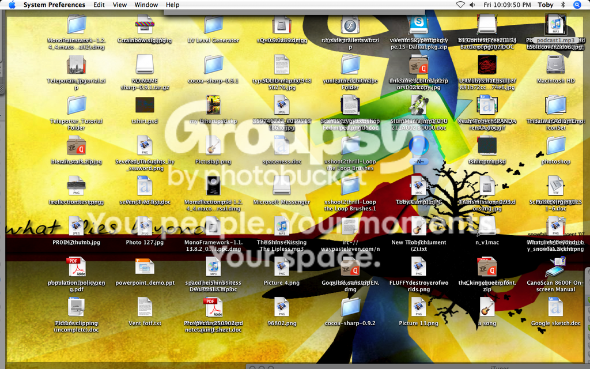
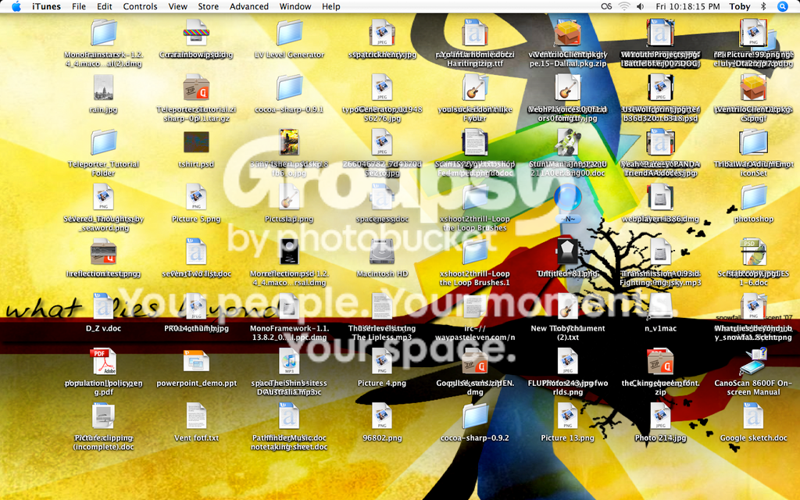
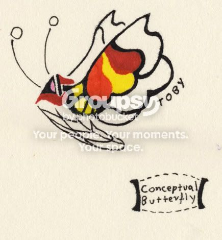
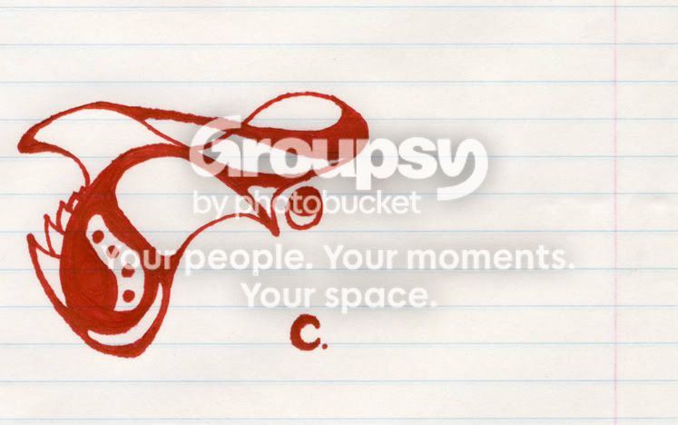
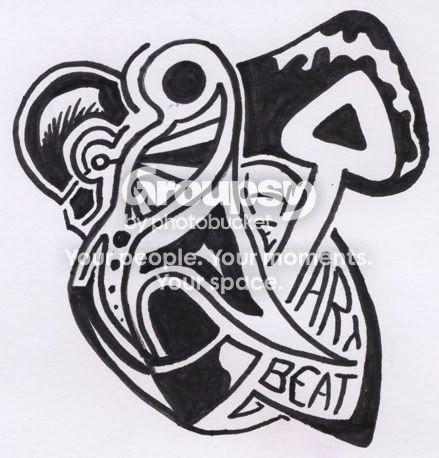

javascript:emoticon(':yes:') im in! javascript:emoticon(':D')
LOOK BELOW FOR MY 2 SUBMISSIONS
ill join  ... but i already submitted a map after you submitted that tileset with all the stuff about dragons in the description.... o well ill try and make another but im not fantastic at tiles....
... but i already submitted a map after you submitted that tileset with all the stuff about dragons in the description.... o well ill try and make another but im not fantastic at tiles....
... but i already submitted a map after you submitted that tileset with all the stuff about dragons in the description.... o well ill try and make another but im not fantastic at tiles....SURE ILL JOIN, SOUNDS KOOL (sorry for the caps, been on Ned)
PLEASE DO NOT SUBMIT THIS MAP INTO THE COMPETITION: http://numa.notdot.net/map/75880
SUBMIT THESE 2 PLEASE: http://numa.notdot.net/map/75919 , http://numa.notdot.net/map/76052
SUBMIT THESE 2 PLEASE: http://numa.notdot.net/map/75919 , http://numa.notdot.net/map/76052
i think ill make a map but at the moment numa wont let me log in should i just attach it in a txt file?
http://numa.notdot.net/map/79051
that my submission, i like it alot the tiles are kool and it has special effects! lol
that my submission, i like it alot the tiles are kool and it has special effects! lol
yeh alrite...
just for you kimmie
just for you kimmie
god im getting annoyed at this cmon judges its been AGES 

strange, i thought all the first ones were above average but not great and then the last few went something like crap crap great great great great 
nice job though and i think you put it together pretty bloody quick
nice job though and i think you put it together pretty bloody quick
for everyone whos not aware... IAABH is leaving
AWW.....
AWW.....
sigh ... i understand 
i would change the name if new how to (im new at this whole forums thing)
anyways..... o right thats what i was going to say:
why dont you come back when v1.5 comes out like brttx?
sounds like a plan to me
anyways..... o right thats what i was going to say:
why dont you come back when v1.5 comes out like brttx?
sounds like a plan to me
ignore that i just worked it out
YEH JUDGES... DO STUFF
hehe yeh hurry up
hehe yeh hurry up
by agd do you mean completion as well or just plain AGD?
2 x 81/100
pretty good i wonder if ill get a sig..... btw how do you actually use sigs im confused about all this 
pretty good i wonder if ill get a sig..... btw how do you actually use sigs im confused about all this i know this would be complicated
but maybe you could giv the bitesizers a bitesizing score, the ones who you thought made better decisions get a higher score and then if some guy bitesizes a bad map a higher bitesizing guy could unbitesize it. make sense? and from bad/ good decisions bitesizers could lose/get points but i guess thats a little to complicated
but maybe you could giv the bitesizers a bitesizing score, the ones who you thought made better decisions get a higher score and then if some guy bitesizes a bad map a higher bitesizing guy could unbitesize it. make sense? and from bad/ good decisions bitesizers could lose/get points but i guess thats a little to complicated
you dont rate the quality of the decision, each bitesize member gets a number of points according to sweep, he/IAABH can bitesize maps AND un bitesize maps that have been bitesized by people with lower no. of points... i guss its too complicated anyways
can bitesize maps AND un bitesize maps that have been bitesized by people with lower no. of points... i guss its too complicated anywayslol i understand... 


o well ill work it out for my self
o well ill work it out for my self
you should start on the 2nd round ones b4 the round 1 is over, plus i think that youve been doing it pretty fast, nicely done
jeez..
i was just making a jk about IAABH being one of the only girls on numa... or at least trying i dont know what maps she bitesized but dont take it so bloody seriously! i agree that the bitesizing quality has been going DOWNHILL since it got onto numa but i think that can be changed...
a what about if 2 people have to bitesize a map for it to become bitesized?
also maybe sweep could give out some unbitesizing rights and if you get [number] of people saying it doesnt derserve to be bitesized it can be unbitesized
PS.please do quote "one of the only girls on numa" and tell me heaps of others... so what i might be wrong... o well
i was just making a jk about IAABH being one of the only girls on numa... or at least trying i dont know what maps she bitesized but dont take it so bloody seriously! i agree that the bitesizing quality has been going DOWNHILL since it got onto numa but i think that can be changed...
a what about if 2 people have to bitesize a map for it to become bitesized?
also maybe sweep could give out some unbitesizing rights and if you get [number] of people saying it doesnt derserve to be bitesized it can be unbitesized
PS.please do quote "one of the only girls on numa" and tell me heaps of others... so what i might be wrong... o well
oh sorry for the double post but i just saw kirby's
your supposed to bitesize map when you think other people will love them as well right?
well in my opinion races are the most fun maps, DDA's are good but you only press the p button, i think KRADDA and the new CTRDDA race are good cos they're interesting to watch but other than that i normally find ddas pretty boring
Actions are nice to, it really depends how you feel at the time, if you want to have a nice challenge a action maps is normally the go but race maps are better in other cases.... damit im going off topic IGNORE ALL THE TYPING ABOVE
basic message: Races are bitesized more because (in my opinion) people like them more, i agree that their have been a few recently that didnt quite deserve it but then we come to the topic, how good do maps have to be to be bitesized?
I think, if you play an action map for about 40mins enjoying it the whole time it should be bitesized, races should not get boring after the 5th or 6th completion, puzzles should make you think and take a bit of practice to get used to (and be fun of course, very fun) And DDAs well.... you know my opinion on that.... but overall i think we're still finding our feet on what should be bitesized and what shouldnt, at the moment about one in 10 maps bitesized, i think deserves it.
your supposed to bitesize map when you think other people will love them as well right?
well in my opinion races are the most fun maps, DDA's are good but you only press the p button, i think KRADDA and the new CTRDDA race are good cos they're interesting to watch but other than that i normally find ddas pretty boring
Actions are nice to, it really depends how you feel at the time, if you want to have a nice challenge a action maps is normally the go but race maps are better in other cases.... damit im going off topic IGNORE ALL THE TYPING ABOVE
basic message: Races are bitesized more because (in my opinion) people like them more, i agree that their have been a few recently that didnt quite deserve it but then we come to the topic, how good do maps have to be to be bitesized?
I think, if you play an action map for about 40mins enjoying it the whole time it should be bitesized, races should not get boring after the 5th or 6th completion, puzzles should make you think and take a bit of practice to get used to (and be fun of course, very fun) And DDAs well.... you know my opinion on that.... but overall i think we're still finding our feet on what should be bitesized and what shouldnt, at the moment about one in 10 maps bitesized, i think deserves it.
im a map maker, and ill join
o and sorry for the double post but,
what an ass 
what an ass
i dont find it that amusing, i just think ...why feel sorry 4 him i mean seriously, what a retard
a map basically saying that IAABH was actually a mangina and that we were supposedly all losers because he pretended to be a girl.... ")
sure 
.... have you forgotten all about this?
i mean seriously, i think it been over 2 months now
why didnt you start WHILE maps were being subbed?
i mean seriously, i think it been over 2 months now
why didnt you start WHILE maps were being subbed?
sure ill join
GREAT IDEA! im definitely in
basically for each rating you must comment, by doing this snipers will (hopefully) be to lazy to snipe and people will start getting into the habit of leaving constructive critism. (also it would probably be good to make it so you cant just do space in title and in comment cos then this idea would work)
o sorry didnt know, can you delete topics?
yeh im torn between my own idea and atillas point of people doing th dsgfagsd and all, but couldnt those people be banned anyways? it would make snipers recognised  stupid snipers
stupid snipers
stupid snipersive never used user levels b4, can someone PM me?
damit i forgot about this!! 
http://numa.notdot.net/map/80168
http://numa.notdot.net/map/77510
those are ones by me
http://numa.notdot.net/map/47750
http://numa.notdot.net/map/81711
http://numa.notdot.net/map/80893
http://numa.notdot.net/map/79164
http://numa.notdot.net/map/78151
http://numa.notdot.net/map/57335
and those are by others, why hasnt anyone bitesized systematic!!!???
http://numa.notdot.net/map/77510
those are ones by me
http://numa.notdot.net/map/47750
http://numa.notdot.net/map/81711
http://numa.notdot.net/map/80893
http://numa.notdot.net/map/79164
http://numa.notdot.net/map/78151
http://numa.notdot.net/map/57335
and those are by others, why hasnt anyone bitesized systematic!!!???
plz let me do it in edit, one im terrible with FBF, 2userlevels isnt working (i followed the instructions but it wont let me save the userlevels document....PLEASE???? 
i understand.... o well ill hav a shot at it
o well ill hav a shot at it this is as good as i can get.... it'll gonna be close 
lol how did i know id get beaten...
LL&B
sorry....
um jakel?
um jakel?
look i dont really like the idea of the contest but if it actually gets up and running, ill judge, just pm me
sorry im going to have to bail, ive got heaps of hw and i just tryed making a map with only 2 and 6 and failed miserably.... really sorry
really sorrylol that was same with me, look at previous posts
i agree that you cant really get to "love" at 13 BUT when i was is grade 6 i stayed with a girl for 1 yr
woot my first finished competition and my first prize
thanks judges and topolord
how long should it take?
thanks judges and topolord
how long should it take?
Im not in the contest but..... wtf 6 months? holy crap seriously get it done- stop making maps and judge- you made a freaking commitment
i vote for blizz 
its just a tileset but its very flowy and fun to play around with
http://numa.notdot.net/map/77702
needs 2 votes
http://numa.notdot.net/map/77702
needs 2 votes
just something that has annoyed me a heap is that floorguards cant be place on "A5" tiles. I just hope they can be placed more freely in 1.5
(basically half snapping floor guards)
(basically half snapping floor guards)
yeh 1/2 snap doors would be nice
going up walls..... hmmmm
probably not, i at least wouldnt use it much and if they did make a up walls one, it shouldnt be a floorguard
it should look different
going up walls..... hmmmm
probably not, i at least wouldnt use it much and if they did make a up walls one, it shouldnt be a floorguard
it should look different
the wikipedia article doesnt really help...
i can not beat 44 3
ive tried over and over again and at this rate floor guards are going to become my no. 1 killer, plz help
ive tried over and over again and at this rate floor guards are going to become my no. 1 killer, plz help
i worked it out now, i was doing the wrong kinds of jumps in the little spots at the end of the tunnels
wtf? i did...... whatever ill resend....
lol i vote for qix
i voted for qix and not me and my vote was for what one was truly my favorite so it should be a problem right???
sorry i posted twice..... woops..... im really not going well with this am i....
hey this is kinda a what you hate and what you love thing about my maps.
id like advice on:
what im best at
what types of maps im best at
what type of maps im worst at (obviously survival)
what im worst at
and basically all the little things that make my maps bad or good
http://numa.notdot.net/browse?author=fingersonthefrets
damn... i accidentally put this in the wrong forum section still id like advice...
id like advice on:
what im best at
what types of maps im best at
what type of maps im worst at (obviously survival)
what im worst at
and basically all the little things that make my maps bad or good
http://numa.notdot.net/browse?author=fingersonthefrets
damn... i accidentally put this in the wrong forum section still id like advice...
im a maybe.... for races and action
hm.... i really need to know how long we have to do it in...
...
alritey you persuaded me, im in
no way! i love your avy
sorry it sent twice.......
here, i basically just want "Frets" in the top left area, (in the black) is that easy? i really dunno i have no image making thing (even though i'd lllloooooovvvvvvvvee one) unless you count powerpoint....
heh thx
thxat first i thought.... meh but it grew and grew on me, now i love it
10/10 athough i think the avy should match...
10/10 athough i think the avy should match...
lol dont realy care but id like it if someone could pm me the link to the "whats your fav map or yours" or something like that thread
see my sig, i love it....
I like the new donation button on numa but cant use paypal because of all the details and stuff it asks
is there any other website you could use?
is there any other website you could use?
i like the 3rd view hobo one the best
nice work
nice work
because of all the details and stuff it asks
yeh... i at least and alot of other people i know aren't allowed use things like this because of all the personal details they ask for
im not that worried about it, but my parents are, and they have the card....
atilla.... i nearly broke my computer
atilla.... i nearly broke my computer
i say the next style should be pop art
... mum still says i cant send money by it.... can we give you a check by post or something?
if so whats your address (PM) and.... i understand if you cant give it
if so whats your address (PM) and.... i understand if you cant give it
i have only have the ones you start with.... i never use userlevels
you will start making all other kinds of maps (not DDAs) and you will become the best mapmaker of all time
heh yeh if i click on the adds over and over again will it be better for numa
o and its cant btw...
o and its cant btw...
... i didn't mean that, i meant that it's can't, not won't
well heres me
am i sexy or what.... and possibly young... meh still sexy!!!
am i sexy or what.... and possibly young... meh still sexy!!!
hah! please tell me that bag hasnt been used..... 

nope
limer?
limer?
Primary colours: bright green, white (no blending- very little blending thx)
Theme: abstract,
Renders/images: -
Text: frets
Complexity: simple
Matching avatar (yes or no): yes
Dimensions (size): i dunno, just not too small
Preferred artist (optional):
thx
Theme: abstract,
Renders/images: -
Text: frets
Complexity: simple
Matching avatar (yes or no): yes
Dimensions (size): i dunno, just not too small
Preferred artist (optional):
thx
nah thx, its really nice
....are you able to put it onto the web for me? i dont get how to....
....are you able to put it onto the web for me? i dont get how to....
thanks that helps a heap, although i dont have right click... meh
heh... this is just confusing... can someone please lock this topic before my head explodes
i hate 83-3 because im completely stuck on it and its aggravating and boring and stupid and not fun and it should be burnt to ash ")


i've beaten 6 columns..... and 87 or something episodes o i also hate 69-3, ive been stuck on it for way to long
i've beaten 6 columns..... and 87 or something episodes o i also hate 69-3, ive been stuck on it for way to long
3 i absolutely love a few of my maps, but the rest are... ok
Don't you understand? It doesn't matter, you bitesize maps because they're good, therefore time shouldn't come into it.Yes But I've had many-a-debate with several different people that I bitesize too much, and I wanted to know a good average number
(i.e.) When I go through at the end of the week with all of my favorites, say there are 50 of them, should I pick the top 3, the top 5, the top 10, etc.
theres not a limit
if its worthy, size it. its very hard to get a average number because no one has been tracking all the maps that have been bitesized (except maybe sweep) if you really wanna know you could ask him how many bitesizers there are and how many bitesized maps there are and average or something and then minus a few hundred since many arent worthy
, personally i think that you (kkstrong) should put your standards a bit higher, there have been quite a few by you that i think havent been worthy.... although i dont have a bitesize acc
also IAABH could raise her/his standards as well
i wouldnt like it
things like KRA races wouldnt be as unusual and as challenging to play and watch
it would spoil alot of the challenge of the game
things like KRA races wouldnt be as unusual and as challenging to play and watch
it would spoil alot of the challenge of the game
well imagine how many KRAs there would be made purely out of one ways.... grr and there'd be other maps that wouldnt be as kool but ive forgotten which types
agree the sides of the skull are to pointy and weird... but the rest is amazing
well personally i love the shape of the hand and the distortion of the numerals in the droplets
i think get it but
isnt it a bit confusing? i mean if you have a complicated tileset and want to change it alot then you have to no where every tile is and what tile it is, same with the objects
isnt it a bit confusing? i mean if you have a complicated tileset and want to change it alot then you have to no where every tile is and what tile it is, same with the objects
for me it is but i think with a bit more thought it could be great
k i think that probably enough said, topic locked please
ill judge if it gets going
im finished but cant sub it now can you pm me in about 12 hours to remind me? night
When you click on the bitesized button at the moment it goes to a list of the newest maps submitted that have been bitesized.
I think it would be alot better to make it go to a list of the newest bitesized maps.
What do you guys think?
thanks atilla
I think it would be alot better to make it go to a list of the newest bitesized maps.
What do you guys think?
QuoteCurrently, when you are surfing bitesized maps, it shows the most recently submitted maps first, regardless of when they were bitesized. He suggests it be altered so that the most recently bitesized maps be shown instead.
thanks atilla
thanks atilla i was to tired to word it well 
yeh i think you could but i want it to be the DEFAULT one so you dont have to bother going through with the fiddling process
Yeah, it's been mentioned a lot before, but I'm up for it. You might be able to get there through fiddling about with the URL.
yeh i think you could but i want it to be the DEFAULT one so you dont have to bother going through with the fiddling process
well it really depends
i would love it for action maps and use lightly in races when playing them but wouldnt really like naking maps with them it would make making great maps to easy to acheive (in my opinion)
i would love it for action maps and use lightly in races when playing them but wouldnt really like naking maps with them it would make making great maps to easy to acheive (in my opinion)
look ive made a little race but i cant be stuffed going through that adding to your map thing so... whatever if you guys can be bothered go ahead... crap i deleted it...
when doing action maps (in my opinion) having flow and multiple paths is great
i just sized systematic by MARKASFJSDSDJGJSDJVJASDJFJA forgot name but is in caps and starts with MA
and its not on the bitesized page
and its not on the bitesized page
well you find yourself funny, you used 3 times and no other smilies
3 times and no other smilies nah im concentrating pretty hard on how to make good action maps, i just cant do it, my 150th will be a great action
im a metanut? that didnt take much
im a metanut? that didnt take much
very good idea someone call sweep
thats the one
and i know, i was just telling kkstrong
and i know, i was just telling kkstrong
is there any way we can make sure we get less of the ads that are moving? im absolutely fine with the flat picture adds but the moving ones, they bug me a bit
kool thanks
love it
clowns
clowns
i have a mac, i just worked it out for my self, its not that hard
is it to soon to change sig? i just like changing it all the time if you cant be bothered..... meh i dont really care, your choice
Primary colours: anything that looks kool (probably green orange red?)
Theme: juggling!
Renders/images: juggling balls and.... w/e
Text: i ran away to join the circus
Complexity: 4/5 on the complexity scale
Matching avatar (yes or no): yes (with "frets" included in avy [not in sig])
Dimensions (size): not to small
Preferred artist (optional): dont really care, ive had xdude so maybe ctb or harley? but really dont mind
if you cant be bothered..... meh i dont really care, your choicePrimary colours: anything that looks kool (probably green orange red?)
Theme: juggling!
Renders/images: juggling balls and.... w/e
Text: i ran away to join the circus
Complexity: 4/5 on the complexity scale
Matching avatar (yes or no): yes (with "frets" included in avy [not in sig])
Dimensions (size): not to small
Preferred artist (optional): dont really care, ive had xdude so maybe ctb or harley? but really dont mind
repeat 99 times: ninety is spelt n-i-n-e-t-y
how did you get nindae... trying to spell ninety, you poor uneducated person
how did you get nindae... trying to spell ninety, you poor uneducated person
huh how?
nm i did it
nm i did it
1. tiles being able to be flipped (quite likely this has been discussed)
2. "play game" levels able to be changed so that people can compete on other peoples sets of levels (basically map packs switched to actual game (but im not to sure how this would go done)
w/e
go on
tell me everything im saying is crap"
im off to watch heroes
2. "play game" levels able to be changed so that people can compete on other peoples sets of levels (basically map packs switched to actual game (but im not to sure how this would go done)
w/e
go on
tell me everything im saying is crap"
im off to watch heroes
it would be nice in a pop up window, it would have the link on the side bar and when you clicked on it a window would come up with all the online users....
just wondering but would it cause problems when people like me are always logged on?
just wondering but would it cause problems when people like me are always logged on?
yeh i love this idea
another thing i'd like is number of hits (views)
has this already been suggested?
another thing i'd like is number of hits (views)
has this already been suggested?
no no no no no
i hate it, all the nooby people would just say, too whatever and rating
the human race is a lazy race
if we get something that makes our lives a little simpler we take it...... the lazy bastards we are
(replying to actual topic)
i hate it, all the nooby people would just say, too whatever and rating
the human race is a lazy race
if we get something that makes our lives a little simpler we take it...... the lazy bastards we are
(replying to actual topic)
yeh i'd like to see how many hits my maps have had
well basically alot of the time, others and I, press back back back back back etc. and forget we've commented.
when it passes the comment section our comment appears again on the map.
i was wondering if you were able to make sure that you could comment the exact same thing on a map twice or more times
when it passes the comment section our comment appears again on the map.
i was wondering if you were able to make sure that you could comment the exact same thing on a map twice or more times
??? huh?
i mean when you put a comment on a map, then if you go back after going to a few links, it doesnt resend the comment
unpossibehl..... 
i mean when you put a comment on a map, then if you go back after going to a few links, it doesnt resend the comment
unpossibehl.....
yay for aus
platypus...
platypus...
69 3... or 2... the one with the homing zaps.... grrrr
name: frets
where: ontop of tamamas door box
action: holding a open door key, laughing at tamama
colour: dark green
thx
where: ontop of tamamas door box
action: holding a open door key, laughing at tamama
colour: dark green
thx
i was working on a dda for the demo dda contest.... god damit....
yeh id like itjust wondering but would it cause problems when people like me are always logged on?Perhaps there could also be a cutoff time for people who do that, and I believe it's the same on certain forums. (Explained below.)
You show up on the "active users" list when you're actually clicking around on the site; It refreshes automatically every 5 minutes. (Or whatever amount of time we decide upon.) If you're inactive (You don't click anything) on NUMA within those 5 minutes, you will not show up on the list again until you click something.
I know this entire online list is not completely necessary, but it is somewhat more convenient.
what ive got so far
using demo one
how am i going?
using demo one
how am i going?
*No, not PMS, though sometimes it seems just as irritating.
Hah!
ok im not going to do a iaabh on you and say anything to get attention but i am officially changing my rating style, lowering it to a proper standard.
I have been rating higher on maps than they should be rated and will stop doing this and hopefully stop a few other people as well
when i came to numa i felt inclined to rate as everyone else was rating, i didnt really get what a good map was at the start so i rate like the rest of you (i know, how noobish of me)
but i find there are many people like me who rate higher than the map is worth, and probably like me, have gotten into a habit
I am just hoping if we all lower our rating style together
1. maps will be rated fairly by us
2. if there were any newcomers that did the same as me when i was a noob (im not a noob now right )
they will inclined to rate the maps at the standard that we rate, i proper standard
anyways... what do you think
w/e guys
I have been rating higher on maps than they should be rated and will stop doing this and hopefully stop a few other people as well
when i came to numa i felt inclined to rate as everyone else was rating, i didnt really get what a good map was at the start so i rate like the rest of you (i know, how noobish of me)
but i find there are many people like me who rate higher than the map is worth, and probably like me, have gotten into a habit
I am just hoping if we all lower our rating style together
1. maps will be rated fairly by us
2. if there were any newcomers that did the same as me when i was a noob (im not a noob now right
)they will inclined to rate the maps at the standard that we rate, i proper standard
anyways... what do you think
w/e guys
yeh i know but im trying to get others to join, i want to get the whole mob of numa to change, therefore changing alot of the newer peoples styles of ratings, and getting to a normal standard of a rating system
does it work on mac?
maybe its just me... it happens all the time to me, i might just be lazy,
@atilla
...im confused...who was that aimed at?
@atilla
...im confused...who was that aimed at?
....look w/e
i just thought there were alot of others like me that got into the habit of rating high
and i thought if we changed together it would make a reasonably big difference on the rating system on numa
......w/e
lock this topic
i just thought there were alot of others like me that got into the habit of rating high
and i thought if we changed together it would make a reasonably big difference on the rating system on numa
......w/e
lock this topic
...weird
oh well
lock
oh well
lock
should?
....it hasnt
....it hasnt
How is humanity's existence most likely to end?
Ice age caused by global warming cooling the see with meltwater.... i dont really get that heat making everywhere cold stuff
warmness caused by global warming that makes people too warm.... its possible we'll adapt, we just need to be better with carbon
object(s) from space damaging the planet.... i refuse to believe we will die from some rock blowing up our planet... for some reason it just seems so stupid
the sun's expansion.... we are so badly gonna be dead by then
technological disaster.... uh.... i guess ...maybe
destruction of the the solar system through natural means.... heh like if a astronaut farts next to the sun
biological disaster... nah
geological disaster... well i think that will like with human stupidity
catastrophic consequence of human aggression/stupidity..... DEFINITELY
supernatural cause (e.g. act of God)... possibly we never know
Ice age caused by global warming cooling the see with meltwater.... i dont really get that heat making everywhere cold stuff
warmness caused by global warming that makes people too warm.... its possible we'll adapt, we just need to be better with carbon
object(s) from space damaging the planet.... i refuse to believe we will die from some rock blowing up our planet... for some reason it just seems so stupid
the sun's expansion.... we are so badly gonna be dead by then
technological disaster.... uh.... i guess ...maybe
destruction of the the solar system through natural means.... heh like if a astronaut farts next to the sun
biological disaster... nah
geological disaster... well i think that will like with human stupidity
catastrophic consequence of human aggression/stupidity..... DEFINITELY
supernatural cause (e.g. act of God)... possibly we never know
OK so basically i'm saying magic (or something like it) has to exist.
There is know way )that i've thought of yet that it couldnt
how was earth created? it was created by say.....mr.x
how was mr. x created.... by mrs.y of course
how was mrs.y created? etc. etc. etc.
it just keeps on going
some how there must of been something that just appeared, out of no where, something that just happened
I'm open to people proving me wrong but.. yeh
sorry but this has been on my mind for about 10 1/2 years (im 15)
yes, i was a very inquisitive kid
There is know way )that i've thought of yet that it couldnt
how was earth created? it was created by say.....mr.x
how was mr. x created.... by mrs.y of course
how was mrs.y created? etc. etc. etc.
it just keeps on going
some how there must of been something that just appeared, out of no where, something that just happened
I'm open to people proving me wrong but.. yeh
sorry but this has been on my mind for about 10 1/2 years (im 15)
yes, i was a very inquisitive kid
completely true
nothing can ever be known,
alot of it is about perception as well
if say you "died" from this universe thing
but came back in another would you say you were alive before or you are alive in the universe you have just come to... or both?
like i said , all perception
nothing can ever be known,
alot of it is about perception as well
if say you "died" from this universe thing
but came back in another would you say you were alive before or you are alive in the universe you have just come to... or both?
like i said , all perception
making?
action/race
playing?
race
thats 2 for race so race wins
action/race
playing?
race
thats 2 for race so race wins
well i think we're pretty f....d
we are in a age of absolute disaster due to stupidity and have some pretty stupid people in parliament dealing with it all
we are in a age of absolute disaster due to stupidity and have some pretty stupid people in parliament dealing with it all
basically by magic i mean something that is happens but is impossible according to the laws of science
i am very lazy and can't really be stuffed looking it up but with the general knowledge i have then i think there must be something out there somewhere
Something has to have just appeared
i am very lazy and can't really be stuffed looking it up but with the general knowledge i have then i think there must be something out there somewhere
Something has to have just appeared
...basically by magic i mean something that is happens but is impossible according to the laws of scienceThe laws of physics do not extend beyond the existence of the universe. Therefore, any "cause" which resulted in the universe cannot be considered magic under your definition.

This is based on causation (every event has a preceding cause), which isn't necessarily true. In some situations, on a quantum scale, causation is blatantly false. Also, causation only makes sense within the context of time, and time most likely hasn't existed forever.
My definition of "magic" basically means that if a event didnt have a preceding cause then it must of been magic, must of just appeared, if time didnt exist what happened? there must of been time unless we got put on pause for a while.
(sorry if i am finding this bloody hard to understand, i know this is a pretty stupid excuse but i am only 15)
somehow the universe and w/e just started.
I guess this is a kind of pointless topic to put in serious discussion as we can never get a definite answer.... sorry
still there is so much going on that we don't know about.
A lot of scientists believe that they KNOW alot of things but there are so many unanswered questions that link to the things they think they know there for, like a domino effect, they can't be sure of anything (which comes to your everything could be an illusion subject demonz)
for the meaning of life look it up in the dictionary
for the point of life:
the point of life is to have fun, everything we do is in order to make life easier, more enjoyable
for example, you go to work to make money to make your life more enjoyable/livable
for the point of life:
the point of life is to have fun, everything we do is in order to make life easier, more enjoyable
for example, you go to work to make money to make your life more enjoyable/livable
thats what i was trying to say.....
i dont get why so many authors used the chain on the bottom left
it was to random so it spoilt the gameplay for amny of the maps
it was to random so it spoilt the gameplay for amny of the maps
i can't think of anything for 15 without being racist
No, I think he means a chaingun.
correct atilla, you should get a cookie
1283
uhhh.... hmm... let me think..... NO!
would you make every map you've made and will make a ded to me?
would you make every map you've made and will make a ded to me?
for the meaning of life look it up in the dictionary
for the point of life:
the point of life is to have fun, everything we do is in order to make life easier, more enjoyable
for example, you go to work to make money to make your life more enjoyable/livable
sorry, the challenge in life is to make it more enjoyable and fun
absolutely love "vas dis?"
got it as desktop
got it as desktop
My vote goes to fingersonthefret's map, I personally prefer his one even over Qix's. But sadly, it looks like he can't stand up to Qix with just 2 votes.
.... thanks anywayspersonally i think a few maps would be a HEAP better than mine if they had just deleted a chaingun on the bottom right
.... that really spoilt many maps
EDIT: 3 votes?? i might have a chance after all
I don't know, I don't really Finger's map. It is way too linear and hard. I don't even know if it's possible. I can't get into the exit area because of the mine. (Your free to post a completion and prove me wrong.)
...... i dont think i put that there, it was in c snap....i must of...
well ignore that, there is the editing round
but without that , its not to hard, i agree it's hard but not to hard, with practice it's quite easy, ill get a demo, if i remember
Practise on the rocket bits, use bounce blocks wisely...
I have done up to 88-4, and I don't play it anymore, I just use it to play NUMA maps and make maps.
I still try to beat it, but ive done everything up to 88-4 now
also im kinda stuck on map making at moment
if some on can pm me an idea of what map to try and make (eg. a 1500 frame DDA or what evs)
ill ded it to them
is it to soon to change sig? i just like changing it all the time
Primary colours: anything that looks kool (probably green orange red?)
Theme: juggling!
Renders/images: juggling balls and.... w/e
Text: i ran away to join the circus
Complexity: 4/5 on the complexity scale
Matching avatar (yes or no): yes (with "frets" included in avy [not in sig])
Dimensions (size): not to small
Preferred artist (optional): dont really care, ive had xdude so maybe ctb or harley? but really dont mind
@harley um... can you pm the sig to me.. its not loading on this for some reason... or give me the link, yeh link would be easier
working
working
Well this is basically a topic where you can discuss whether a competition is a good one or not.
I have seen a thread or 2 that ask whether their contest is good enough and if we put it into one big topic, it should help.
I know sweeps "about to start a contest" thread trys to prevent this, and works, but alot still slip through the system.
If anyone has a idea for a contest, please post it here. Try to look around to see there is nothing else like yours first as this is a common problem.
so.... discuss away
I have seen a thread or 2 that ask whether their contest is good enough and if we put it into one big topic, it should help.
I know sweeps "about to start a contest" thread trys to prevent this, and works, but alot still slip through the system.
If anyone has a idea for a contest, please post it here. Try to look around to see there is nothing else like yours first as this is a common problem.
so.... discuss away
well, we'll see if this takes off
The about to start a topic thread does get discussed in a little but not much
If newbies to the forums saw this I think they might be more open to finding out why/ why not the contest is good enough,
thanks for your opinions
The about to start a topic thread does get discussed in a little but not much
If newbies to the forums saw this I think they might be more open to finding out why/ why not the contest is good enough,
thanks for your opinions
when i first came into the forums one of the first threads i went onto was sweeps one and i didnt post because... to me at least it didnt seem like things were being discussed in great detail
EDIT: i may as well start things off
well the idea is basic at the moment but a while ago there was this contest: http://metanet.2.forumer.com/index.php?sho...0&hl=skate+park
i was thinking basically
you choose one of the maps from the contest
you can add one zap drone and one of any other enemy
you make 2000-2500 frame demos and points are given out of 10 for flow in demo, use of area, and excitement
what do you think?
EDIT: i may as well start things off
well the idea is basic at the moment but a while ago there was this contest: http://metanet.2.forumer.com/index.php?sho...0&hl=skate+park
i was thinking basically
you choose one of the maps from the contest
you can add one zap drone and one of any other enemy
you make 2000-2500 frame demos and points are given out of 10 for flow in demo, use of area, and excitement
what do you think?
http://numa.notdot.net/map/86637
http://numa.notdot.net/map/75919
i g2g if i forget to rate (ill comment) PM me
http://numa.notdot.net/map/75919
i g2g if i forget to rate (ill comment) PM me
maybe... but it would be complicated are you able to go into more detail?
i love kra races and ddas and puzzles and.. etc but you need to think this one through more clearly
yeh unpin it
its been fin for a while
its been fin for a while
ill do it if you get enough people
15
I think it could be great but would be hard to pull off
do it if you have time to really put thought into how you'd arrange it all and since it will be a long contest make sure you can have time
do it if you have time to really put thought into how you'd arrange it all and since it will be a long contest make sure you can have time
me with use of photobooth... YAY
franz ferdinand, the crayon fields, the cure, the arctic monkeys, the clash, the kaiser chiefs, the strokes, the libertines, jack johnson, gorillaz, the pixies, powderfinger
alternative rock
fav songs are ever changing
alternative rock
fav songs are ever changing
Okay, let's weigh the options.
-Robotology has not been previously released and I have N 1.4
-I've been waiting forever for N 1.5
-I've been waiting forever for Robotology
-I have already finished N
-N is free
-I don't have a job
...N it is
robotology isnt free? do we have to pay for it and if so how and how much, i cant do credit card unfortunately.... although... if i bug my parents about it a heap... maybe
but robotology isnt free
I decided to change my mind. Monopoly is slowly getting boring and this forum is a hell of a lot better than Monopoly because most of my friends aren't on when I'm on. Also, I hate the losing aspect of it.
i was wondering why you were posting comments on my maps alot
are you still making maps?
ps. losing in monopoly sucks, one of the most depressing games to lose in, you play for ages and get nothing out of it... grr
yup, it would be great but there should be a key to press while replays like splodin' chipmunk said
yeh good idea but there should be a option like in drones how you press say a (dumb ccw), d (left), space (homing)
it should go d (left), then q (normal) or e (grippy)
it should go d (left), then q (normal) or e (grippy)
yes apg, yes, you did
but yeh i agree
but yeh i agree
i have photoshop elements (yes i know...) and was wondering a few things
1. can you (by you i mean anyone kinda thing) make good sigs using photoshop elements?
2. can you make good sigs solely using photoshop elements
3. can you make good sigs solely using photoshop
4. if one and two is a yes, can some one teach me to use photoshop well? i will ded 15-25 maps to that someone and put a link to their maps/ numa user page/ forums user page
i am not selfish in any way
(ps. can someone tell me how advanced you can make things look with elements?)
1. can you (by you i mean anyone kinda thing) make good sigs using photoshop elements?
2. can you make good sigs solely using photoshop elements
3. can you make good sigs solely using photoshop
4. if one and two is a yes, can some one teach me to use photoshop well? i will ded 15-25 maps to that someone and put a link to their maps/ numa user page/ forums user page
i am not selfish in any way
(ps. can someone tell me how advanced you can make things look with elements?)
aw
cya sweep
cya sweep
i had completed every episode except 88 & 89 and then my progress got deleted (no i haven't put anything in the trash)
heres what happened
1. the night before i made it so n opened at login
2. in the morning two n's opened for no reason, both with all my normal progress
3. i got out of one (i didnt put it in the trash) and played the other
4. after a morning of playing it i went to play a level off numa in neditor and my controls, flava and sound was default
5. i thought this was weird so i went to configure and found i only had the the default flava
6. i went to play game and i now supposedly have done nothing towards completing the game
P.S. if it makes a difference, i have a macintosh version 10.4.9
heres what happened
1. the night before i made it so n opened at login
2. in the morning two n's opened for no reason, both with all my normal progress
3. i got out of one (i didnt put it in the trash) and played the other
4. after a morning of playing it i went to play a level off numa in neditor and my controls, flava and sound was default
5. i thought this was weird so i went to configure and found i only had the the default flava
6. i went to play game and i now supposedly have done nothing towards completing the game
P.S. if it makes a difference, i have a macintosh version 10.4.9
*sigh*
that took me about 3 1/2- 4 months......
that took me about 3 1/2- 4 months......
http://numa.notdot.net/map/88043
please can this be included, no judging has been made yet....
race/action
please can this be included, no judging has been made yet....
race/action
This idea was somewhat suggested a week or so before this thread...
But it sounds gooood.
nope
that was having slow mo in the last few seconds of gameplay
this is having it in the replay
so it still works well and you can do good stuff on it?
it was probably was frustrating for you maestro because your used to normal photoshop and as you said, it does things differently?
it was probably was frustrating for you maestro because your used to normal photoshop and as you said, it does things differently?
sweetFOTF IS THE BEST. FOTF IS THE BEST. FOTF IS THE BEST. FOTF IS THE BEST. FOTF IS THE BEST. FOTF IS THE BEST.QFE
Ohhh man, I can lose like a good sport in just about any game, but Monopoly? It's just so depressing when you lose. It just... lowers my self esteem and confidence level for a short period of time. Meh, I still find map-making boring, but I'm working on a race right now, and you should see it by June or July sometime.
i think if you dont like map making as much anymore you should really take a large break from it, not just subbing levels ever now and then, and then after a while it will hopefully come back to you and youll like map making as much as you used to
yeh.. i guess
but i kinda have lost all motivation for completing the game now.... i might try
but i kinda have lost all motivation for completing the game now.... i might try
yay for apples
why apple is better than windows
apples taste nice, windows don't... un less there from that house that hansel and gretel or who those people are go to thats owned by a witch and made of sweets.....
why apple is better than windows
apples taste nice, windows don't... un less there from that house that hansel and gretel or who those people are go to thats owned by a witch and made of sweets.....
either
ninjas that are undercover as pirates
mario
apple
ninjas that are undercover as pirates
mario
apple
anyone care to say "yeah sure" to question 4?
ill stuff around with a few pics and show you what i can do so far (very little)
original:
ill stuff around with a few pics and show you what i can do so far (very little)
original:
get rid of the one of every robot rule
also what will the entrants be judged on? looks? relevance to the tv show? gameplay?
also ddas should be included what if theres a show where they have to keep a weapon alive and following them without blowing up the planet (KRADDA
also what will the entrants be judged on? looks? relevance to the tv show? gameplay?
also ddas should be included what if theres a show where they have to keep a weapon alive and following them without blowing up the planet (KRADDA
the maximum ride series and the cherub series
fingersonthefrets@hotmail.com
plz!!
plz!!
sorry i dunno how to put to images on a post
this took me 2 hrs... it's basically the extent of what i can do
i can do a bit of hue saturation and posterize stuff and what ever but you know.. pretty basic
also ive found out its photoshop cs, not elements but i got it off a friend so it says "one or more files in the adobe apllication support folder is missing" or something like that, but it still runs fine
my version
this took me 2 hrs... it's basically the extent of what i can do
i can do a bit of hue saturation and posterize stuff and what ever but you know.. pretty basic
also ive found out its photoshop cs, not elements but i got it off a friend so it says "one or more files in the adobe apllication support folder is missing" or something like that, but it still runs fine
my version
thanks guys
that would be great
thanks a heap 
any feedback on the image? how did i go?
thanks a heap
any feedback on the image? how did i go?
heh thanks, i dont think harley wanted that much pressure
heh
also can some one give me a few images that are easy to make nice pics with?
i just want to be able to screw around but its actually kinda hard to find pics that work well
also can some one give me a few images that are easy to make nice pics with?
i just want to be able to screw around but its actually kinda hard to find pics that work well
http://metanet.2.forumer.com/index.php?showtopic=16605&hl=
how do you do things like this
on the thing you said they were 100% photoshop... but i dont see any photos so im kinda confused on how you made something like that so detailed.....
also how long did it take you guys to become good a photoshop (not as good as you are now but still... good)?
how do you do things like this
on the thing you said they were 100% photoshop... but i dont see any photos so im kinda confused on how you made something like that so detailed.....
also how long did it take you guys to become good a photoshop (not as good as you are now but still... good)?
i am just really sick of seing people 4.5avesize and 4avesize
a map should be on the five side if its bitesize worthy
i was wondering if for bitesized users they could only bitesize when they vote 5
after voting 5 on the thanks for voting page there would be a bitesize? button that theuy could press
i know most of you like doing these 4.5avesize things but i wanted to see if there many like me
if you like the idea then... yeh tell, if you dont, same thing
sorry if this isnt a very well written topic i didnt have much time to write it...type it...w/e
a map should be on the five side if its bitesize worthy
i was wondering if for bitesized users they could only bitesize when they vote 5
after voting 5 on the thanks for voting page there would be a bitesize? button that theuy could press
i know most of you like doing these 4.5avesize things but i wanted to see if there many like me
if you like the idea then... yeh tell, if you dont, same thing
sorry if this isnt a very well written topic i didnt have much time to write it...type it...w/e
yup it does, thanks
Oh, yeah! Let's let everyone give out candy votes and bitesizes!He raises a good point. Ratings are so subjective that people may find a 4.5 map worthy of a bitesize, but the last thing we want is them rating it a 5 just to they can bitesize it.
Honestly, you haven't listened to one person who says that ratings are subjective. You still say things slong the line of, "This map shouldn't be bitesized," or "This map doesn't deserve that rating." Let it be, man, and realise that ratings are completely dogmatic.
i guess i agree with all that now but i still think it bitesized maps are underated
any one who 4avesizes maps..... grrr
4.5 i can understand but i think it is happening too often
4.75 and above should be a five, they are the very elite of maps but there are many maps that fit that catergorie
also if you just love a map even if it's not exceedingly good why not rate it 5?
If it provides alot of entertainment/enjoyment that's good enough for me
crap, have no idea about that
whats a irc thingy magig?
whats a irc thingy magig?
can someone go on the irc i wanna test this thing out
im on now
k heres some stuff that ive done, ive been using photo shop for about 2-3 days, i've had it for about 1 month but only just started practicing


I really like the on above
I really like the on above
hah!
the mothers day one is pretty cheap actually, i just uses two brush types, 4 colours, and the text
really simple
the mothers day one is pretty cheap actually, i just uses two brush types, 4 colours, and the text
really simple
the background was an image, a nice looking pic of a flower that i just screwed around with a bit with filters and hue saturation to get the the effect
I also used a pic for the one for L.V
other than that they have no pics
(which i think means they're vectors?)
also if any one wants an avy or a sig ill give it a go very happily
i'd like some more experience but be warned, im not that good
I also used a pic for the one for L.V
other than that they have no pics
(which i think means they're vectors?)
also if any one wants an avy or a sig ill give it a go very happily
i'd like some more experience but be warned, im not that good
ME! heh
um... MARIJNENADRIES
psycho_CO
i don't like formicas race all that much i mean some are super duper good but there are others in there that are... meh
um... MARIJNENADRIES
psycho_CO
i don't like formicas race all that much i mean some are super duper good but there are others in there that are... meh
QuoteForum Rules 3D, multiplayer, warfare, and ideas which add more keys to play will not be implemented, NO EXCEPTIONS. Please do not suggest them.
Above, the suggestions thread thing
sweet
but
do we have to use that exact pic or can we find another pic of him?
but
do we have to use that exact pic or can we find another pic of him?
i waited there for two minutes plus ... and then i saw stepselfs comment...O_o
accepting basic - basic-ish sig requests as of now
done
did it reasonably quickly but i think it looks great
EDIT: oh and anyone who wants to know how i got the 3D effect, i used to things of the same text on dif layers
one red (bottom)
one black (top)
i made the opacity of the black a little lowere and made it a pixel off the other text
EDIT 2: any thing thats not quite the way you want it please tell me brit
and advice would be great
EDIT 3: got myself a border
did it reasonably quickly but i think it looks great
EDIT: oh and anyone who wants to know how i got the 3D effect, i used to things of the same text on dif layers
one red (bottom)
one black (top)
i made the opacity of the black a little lowere and made it a pixel off the other text
EDIT 2: any thing thats not quite the way you want it please tell me brit
and advice would be great
EDIT 3: got myself a border
Ummm... oops?
I don't watch Naruto.
@frets
You can make a 3-D effect by just adding an inner bevel.
Select your text layer>Effects (fx on the bottom)>Bevel and Emboss>Style=Inner Bevel.
meh, i did it my was and i think it looked pretty kool so...meh
WATCH NARUTO

AGCD- all gold completion demo
most people link this with agd but you dont actually have to complete the map to get an agd
most people link this with agd but you dont actually have to complete the map to get an agd
i would definitely use it
of course it's not neccesary, nothing ever is unless it is for a paticular purpose
of course it's not neccesary, nothing ever is unless it is for a paticular purpose
IMO, this is one of the better sigs I've done in awhile. Let me know what you think, King.

well i'm screwed...
The LV school of artistry - Where you can never have too many composites!

well now im screwed, doubletime
1- No bugs (duh...)
2- Faster loading? is that possible?
3- Not remembering nothing now.
no bugs? wtf, bugs rule i say there should be a very secret one that will take us n players ages to find out but in the end will be super kool
finally, it's pinned
mine's coming (no. 2)
right! a border brb

looks great i think
think there is any chance whatsoever i'm able to join the sigs on demand team?
ANY?
no hard feelings if you say no, i just hope you like this
crap i spelt it wrong and its merged so i cant change it, at least i dont think so, i need help desperately
right! a border brb
looks great i think
think there is any chance whatsoever i'm able to join the sigs on demand team?
ANY?
no hard feelings if you say no, i just hope you like this
crap i spelt it wrong and its merged so i cant change it, at least i dont think so, i need help desperately
k i think that first post has gotten a little big, ill be posting the pics in other posts now
Quote: 29403, May 10, 2007 03:30 pmSorry for being difficult.
Primary colours: Any
Theme: Goombas
Renders/images: Goombas http://en.wikipedia.org/wiki/Image:Goomba3d.jpg for the avatar and sig http://www.mfgg.net/index.php?act=resdb¶m=03&c=1&id=9286 for just the sig Thanks!
Text: None
Complexity: I would like a simple
Matching avatar (yes or no): yes
Dimensions (size): 500*100
Preferred artist (optional): ctb or bwd

k i screwed up the size and w/e and im not your preferred artist but if you wanna take it, go ahead.
if you don't no worries, i was just bored and did it pretty quicklys so ...yeah
yeh... made it pretty quickly but... whatyagonnado
thats just what happens when you change the colours the way you did (with the paintbucket thing)
maybe try using slight blur?
maybe try using slight blur?
i've thought of this idea before, it would be very useful when making maps but im not sure if they could get it in in time and 1.6? 1.5 is the final version isnt it?
i know, not the best way to make first impressions with map pack people... o well i was bored and they are actually quite fun.
the 2.5 mins included test playing as well i stopped when i went overtime
might put in to 1.4v data later. thanks!
the 2.5 mins included test playing as well i stopped when i went overtime
might put in to 1.4v data later. thanks!
thanks for that, edited those 2 maps but i dont have time to do the 1.4v thing yet
i will make a proper map pack soon.
i will make a proper map pack soon.
ok...
but try using renders and downloading more brushes
also, the simple filters can add nice touches
but try using renders and downloading more brushes
also, the simple filters can add nice touches
NEW ONES


sorry for the double post, honestly i just want them to get attention and not run off page 1
sorry for the double post, honestly i just want them to get attention and not run off page 1
Chas for the win. That man has balls.
all the way
one of the best shows on TV
how does n rank? best game ever for me, nothing beats n, THANKS M&R!
i can see why LV won
also i like the new layout with the links
also i like the new layout with the links
thanks for the advice, ill take it into account
sorry heres the rating
9/10
it is really nice image, not really my style but it fits together quite nicely and seems to suit you
i think that ninja (ive forgotten his name.... i havent watched naruto in ages cos of dial up and im not good with names)
kinda stands out a little too much because of the paleness of the face.
the light shining through on the left eases that a bit though
9/10
it is really nice image, not really my style but it fits together quite nicely and seems to suit you
i think that ninja (ive forgotten his name.... i havent watched naruto in ages cos of dial up and im not good with names)
kinda stands out a little too much because of the paleness of the face.
the light shining through on the left eases that a bit though
psh. and you get the status of mod
jk
jk
that's better
you really dont know much do you, ill show you some on msn laterTonight's episode was a blast. I loved the ad road test. Lets all pay in bricks!!
i get the podcast, im to addicted to heroes and need to do hw so podcasting makes it easy


avys for sale, get your avys for sale
and basic sigs later
officially a avy and sig shop
one of my fave sigs on the forums, 9.7/10
and yeah, ctb the bar below is was to sharp
and yeah, ctb the bar below is was to sharp
i got a ps2 5 months ago
ive used it for a total of about 4 hrs
n beats the crap out of anything, console or no console in my opinion")
ive used it for a total of about 4 hrs
n beats the crap out of anything, console or no console in my opinion
thanks!
btw can you pm me and tell me how to do that thing how you have links on your sig? its very kool
btw can you pm me and tell me how to do that thing how you have links on your sig? its very kool
i really like the first one.... but then they get to 4 tiley for me, sorry. but the first level.....drools, amazing
it does... but im still confused.... oh well ill get it when i understand ps more
Andrew or Chas. They're all awesome though, as is the show.
Speaking of The Chaser, who here also watched CNNNN? That was The Chaser's first full TV series, back in 2002, and it was awesome.
i'm fungry
heh, what a great show
ill take up the mushroom cloud thing if i can, you can wait for xdudes if you dont like mine, i dont care. i just like making sigs
sorry, didnt work out
sorry, didnt work out
I honestly have no idea what the hell this is. I made it in like 15 minutes when I was bored. Free to take. Credit. Post here if you want it edited. Opinions?
Oh BTW, my first vector brushed.
nope
michael?
michael?
theres actually this condition thing
like my friend was born with it, not a problem but... a difference
he associates colours with numbers
like my friend was born with it, not a problem but... a difference
he associates colours with numbers
Hey,
So, as you may be aware, N is coming to XBLA, DS, and PSP as "N+" -- no release dates yet, but development has started.
We're teaming up with some other developers so that we can keep working on Robotology, however we're "managing/producing" the various N+ projects, so that (hopefully) they'll be even better than the original.
I'd like to add more info, but we haven't even been officially allowed to comment on these games at all yet (damn publishers) so sadly everything else will have to remain a big secret. Maybe that's good -- more surprising later! There are definitely one or two things that we can't wait to tell you about. Okay, no more teasing you with suspense
In Robotology news, we're in the process of putting together a devblog where we can post indie-game-development-related stuff, and hopefully let you see what we've done so far.. similar to http://toonormal.com/ or http://datarealms.com/devlog/index.php.
We'll post a link to the blog once it's up, should be sometime next week.
The physics engine is working well, and we've now started delving into the next step: robotics. This is something we have no experience with, and so far it's been quite a learning experience. I guess I'd better save further ramblings regarding wonderful robotics jargon (i.e "what's the difference between ZMP/COP/FRI?") for the blog
thanks,
Mare and Raigan
N on DS..... holy crap
also
how will robotology be paid for, which methods? i would suggest something other than credit cards as well as credit cards
i get it a little
if i think of a song and try and define it to a colour, there will be an obvious colour to go with it
if i think of a song and try and define it to a colour, there will be an obvious colour to go with it
I wouldn't mind a new sig at the moment, can you do me one please Frets?woops, missed that, im working on it now and its not that great but you can decide,
Anything with kirby or mario in it. Don't put Gangsta-Skorp though, instead can you put CDotLeach.
Thanks...
edit: sorry it's kinda embarrasingly bad now... also you seem to already have got one
for skyline
use if you want, dont mind.
use if you want, dont mind.
Not that that's good for us, our tight-knit community will be ravaged. ;_;
didnt think of that.... crap
uh... ok? yellow against grey? where did that come from?
i like yours alot better, mine was just a quick thing
although i dont like the border or the faint line throughout the images
also the META looks a bit weird
i like yours alot better, mine was just a quick thing
although i dont like the border or the faint line throughout the images
also the META looks a bit weird
THIS IS A STUPID QUIZ
psh... i wasn't frowny until i got the results...
psh... i wasn't frowny until i got the results...
heh... i looked at the title of the topic and i think that its about me becoming a better map maker... stupid stupid stupid...
hey Obelisk68 i wouldnt mind a animated sig.
Topics: naruto, bass guitar (rock style) or the arctic monkeys (band)
rest, dont care
Topics: naruto, bass guitar (rock style) or the arctic monkeys (band)
rest, dont care
Yup big thanks to me! about 3 levels or something out of .... was it 124?
yup, go me
please play though guys and it would be kool to point out fav maps
@skyline, the sig is not too big... psh.
yup, go me
please play though guys and it would be kool to point out fav maps
@skyline, the sig is not too big... psh.
i like most anime
All winners will also receive a lap dance from LV.
well now im interested
krusch sucks
http://numa.notdot.net/map/91490
http://numa.notdot.net/map/90652
http://numa.notdot.net/map/90545
http://numa.notdot.net/map/90405
http://numa.notdot.net/map/90379
http://numa.notdot.net/map/90199
http://numa.notdot.net/map/89737
http://numa.notdot.net/map/89682
http://numa.notdot.net/map/88043
rated above
these are maps that haven't been rated from the past two weeks or so, please check them out all.
http://numa.notdot.net/map/90652
http://numa.notdot.net/map/90545
http://numa.notdot.net/map/90405
http://numa.notdot.net/map/90379
http://numa.notdot.net/map/90199
http://numa.notdot.net/map/89737
http://numa.notdot.net/map/89682
http://numa.notdot.net/map/88043
rated above
these are maps that haven't been rated from the past two weeks or so, please check them out all.
http://numa.notdot.net/map/90652
http://numa.notdot.net/map/90545
http://numa.notdot.net/map/90405
http://numa.notdot.net/map/90379
http://numa.notdot.net/map/90199
http://numa.notdot.net/map/89737
http://numa.notdot.net/map/89682
http://numa.notdot.net/map/88043
rated and commented above
these are maps that haven't been rated from the past two weeks or so, please check them out all.
yeah.
i posted this idea a little while ago...
I AMMmm So0r GUYz BUts I thhinkSd aI OWn3d 2 DAa MMMMMAAAAaaaXXors !111!!!!!!!!1!!
to put it simply, contest over, i win
oh, crap... beatable you say....
pm me to remind me later plz... study time
QuoteI am sorry guys but i think i owned to the max.
to put it simply, contest over, i win
oh, crap... beatable you say....
pm me to remind me later plz... study time
heh this is kinda bad as its from me, but i agree, completely... and im part of it... i agree with everything, when making the maps i didnt really wanna but in much but most of the levels were crowded and too long..... I'm making a solo map pack at moment and would really appreciate if you guys showed me the kind of maps that should be in a map pack, and the length of them especially.
Thing is, whenever i make a good map for the pack, i have to sub it to numa instead, i can't stand waiting to get the pack fin till i get feedback... i guess it's not my thing. advice on length and kinds of maps still appreciated though.
Thing is, whenever i make a good map for the pack, i have to sub it to numa instead, i can't stand waiting to get the pack fin till i get feedback... i guess it's not my thing. advice on length and kinds of maps still appreciated though.
frets: That's exactly where you went wrong, I think. You didn't want to be in on the project, and as much as I hate to say it, it showed. I think you only had a few maps in the pack, and the ones that you submitted were grainy and felt unfinished.I did but i was waiting to find out when the deadline was to get some really nice maps going... and then i was told the deadline was in like 5 days or something... i get a heap of hw....
thanks for all that other stuff about map making, ill definitely take it into account.
EDIT: attached first map of my new pack. i'd like some advice especially from blizz so, yeah, i'm pretty damn happy with it
anyone gonna comment on the map on the post above...?
edit: also with the first episodic maps in a pack being easy and the last being hard, wouldnt it be better to mix it a little? Metanet didn't do the rising difficulty thing in 1.4v
at least not in my opinion
edit 2: I'm def making a solo map pack. i've made about 8 levels and i love em all. I took Blizz's advice and my style is very kool now
edit 3: i was starting it off easy, it will go at the start of my pack. To have more action it has to be harder or else the action isnt really.. actiony
edit 4: thanks apg
edit: also with the first episodic maps in a pack being easy and the last being hard, wouldnt it be better to mix it a little? Metanet didn't do the rising difficulty thing in 1.4v
at least not in my opinion
edit 2: I'm def making a solo map pack. i've made about 8 levels and i love em all. I took Blizz's advice and my style is very kool now
edit 3: i was starting it off easy, it will go at the start of my pack. To have more action it has to be harder or else the action isnt really.. actiony
edit 4: thanks apg
I'm making a map pack and i was wondering how big it should be
i'm making it solo and the maps take a average of about 1000 frames (so far)
1. how many more of these length maps should i make
2. how many maps should be in the pack (i'm thinking 50)
3. how many larger maps (2000 frames) should i make
thanks, my fav amount of maps in a pack is... prob 30
i'm making it solo and the maps take a average of about 1000 frames (so far)
1. how many more of these length maps should i make
2. how many maps should be in the pack (i'm thinking 50)
3. how many larger maps (2000 frames) should i make
thanks, my fav amount of maps in a pack is... prob 30
sllllloooooowwwww AGCD for every map
really like a few, especially 10-0
at least i think that was it.... the no enemies other than mines one.
that was so simplistic and kool, great job.
also I'd like to do 12, 13 or 14 or whatevs.
My style has changed and we might work ok now (our map styles clashed before)
pm me to remind me to pm some of my new styled maps to you. (it's super new style)
don't mind if you don't wanna.
cya, and nice pack
really like a few, especially 10-0
at least i think that was it.... the no enemies other than mines one.
that was so simplistic and kool, great job.
also I'd like to do 12, 13 or 14 or whatevs.
My style has changed and we might work ok now (our map styles clashed before)
pm me to remind me to pm some of my new styled maps to you. (it's super new style)
don't mind if you don't wanna.
cya, and nice pack
*claps for nevermore and stepself**check nevermores b date*
You guys are really amazing writers, especially nevermore considering his age.
..... I'm two days older than you.... 26 november 1991... weirdi can't be screwed redoing it all, im onto my mappack now.
you really need to take out some items in some of the levels, please do, a lot of them are very crowded and overdone
just ignore my maps, they aren't needed
you really need to take out some items in some of the levels, please do, a lot of them are very crowded and overdone
just ignore my maps, they aren't needed
if you get more than 4 other people to join, im in, just pm me
heh, kool
I vomited on the screen after your first comic. Maybe that triggered the next two.
i laughed for 2 mins after seeing that
hmmm ... I have a rather noobish question: What is userlevels format?Yes that's exactly it!
is it like this:
$Escape The Frankfurt Nightmares#Mechtradevil#action#102020320saa00000040303910100001001010100000040303910100001001010100000040303910100001001010100000,0403039101000010010101,0000004030391010000100101010000004030391010000100,10101000000403039101000010010101000000403039101000010010,101000000403,03910100,0010010101000000403039101000010010101000000,40303910100001001010100000040303910100001,004030391,01000010010101000000403039101000010010101000000403039101000010010101000,000403039101000010010101000000403039101000010010101000000403039101000010010101006498309485923023-ss-a-a-zz-z--22--10-1-Nan# ?
?
anyway, I'm in, this sounds like fun and not as strict as some level-packs or contests... I don't know if I'll manage a map every NIGHT especially, but probably one every day? that should be possible... I'll check back here for updates!
All map makers are welcome however if I believe that a map is not suited it will not be included in the pack. And guys try to submit your levels in one txt document because I am terrible with coding and will most likely screw it up and am relying on Mistaken72 to do this. After all it was his idea.
Hah!
so basically:
Mistaken, you do the boring editing
I'll get to scrap maps
hehe, well done
you mean tweak
my desktop in all its glory...... and messiness
I used jakels wallpaper
I have been using it for ages, i love it
I used jakels wallpaper
I have been using it for ages, i love it
heh thanks and you'll be happy to know i'm working on a proper map pack. It's going really well and im aiming for about 50 maps
and you'll be happy to know i'm working on a proper map pack. It's going really well and im aiming for about 50 maps the judging system is totally wrong.
1.aesthetics doesnt mean flow
2. even if it did, flow shouldnt be a factor, if you made a minejumper you wouldnt want it flowy would you
3. "fun" is a stupid thing to put. If you have gameplay, fun should be covered
you should change the judging scheme
1.aesthetics doesnt mean flow
2. even if it did, flow shouldnt be a factor, if you made a minejumper you wouldnt want it flowy would you
3. "fun" is a stupid thing to put. If you have gameplay, fun should be covered
you should change the judging scheme
ThanksI actually really love that sig, more than usaswims one
It looks much better now. I'll make a few more pics this weekend when I get back (I'll be away for today and tomorrow).
I'd say 'cya then' but I won't. Well, not physically. Hmm... Well, expect more pics soon.
EDIT: Here's something I made. It's sorta like the sig you made for me, but not as kool.
If you want it, tell me. I'll just save it with your username and preferred font.
And a slight variation... which one's better?
with the abstract stuff, i like the blue one best but it's like.... wow.... liquify... great
edit: the bottom one of the sigs i like would look best but you gotta make the 'bar' to the left of username the same colour as the bar to the right and then go darker from there instead of making it the same colour on the 3rd bar to the left
like yours, they're a pretty good band
I did for a while. my trick was to be patient. If you don't take your time it can get very annoying...
uh... a sig should be about 150*550 or something like that, try making your pics a little smaller
are you able to give us a brief idea of what your looking for? Same style as n 1.4 or what?
i'd like about two more
theres hardly anyone who's first map got a rating
i think bitesizing is good now, instead of the top of the range thing it's now like the best maps daily, i like it that way cos you can see some good maps frequently
heh i do that with everyone i can, theres something fun about teasing someone about playing a game that you obviously play to much
i know how to do masks with brushes and all but can you do the sama kinda of thing with text?
er... an example of what i can't do?
I'll just say it better.
Basically want to be able to make my text do stuff like the eraser tool. so if i type something on a layer, it creates a text shaped hole showing through to the layer below
I'll just say it better.
Basically want to be able to make my text do stuff like the eraser tool. so if i type something on a layer, it creates a text shaped hole showing through to the layer below
sorry i'm really not sure what to rate it, i really like aspects of most of your sigs but then you either overdo it or make it pretty generic...
woops i think i was on the wrond page or something
really like that one, one of samrats best
woops i think i was on the wrond page or something
really like that one, one of samrats best
thanks, turns out i didnt need it but I definitely will later

i made it with usa's grunge tut.
looks kinda... retro grunge weird, i love it used, then pattern maker, then all this stuff that finally got me to my sig
thanks i love it
edit: how do you do centre alignment? my url's are looking a little weird
thanks i love it
edit: how do you do centre alignment? my url's are looking a little weird
i dunno, i just like the clash between bground and the font...
and as it's my sig, im gonna keep it that way
sorry apg
and as it's my sig, im gonna keep it that way
sorry apg
no thats his member name
his avatar is the no bush politics stuff
his avatar is the no bush politics stuff
me beated you wellgood
someone who isn't as cool than fingersonthefrets (HAHAHAHA i win, no one is cooler or even AS cool as me)
Yeah thats what happened to me and i had done every thing except MTI and the next episode.... kinda kills the fun of the "play game" aspect
exams. </3
indeed, i studied hard as hell and although it should boost to over 50% with two exam results still coming my average result is 48.83%....
I studied more than most of my class and i seem to be the lowest in year nine (which in my school is about 300 kids)
mind pointing me in the direction of the brushes you use?
also your sig at the moment is the fav of yours
really really nice, the desktop is over crowded though
i like you pics a lot but the crowdedness normally screws em up in my opinion, tone them down a bit.. except your current sig
also your sig at the moment is the fav of yours
really really nice, the desktop is over crowded though
i like you pics a lot but the crowdedness normally screws em up in my opinion, tone them down a bit.. except your current sig
im trying to create a new style through making this map pack and im getting inspiration from people.
I'd really appreciate it if you could give me some authors (other than yourself) that would be good for inspiration a map pack.
and just.. some good authors, as long as they do mostly action and i especially wanna work on my open maps so.. yeah
thanks
ps. if you could please include a link to a specific map or two?
I'd really appreciate it if you could give me some authors (other than yourself) that would be good for inspiration a map pack.
and just.. some good authors, as long as they do mostly action and i especially wanna work on my open maps so.. yeah
thanks
ps. if you could please include a link to a specific map or two?
I strongly dislike the second idea. It ruins the simplicity of the game. DDAs would be disastrous, and the enemies would kill each other. The first part isn't too bad, but I still don't like it. Some races and DDAs would be totally ruined by that.
same here
!!! i had this idea just a little while ago! CAN YOU PLEASE MAKE IT FOR MAC?
I want it badly.
I want it badly.
I could get one... but... i'm kinda... LAZY 
01 D is For Dangerous - Arctic monkeys
02 If The Brakeman Turns My Way - Bright eyes
03 Days Like These - The Cat Empire
04 Rock The Casbah - The Clash
05 Living So Well - The Crayon Fields
06 Why Can't I Be You? - The Cure
07 Mint Car - The Cure
08 Close To Me - The Cure
09 Love And Destroy - Franz Ferdinand
10 Jaqueline - Franz Ferdinand
11 White Light - Gorillaz
12 Fire Coming Out Of A Monkeys Head - Gorillaz
13 Banana Pancakes - Jack Johnson
14 Heat Dies Down - Kaiser Chiefs
15 Retirement - Kaiser Chiefs
16 Tomblands - The Libertines
17 Boys In The Band - The Libertines
18 Sunsets - Powderfinger
19 Reptilla - The Strokes
20 Hawaii - The Strokes
21 Sons And Daughters Of Hungry Ghosts - Wolf Parade
22 Spike The Senses - Of Montreal
23 Heindalsgate Like a Promethean Curse
24 Fluorescent Adolescent - Arctic Monkeys
25 You Probably Couldn't See For The Lights But You Were Staring Straight At Me - Arctic Monkeys
26 Clampdown - The Clash
.... plus a bit of jazz
it would fit on a single disc... i swear...
theres some more as well but... you know
02 If The Brakeman Turns My Way - Bright eyes
03 Days Like These - The Cat Empire
04 Rock The Casbah - The Clash
05 Living So Well - The Crayon Fields
06 Why Can't I Be You? - The Cure
07 Mint Car - The Cure
08 Close To Me - The Cure
09 Love And Destroy - Franz Ferdinand
10 Jaqueline - Franz Ferdinand
11 White Light - Gorillaz
12 Fire Coming Out Of A Monkeys Head - Gorillaz
13 Banana Pancakes - Jack Johnson
14 Heat Dies Down - Kaiser Chiefs
15 Retirement - Kaiser Chiefs
16 Tomblands - The Libertines
17 Boys In The Band - The Libertines
18 Sunsets - Powderfinger
19 Reptilla - The Strokes
20 Hawaii - The Strokes
21 Sons And Daughters Of Hungry Ghosts - Wolf Parade
22 Spike The Senses - Of Montreal
23 Heindalsgate Like a Promethean Curse
24 Fluorescent Adolescent - Arctic Monkeys
25 You Probably Couldn't See For The Lights But You Were Staring Straight At Me - Arctic Monkeys
26 Clampdown - The Clash
.... plus a bit of jazz
it would fit on a single disc... i swear...
theres some more as well but... you know
im downloading that mac program thing now.. thank you so much...
EDIT: im having trouble putting the mac program to use... how do you? help?
i've downloaded everything but when i down load your program it asks what program i want to use to run it... i dont know what to do there
browser (i have firefox to), i can't say i like it much, too realistic, i like things that are more personal and... have a raw feeling about em. or something like that anyways
i didnt like the font much... but.. you know, and also on the green one where it does some weird cut thing.. like.. 1 fifth into the image.. kinda strange
here is one of my ds levels, my parents wont let me sub it so.. here. i have another but i cant be bothered finding it
all yours
Quote$DS###111111PQQQQQI0211111150>111111P11111111111111000111111P1E000000021151000111111P1A000000000B01000111111P003111111@0>01@00111I000001111111D0001P00115000000000211111401P00A00000000000000211101P030C4000000000000011101P01011000000000000011102P010B5000000000000011100D02@00000000000000011100200114000000000000011140000111000003114000050024000111@00001111000000002400111D000011110000311401001111@0002111000011110140111111400021403P1111011011111111@001111P111501101EQQQQB1D001111P11503110531111421005000000031150P1E00B1P1000311P11111100P1P00N1P1003111P11111100P1P00N1P1001111P11111500P1P00N1P1001111P11500000P1A00>1P1001111P11000000P0000000000FQI0011000000P00000000000000011400003P00111111111111111111111D0021111111111111111111111@000000000000000000311111400000000000031111111|5^492,588!10^576,576!9^636,468,0,0,19,24,1,0,0!9^612,516,0,0,19,24,1,-1,0!0^612,492!0^660,468!0^648,468!0^612,504!0^36,564!0^36,576!0^96,540!0^84,540!0^72,540!9^432,588,0,0,18,24,0,-1,0!9^504,588,0,0,20,24,0,0,0!4^186,594,1!12^300,480!12^276,528!7^132,576,3!7^156,576,3!10^96,492!2^168,504,0,-1!6^108,396,3,0,0,3!12^744,168!0^768,180!0^756,300!0^780,216!0^768,258!12^792,348!0^768,330!1^204,144!1^300,144!11^756,540,252,36!0^276,144!0^252,144!0^228,144!0^252,120!0^252,108!0^252,132!0^264,144!0^240,144!2^348,228,-0.707106781186547,-0.707106781186547!2^660,408,0,-1!12^684,408!0^312,264!0^300,264!0^300,276!0^300,288!0^324,264!0^288,264!0^276,264!1^252,264!1^300,312!9^660,384,1,0,31,18,1,0,-1!12^588,120!0^588,96!0^576,96!0^600,96!0^576,144!0^588,144!0^600,144!9^540,120,1,0,31,21,1,0,-1!1^672,120!7^396,564,2!7^396,588,2!3^276,204!10^480,264!0^576,264!0^600,264!9^468,588,1,0,31,19,1,0,-1!7^540,300,3!7^564,300,3!9^444,348,1,0,31,20,1,0,-1!9^444,348,1,0,16,17,1,0,-1!9^444,348,1,0,15,17,1,0,-1!4^420,402,1!12^504,444!12^528,348!3^696,60!7^372,444,3!7^348,444,3!12^564,240!12^636,288!0^624,264!9^300,72,1,0,12,2,0,0,0!9^204,72,1,0,8,2,0,0,0!7^492,408,0!7^540,396,2
all yours
here is one of my ds levels, my parents wont let me sub it so.. here. i have another but i cant be bothered finding it
Quote$DS###111111PQQQQQI0211111150>111111P11111111111111000111111P1E000000021151000111111P1A000000000B01000111111P003111111@0>01@00111I000001111111D0001P00115000000000211111401P00A00000000000000211101P030C4000000000000011101P01011000000000000011102P010B5000000000000011100D02@00000000000000011100200114000000000000011140000111000003114000050024000111@00001111000000002400111D000011110000311401001111@0002111000011110140111111400021403P1111011011111111@001111P111501101EQQQQB1D001111P11503110531111421005000000031150P1E00B1P1000311P11111100P1P00N1P1003111P11111100P1P00N1P1001111P11111500P1P00N1P1001111P11500000P1A00>1P1001111P11000000P0000000000FQI0011000000P00000000000000011400003P00111111111111111111111D0021111111111111111111111@000000000000000000311111400000000000031111111|5^492,588!10^576,576!9^636,468,0,0,19,24,1,0,0!9^612,516,0,0,19,24,1,-1,0!0^612,492!0^660,468!0^648,468!0^612,504!0^36,564!0^36,576!0^96,540!0^84,540!0^72,540!9^432,588,0,0,18,24,0,-1,0!9^504,588,0,0,20,24,0,0,0!4^186,594,1!12^300,480!12^276,528!7^132,576,3!7^156,576,3!10^96,492!2^168,504,0,-1!6^108,396,3,0,0,3!12^744,168!0^768,180!0^756,300!0^780,216!0^768,258!12^792,348!0^768,330!1^204,144!1^300,144!11^756,540,252,36!0^276,144!0^252,144!0^228,144!0^252,120!0^252,108!0^252,132!0^264,144!0^240,144!2^348,228,-0.707106781186547,-0.707106781186547!2^660,408,0,-1!12^684,408!0^312,264!0^300,264!0^300,276!0^300,288!0^324,264!0^288,264!0^276,264!1^252,264!1^300,312!9^660,384,1,0,31,18,1,0,-1!12^588,120!0^588,96!0^576,96!0^600,96!0^576,144!0^588,144!0^600,144!9^540,120,1,0,31,21,1,0,-1!1^672,120!7^396,564,2!7^396,588,2!3^276,204!10^480,264!0^576,264!0^600,264!9^468,588,1,0,31,19,1,0,-1!7^540,300,3!7^564,300,3!9^444,348,1,0,31,20,1,0,-1!9^444,348,1,0,16,17,1,0,-1!9^444,348,1,0,15,17,1,0,-1!4^420,402,1!12^504,444!12^528,348!3^696,60!7^372,444,3!7^348,444,3!12^564,240!12^636,288!0^624,264!9^300,72,1,0,12,2,0,0,0!9^204,72,1,0,8,2,0,0,0!7^492,408,0!7^540,396,2
all yours
can i have some feedback on this? i spent quite some time making it...
thanks
yeah i'd get kinda sick of it. it would be a kool gag for a while but.. yeah
can someone update me on what this bsob thing is about?
first post because this emoticon likes spewing
you like blue and white
i like this
Edit: I was surprised about the lack of XBLA entries myself. I thought most of the members of this forum owned XBox. I expected DS to get the least entries.
i'm the opposite!i thought it would turn out exactally the way it did
heh, i did the same kinda thing
some of the maps i like better than your normal maps... i dont like your normal maps toooo much...
still for two minutes it beats the crap out of my pack
some of the maps i like better than your normal maps... i dont like your normal maps toooo much...
still for two minutes it beats the crap out of my pack
80%-ish
*crosses fingers to hope that there will be less guidelines so his parents will let him sub maps* *realises thats it's unlikely it will happen*
*realises thats it's unlikely it will happen* nah its the stuff where mare and raigan can make decisions for me and without consulting me and stuff... or something like that i dunno
NUMA IS CHANGING SERVERS AS WE SPEAK TYPE!
yes because if they have reasons to vote it lower than 5 they should try and explain what they dont like about it or at leas comment and say what they voted.
although i am being hypocritical because sometimes i do the vote with out commenting when im in a hurry or am to tired to think.
still, yes
although i am being hypocritical because sometimes i do the vote with out commenting when im in a hurry or am to tired to think.
still, yes

Although this one is complicated its really nice, the rest i'm not so sure about.
on average how long does it take you to make a sig or desktop (time for both)
Teach me how to draw like that
nah its the stuff where mare and raigan can make decisions for me and without consulting me and stuff... or something like that i dunnoThis sort of thing?
QuoteWe may need to change some of the objects and enemies in your submission, or tweak the tiles/layout, to make it work perfectly with the platform. We will try to keep the original flavour intact though.
We did that occasionally for the userlevels included in 1.4, too. Just tweaked things here and there, added or removed gold -- small changes that mostly affect how levels work together in episodes. But here, that has more to do with certain things not being available in N, which we will have to add later.
Or was that not what you meant?
About SUBLiME v2 -- we have no definite plans; it's more that we really appreciate you guys and this community, we think inviting contributions to our game content is interesting/fun, and we thought this went pretty well. So it seems like something we'd to do again someday.
there was something else.... i might get my parents to find it
This is my best level in my opinion.
i just it
this might have been selfish to post a topic about it but i... ..... ....dot.........dotdot........
http://numa.notdot.net/map/93759
i just
itthis might have been selfish to post a topic about it but i... ..... ....dot.........dotdot........
http://numa.notdot.net/map/93759
Coolest. Thing. Ever.
QuoteThe coolest thing ever.
(from skylines sig)
my best map:
http://numa.notdot.net/map/93759/
i have others but this one especially. if you can just rate the unrated ones on my newest 10 maps or so
http://numa.notdot.net/map/93759/
i have others but this one especially. if you can just rate the unrated ones on my newest 10 maps or so
The top rated authors thing is out of whack.
for eg. click on Lucidium
also gothic hippy is 56th?! wasnt he like 3rd a second a go
for eg. click on Lucidium
also gothic hippy is 56th?! wasnt he like 3rd a second a go
Um i think more that just you should be selecting the tiles and authors...
nice, keep at it
Well i was just looking at nevermore's 'map of the day' and 'the sunday n' and wondering why us OTHER (changed for KA) users couldn't have our say. This would open the range of maps to many styles seeing as people have different preferences. There are some rules though.
1. One map per user per week
2. No insulting other peoples choices (but you are able to ask why they chose the map)
3. No maps made by you can be put as your fav map of the week.
If you have time it would be nice to know why you like it and describe what you liked and disliked about it.
If you don't have time, no worries
1. One map per user per week
2. No insulting other peoples choices (but you are able to ask why they chose the map)
3. No maps made by you can be put as your fav map of the week.
If you have time it would be nice to know why you like it and describe what you liked and disliked about it.
If you don't have time, no worries
yeah are you able to put this on the web? then everyone can use it
Dry
indeed
the last one is f---ing sick
yahoozy
green_ghost
seven_two
I have some others but i always try out these guys maps when i see em
green_ghost
seven_two
I have some others but i always try out these guys maps when i see em
aspirin fiesta
woo
i dont like salsa
i dont like salsa
@Brocerius: Okay you need to calm fuck the down.heh. I at least find that ironic
would probably be a good idea to change the topic description then..
BAD:
too many objects for the amount gameplay involved.
uninteresting gold patterns
trap doors over open door trick
bland boring tiles
over crowded with enemies
overuse of open and especially normal doors
a room map....
The Chase of the 16 Missiles in the big, Empty Room <<<< this level just sucks full stop. everything is wrong about it
the level with 80 rooms<< how can you find this fun... seriously
level 11 doesnt seem to work
the names of the levels are very unimaginative
GOOD:
multipath levels
more than one exit (this is just something I really like)
... thats about it
sorry not too good. they got progressively worse as the pack went onwards
too many objects for the amount gameplay involved.
uninteresting gold patterns
trap doors over open door trick
bland boring tiles
over crowded with enemies
overuse of open and especially normal doors
a room map....
The Chase of the 16 Missiles in the big, Empty Room <<<< this level just sucks full stop. everything is wrong about it
the level with 80 rooms<< how can you find this fun... seriously
level 11 doesnt seem to work
the names of the levels are very unimaginative
GOOD:
multipath levels
more than one exit (this is just something I really like)
... thats about it
sorry not too good. they got progressively worse as the pack went onwards
the first pivot is amazing. you should expand it.
im not such a fan of the rest but i love the pivot stuff, keep on going
im not such a fan of the rest but i love the pivot stuff, keep on going
since i never introduced myself, hi im fingersonthefrets. you can call me toby or frets. i play in a band and like playing n
It means 'octopus' in French. Who wouldn't want a name that means octopus?
wow... all this time ive been thinking.... thats some strange stupid name..
That is one freakin sweet name
i mean come on, Octopi + France =
whats that like.. calamari with pastry instead of batter
my name: i play bass, guitar & ukelele
it's pretty straight forward.
ill join but i think it would be better to be able to have one enemy, otherwise there will be a surge of tile jumpers...
that maps pretty damn amazing. try two a week but only until the thread (if it ever does) get more popular.
well obviously that cant be true, i mean you like cherry coke! the devils drink! you are satan
i cant play n because my fingers have been run over by a truck... then a bus... then a car.. then a bike... then a bus ... the a pedestrian....
god people nowadays are so rude
i cant play n because my fingers have been run over by a truck... then a bus... then a car.. then a bike... then a bus ... the a pedestrian....
god people nowadays are so rude
The pattern of lower-case and upper-case letters is meant to represent a crown, to go with the King theme, but no-one really picks up on that.
woah i never did! thats really kool
the second but the palegreen of the weird explosion-ish thing in it is wrong and the arrows look terrible
delete the arrows
NOW
delete the arrows
NOW
83-3 brick layer
damn it.. i had beaten all except 88 & 89 but then my sol file screwed up or something.... still... im nearly there again
i think i have 8 flavours or something
EDIT: 83-3 must die
damn it.. i had beaten all except 88 & 89 but then my sol file screwed up or something.... still... im nearly there again
i think i have 8 flavours or something
EDIT: 83-3 must die
i swear i still think he is PALEMOON.
was a good map though, thanks for participating
was a good map though, thanks for participating
i would like it but you wouldnt buy objects or abilitys or anything, you would unlock hints bout things like double jumps on bounce blocks and one way glitches
i nominate jakels
EDIT: oh deadline... damn
EDIT: oh deadline... damn
jakels smashes the rest
sorry screwed up
http://numa.notdot.net/map/95151rating of limers in progress
http://numa.notdot.net/map/95382
http://numa.notdot.net/map/94149
http://numa.notdot.net/map/94007
http://numa.notdot.net/map/93747
http://numa.notdot.net/map/92691
http://numa.notdot.net/map/91752
had already rated limers, rated
tk_arts instead
EDIT:these as well please
http://numa.notdot.net/map/95509
http://numa.notdot.net/map/95499
played every map, my favs:
0-0
1-2
3-2
4-2
5-0
5-1
8-1
try not do little enclosed maps, they aren't much fun, also 9-1 was one of the best there but i feel there was an overload of homing zaps, two would have done it, nice work though
0-0
1-2
3-2
4-2
5-0
5-1
8-1
try not do little enclosed maps, they aren't much fun, also 9-1 was one of the best there but i feel there was an overload of homing zaps, two would have done it, nice work though
this one was amazing in my opinion
edit: hah! it also did this with i think looks pretty kool
QuoteM000000000000000000000J000000111L000000000000K000000000000000000000010000000000000000000000100000000000000000000001000000000000000000000010000000000000000000000100000000000000000000K1100000000000000000000J11011111111111111L000000100000000000000K1L000001000000000000001110000010000000000000011100000100000000000000J1M000001000000000000000000000010000000000000K1111111110000000000000111111111K00000001000001111111111000000010000011111111110000000100000111111111101M000010000011111111110000000100000J1111111110000000100000000000000100000001000000000000001000000010000000000K11110000000100000000001111100000001000000000011111000000010000000000111110000000100000000001111100000001000000000011111L000000M0000000000J1111|5^684,396!12^768,369!12^768,339!12^768,309!12^768,279!8^276,324,0!4^636,168,1!0^276,252!0^276,228!0^276,204!0^276,180!0^276,156!12^240,388!12^240,348!12^240,308!0^196,540!0^156,540!0^116,540!6^396,204,2,0,0,1!11^276,540,228,372
edit: hah! it also did this with i think looks pretty kool
I'm just getting kind of sick of waiting and waiting for the sunday n comes out until it finally comes out on thursday (wednesday for most users) are you able to.. speed it up a little? I just get really bored of waiting all the time for it to come out...
i guess i sound like a dickhead
i probably am..
i guess i sound like a dickhead
i probably am..
Hey sorry for the double post but i'd just like to say ive started drawing and painting, im pretty bad but with time will hopefully improve, at the moment im painting a couch/sofa/chair thing floating in the middle of the sea
i think my style will be .. some weird impressionism-ish thing
i was wondering how many other people painted/ drew and if they could give me some advice
ill update this post with a scan of my floating chair sketch some other time.. if i remember
i think my style will be .. some weird impressionism-ish thing
i was wondering how many other people painted/ drew and if they could give me some advice
ill update this post with a scan of my floating chair sketch some other time.. if i remember
agreed, they look really nice but they are just quite... useless. Unfortunate
Yeah, but if it does that then it should be called the wednesday n
For the past 3 weeks i have been checking twice a day usually from sunday 'til when it comes out, i just find it quite aggravating, it's like if you call it the sunday n , it becomes an obligation to release it on sunday
i know you have these problems and all that but time should be allowed for it
it should of been reasonably obvious at the start that problems would delay it so it would have been alot better for you to make it come out every wednesday making it so we definitely know when it comes out and you have time to finish it
tuesday (moday for most others) this week, thanks for catching it up a bit
For the past 3 weeks i have been checking twice a day usually from sunday 'til when it comes out, i just find it quite aggravating, it's like if you call it the sunday n , it becomes an obligation to release it on sunday
i know you have these problems and all that but time should be allowed for it
it should of been reasonably obvious at the start that problems would delay it so it would have been alot better for you to make it come out every wednesday making it so we definitely know when it comes out and you have time to finish it
Quotechillax
tuesday (moday for most others) this week, thanks for catching it up a bit
If this thing is still on:
seventh_fret
It is, we just need to be online at the same time
depends on what reason
look ok but when things are called the sunday [insert name here] they are generally referring to the fact it is released on sunday, but.. ok
mod lock please
mod lock please
rated amc's and kydo'shttp://numa.notdot.net/map/95509
http://numa.notdot.net/map/93747
http://numa.notdot.net/map/92691
http://numa.notdot.net/map/95499
edit: this too please
http://numa.notdot.net/map/95766
7.5/10 alot better than your sig
rated amc's and kydo'shttp://numa.notdot.net/map/95509
http://numa.notdot.net/map/93747
http://numa.notdot.net/map/92691
http://numa.notdot.net/map/95499
edit: this too please
http://numa.notdot.net/map/95766
rated gloomps
how do you get 1000 or w/e of the links? as in not download but get 1000 links on a page?
just saying you shouldnt have me in the list because i didnt vote for the best mnnm 1 authors, ill keep following it if i may but, .. yeah
ok kool! now to combine all the weeks into one map
EDIT: nah thats to hard, ill jsut do the oneways b blocks
EDIT2: .. sigh.. ill just wait for next week
EDIT: nah thats to hard, ill jsut do the oneways b blocks
EDIT2: .. sigh.. ill just wait for next week
done, comment one seventh_fret's only map (its bitesized) i dont have time to find it but it shouldnt be too hard for you guys
yeah it's nice... and i think i know where you go to school.. ahem
dance school you say .. oh well
dance school you say .. oh well
........ *watches again* heh, whenever I see it i think hey , weird name and it attracts me to your post for some reason...
for that, 6/10
for that, 6/10
that last one is sweet, did you think of the idea yourself?
wow this was great fun i actually like it more than your main map packs
i liked ups and downs made easy the best
i actually like it more than your main map packs i liked ups and downs made easy the best

ill see what i can do for that one but don't get your hopes up
ill join the competition
http://numa.notdot.net/map/94225
love this map, nightmares my fav author (his new stuff) i just wish he'd make more maps
does anyone know if he's done a map pack or anything?
love this map, nightmares my fav author (his new stuff) i just wish he'd make more maps
does anyone know if he's done a map pack or anything?
pencil and pen twiddling.. like doing all these weird spinny tricks and stuff...
also the card game 'thirteen'
my school is pretty full of nerds
also the card game 'thirteen'
my school is pretty full of nerds
Well he's been telling me on msn that he cant log in to numa or to the forums.
He doesnt think he has any reason to be banned and his remembers his password (which he uses for both the forums and numa) even if he had got the password wrong he uses firefox which remembers his passwords..
whats up?
He doesnt think he has any reason to be banned and his remembers his password (which he uses for both the forums and numa) even if he had got the password wrong he uses firefox which remembers his passwords..
whats up?
nope, he can't get into either
Some anime characters are cute, though I wouldn't call it love. But if they were real, then that's another story...
indeed
If Orihime Inoue was real
Quote2934:0|35791360|35791394|16805410|89478493|89478485|5461|107374190|35791462|35791394|35791394|35791394|115483170|107374182|107374182|107374182|73819750|0|17825792|17895697|17895697|17895697|17895697|4369|35791360|35791394|35791394|35791394|107880994|237118054|73819750|71582788|71582788|107374182|107374182|107374182|107374182|107374182|73819750|17896516|1|17895424|17895697|17895697|17895697|17895697|107437329|107374182|107374182|107374182|107374182|107374182|107374182|107374182|107374182|35808870|107376162|107374182|35792486|139810|0|1118464|16777216|17895697|17891328|89985297|89478485|71582789|89478485|17895697|17895697|4369|107376128|107374182|71722598|0|2236962|17895680|17895697|35782657|17891874|273|35791394|139810|17895696|1118481|107872256|107374182|107374182|107374182|107374182|40265318|107405858|36071014|35791394|34|97517568|89478485|89478485|89478485|89478485|89478485|89478485|17896789|219222289|17493|0|0|0|0|0|0|35791392|35791394|237117986|92153446|89478485|89478485|17896789|17895697|1|0|0|35782656|8738|0|1118480|0|0|35791394|35791394|6742562|89509888|17896789|17895697|17895697|17895697|17|17895424|0|17895696|17895697|0|71614464|71582788|5592132|71614464|107374148|140902|33554432|35791394|35791394|35791394|0|35782656|139810|17895424|17895697|17895697|17895697|22371601|17895697|17895697|17895697|89480465|89478485|4369|0|0|17895696|17895697|17895697|17895697|69905|0|35782656|8738|35791360|35791394|115483170|89980930|89478485|18175317|107374157|107374182|35808870|35791394|546|16777216|4369|35651584|35791394|35791394|35791394|35791394|2236962|0|17895696|89480465|89478485|105137476|107374182|97535590|22369621|17895697|17|17895696|4369|35791360|2236962|72697024|71582788|107374148|71582790|107374180|107374182|107374182|107374182|40265318|34|17895697|17895697|17895697|18175325|17895697|17895697|17895697|17895697|17895697|17895697|89480465|17895697|115413265|107374182|107374182|107374182|107374182|107374182|18114150|1118481|35791392|107376162|35791462|35791394|8738|0|35651584|35791394|35791394|107374190|107374182|107374182|107374182|89409126|17896789|17895697|17895697|0|0|237117984|107374182|35791398|35791394|546|89505792|17749|0|69905|17895696|17895697|107365469|35791394|35791394|35791394|35791394|35791394|35791394|35791394|69632|0|0|0|0|35791392|35791394|35791394|35791394|35791394|35791394|34|0|0|0|17895680|97587473|115343445|107374182|107374182|89505830|17896789|17895697|17895697|89478493|17896789|17895697|17895697|17895697|219222289|17896789|1118481|201326592|71583334|89474116|21|0|35791360|35791394|36071138|35791394|35791394|35791394|35791394|35791394|35791394|35791394|35791394|107405858|71722598|89478468|35808869|89478493|89478485|69905|17891328|17895697|0|71614464|71582788|89478485|89478485|89478485|17895765|17895697|17896797|17895697|17895697|17895697|17895697|17895697|17895697|17895697|17895697|17895697|17895697|17895697|17895697|17895697|17895697|17895697|107374463|107374182|35782662|0|0|33554432|35791394|35791394|35791394|35791394|35791394|35791394|2|0|89480464|107234372|218104934|17895765|17895697|17|0|0|0|89509888|18175317|17|0|17895697|17895697|17895697|17895697|97587473|17895697|17895697|17895697|17895697|17895697|219222289|17896789|17895697|17895697|0|0|16777216|17895697|17|0|0|35791392|107376162|107374182|107374182|35791394|35791394|35791394|35791394|35791394|35791394|35791394|35791394|2
this demo for classic cityscape is amazingly kool, its slow but i am a pixel away from touching a drone on one dodge and on another i actually touch the black line on the drone for 3 frames
i havent really played any others other than the first two but ill try to remember to do so later
basically there has been many people wanting new tiles but this idea makes everything a lot kooler.
basically, instead of having all these new tiles, we keep the same tiles but you have th option to paste the tiles on top of each other.
eg. (imagine if these were tiles)
[ + ] =
..roughly.. it would be super good
basically, instead of having all these new tiles, we keep the same tiles but you have th option to paste the tiles on top of each other.
eg. (imagine if these were tiles)
[ + ] =
..roughly.. it would be super good
yeah but that was the only example i could come up with quickly on my computer one sec
another eg:
| + _ = L
better version of what i mean below
one secanother eg:
| + _ = L
better version of what i mean below
Here's one from this week!
http://numa.notdot.net/map/97077
that map...
i love that map
btw you can submit a map anytime as long as its at least a week away from your last post now
Only the L-tiles would be useful. There's no need for a |\ mixed with a /|, for example. In the end, the biggest change would be just another layer of tiles in the level data.i completely disagree with that double six tile thing not working, it would be great for decoration and could be used in gameplay but i cant explain how.
Likely it's just me, but I don't see what's so fantastic about this idea. I've seen better suggestions getting trashed.
also, there are many other tiles that would be good to use as well, eg.
normally if you want to go from the top of an e tile to a 3 (7) part to a 1 tile you would normally have to include a seven so you had a smooth rise to the one, on this way you could merge the 1 tile with the3 and take away the need for a seven (if you dont get this dont worry, its hard to explain, generic race makers might get what i mean if more easily)
edit: apg, other suggestion threads getting trashed is only an opinion, you shouldnt state it as a fact.
ZEBRAS
Hi,
I don't think people here like having threads for individual maps made. It takes up too much space to have a thread for each map. That's why people can comment on NUMA.
As for the level, I don't really like it. WAY too easy. Try putting more enemies in and not clustering gold too much.
i agree with pac, it was nice, sure, a rocket or a gauss might of benifited the map but its a nice time killer, good work, hope to see you around, some tips though, dont cluster gold (the c snap gold areas) and try focusing on a nice tileset as well
Good explanation. After all, it's not that bad of an idea. You're also right about mixing opinions with facts.
(My example was about merging an 1-tile with a 2, by the way. I think I should've used screenshots.)
hey, thanks for that
i wouldnt call my self a sore loser but i dont like losing so, yeah thanks for that, if it was me i probably would have started an argument without any real grounds to do so
.. yeah, thanks
I dunno, i find you are a little over rated so i guess..... 76%
6.5/10
it is boring-ish but distinguishable
ganter: its pretty simple, i play instruments with frets on them, i use my fingers on the frets
.. fingersonthefrets...
it is boring-ish but distinguishable
ganter: its pretty simple, i play instruments with frets on them, i use my fingers on the frets
.. fingersonthefrets...
35. his sig is pink ... PINK!
13
igloo power!
yeah you dont seem to involve yourself too much in the forums, your posts are normally reasonably short so it is hard to tell though i would say about 15-16
nice work i agree, except for the small but deadly ones they were relaxing to play, my fav level was 14
nice work
i should make a map pack... but i gotta get my style together..
nice work
i should make a map pack... but i gotta get my style together..
75%
14.5
i like it 8/10
i liked your sig when it was on an angle (3d wise) it isnt as good flat, stil 9/10
lol i know i dont like mine, someone else made it and seems to have left the forums, ill try changing it soon, yours gets a 4.5
kinda.. boring and.. yeah
kinda.. boring and.. yeah
first post because Django's sig is animated
i like how its rectangular and small, something different, good work but it is reasonably boring.... 5.5
just saying, hasnt this been suggested heaps?
but yeha i like the idea
but yeha i like the idea
i love your current sig and the 2nd out of the two on this page for brrtx
nice work very very kool and quite original
EDIT: i wouldnt mind a sig, my current one is crap made by some guy who left or something
EDIT: in the style of the two i mention please
EDIT: realises its not a request thread... no worries then, do it if you can
nice work
very very kool and quite originalEDIT: i wouldnt mind a sig, my current one is crap made by some guy who left or something
EDIT: in the style of the two i mention please
EDIT: realises its not a request thread... no worries then, do it if you can
hey thanks thats pretty damn funky ive downloaded context free now and im gonna start playing around with it soon
and im happy with my dancing avy thanks
edit: i dont get all that coding stuff ... but ill try it out
ive downloaded context free now and im gonna start playing around with it soonand im happy with my dancing avy thanks
edit: i dont get all that coding stuff ... but ill try it out
kinda.. pretty boring
and the wave thing is pixelated, 3.5
and the wave thing is pixelated, 3.5
rated bunnies, rate http://numa.notdot.net/map/97626
well i just figure if i can make a good map out of most tilesets then i will be a pretty good author so, if you can make me a tileset (anything really but small and enclosed) and ill make a map out of it and i will attach it in a word document here, if you you can take a map i made with your tiles and sub it to numa as a collab
i dont care i just need some help, i have no style
and if i do i dont like it, my attempts at becoming like my fav authors are failing
i dont care i just need some help, i have no style
and if i do i dont like it, my attempts at becoming like my fav authors are failing
i think your pretty damn kool, 85%
very nice but on the sig border you should make it a plain colour or it spoils the 3d-ish effect with the spoiler tag
7/10
7/10
ask demonz but i think its purposeful, i like it better
62
it has to be one z snap above or to the left and just x snap for down and right
um i wouldnt mind that but beware, i know NOTHING about code editing etc.
samrat for me
ahhh damn i love the new wallpaper but the yellow spoils it for me
there you go
well i was thinking
[
then the numbers or letters of the tiles your merging then
]
[
then the numbers or letters of the tiles your merging then
]
its freaking amazing, thank you
nice but i think the boredom sig should be a sig TAG... 7, the layout of the typing is kinda annoying
0/10
the latter, if it doesnt work out then im sure you'll still be talking to your internet girl but if you go with the internet girl then your screwed with the rl one
one look here: http://numa.notdot.net/user/Buckminsterfullerene
now check his maps, not one has been rated yet he has an average rating of 2.5.. does this mean any rate goes to your average rating?
two, when maps arent tagged with non playable or playable do they add to your rating when in the top rated playable and toprated non playable authors list?
just wondering
now check his maps, not one has been rated yet he has an average rating of 2.5.. does this mean any rate goes to your average rating?
two, when maps arent tagged with non playable or playable do they add to your rating when in the top rated playable and toprated non playable authors list?
just wondering
well i remember waiting to get my maps rated so i would have an average rating.. but maybe im wrong
well i remember waiting to get my maps rated so i would have an average rating.. but maybe im wrongThat's how it used to be. You needed ten maps with a public rating before you could get an average rating on your profile. I guess it's different since the upgrade.
i actually dont think it was like that, i remember it was one publicly rated map for profile, 10 for the authors list
amlt, for sure
oh! didnt see your request.. umm ill try and give it a go
anyways here are some little painted sketches i've done in a canvas A4 pad:
frog

chaos

stylized wave

hopefully you'll be seeing a larger painting by me soon
anyways here are some little painted sketches i've done in a canvas A4 pad:
frog
chaos
stylized wave
hopefully you'll be seeing a larger painting by me soon


avy's i made a while ago
you can use but as a payment can you comment on my painting sketches
if you have a computer with one of those screens that you can touch and its bad for the computer and stuff.. if you know which i mean.... look at the last on with your head turned nearly 90 degrees to the left looking towards it and it should look better... ahem
edit: THE PAINTINGS LOOK AT THE PAINTINGS
edit: THE PAINTINGS LOOK AT THE PAINTINGS
Vyacheslav's latest: f*ck yeah!
Here's mine... I took the picture.

you have a mac too? awesome
i personally normally dislike it, why?
because it is only really he value of half a map, you play the same map twice
because it is only really he value of half a map, you play the same map twice
1. How many options for feedback are too many? If you find a map you really like, you could conceivably have to vote, comment, favourite, bitesize, and float. We're approaching the point where people just can't be bothered doing all that, or where people are so intimidated and confused by all the options that they just don't use them.people who cant be bothered doing or that for a map they like shouldnt have the right to anyway. if i bitesize a map i ALWAYS comment vote and fave as well, its just respect for the author and the map.
anyways.. i think it should be like a lesser version of bitesizing though, as in you have to get a 'license' to do it, other wise snipers would have another easy option, even if you have those 10 and 20 limits it would get annoying with people floating it and then it getting sunk back down straight away
great idea though, and obviously well thought out
a heap better but the text is badly placed and spaced and the font isnt very kool, neither is the gradient, i would have put no text and put a gradient from the forum background colour to a dark grey where there squares are so it kinda trails off
well i feel in many maps it does mean playing the same map twice, though in cavern ish symmetry (when there is just a tileset around the edges and no tiles in the middle) it works a lot as the map is played as a whole
Erm...Interesting sketches...they could be interpreted in multiple ways.
QuoteThose are... interesting.
hahaha everyone hates my sketches... oh well
edit: gforce, so did I
im in but i guess i shouldnt go forth, my sigs arent too good and im terrible with blending and stuff so... we'll see put me 6th maybe? so people get into it before they reach my less appealing one
ps. i am going to try its just probably gonna turn out worse than the others because of my lack of skills
pps. topolord go ahead, no one else seems to want to
ps. i am going to try its just probably gonna turn out worse than the others because of my lack of skills
pps. topolord go ahead, no one else seems to want to
that last one is REALLY really good, nice work
but what if the map 10,001 gets 10,000 floats, then the 20,002th map is stilla bove it, no?
map 20002 would be above it by one but that would be if you could float more than 20 times
>LAST PARAGRAPH<
just me being picky but the character in the last one is a little pixelated round the edges
ill give it a go, so basically you must still be able to make out the image and stuff but you can put gradient on it cover it in brushes cut parts out from it etc. right?
my sig speaks for itself, your probably my 2nd fav author
or fav
95%
or fav
95%
gdamit look just, you'll get through it, life is hell sometimes. i feel like hell in a new school of mine but you just gotta know that you'll get through it all
if it's a day, week, month or even year IT CAN BE FIXED
and it always gets fixed.
seriously please pm or something to say whats bugging you, i really feel bad
find new things to do
creative is normally the best
i have found when im really really upset after punching the wall a few times i just sit down, turn music up loud and scribble to the music
seriously, it works
when your down like this your life normally feels like a mess right?
well scribbling kinda represents this mess for me and getting it out helps
just get better k? and dont do anything emo
EDIT: really.. and
perservere and it will be ok
just remember that you can get through it, you have to remember that
if it's a day, week, month or even year IT CAN BE FIXED
and it always gets fixed.
seriously please pm or something to say whats bugging you, i really feel bad
find new things to do
creative is normally the best
i have found when im really really upset after punching the wall a few times i just sit down, turn music up loud and scribble to the music
seriously, it works
when your down like this your life normally feels like a mess right?
well scribbling kinda represents this mess for me and getting it out helps
just get better k? and dont do anything emo
EDIT: really.. and
perservere and it will be ok
just remember that you can get through it, you have to remember that
i swear..
we think that racism and all that has lessened a heap, it has, but not nearly as much as it should have.
My school is divided into three sections, white, asian, and curries (anyone with black skin)
it is all in 'good fun' but.. where is the fun? what fun is there in dividing the schools other than insulting each other so much over the colours that after a while we just become oblivious to it and it feels like basic life?
i get stressed because before this school i had never heard of a 'curry' now i use it because i have automatically adapted to the communities ways
i mean..
why does colour matter so much?
we think that racism and all that has lessened a heap, it has, but not nearly as much as it should have.
My school is divided into three sections, white, asian, and curries (anyone with black skin)
it is all in 'good fun' but.. where is the fun? what fun is there in dividing the schools other than insulting each other so much over the colours that after a while we just become oblivious to it and it feels like basic life?
i get stressed because before this school i had never heard of a 'curry' now i use it because i have automatically adapted to the communities ways
i mean..
why does colour matter so much?
that ones alright
would be alot better if you got rid of the white behind the text so it was transparent
would be alot better if you got rid of the white behind the text so it was transparent
6
I LOVE TOPOLORDS!!!
god thats one of my fav pics ive seen, really really nice work
god thats one of my fav pics ive seen, really really nice work
Meh, I liked it better like that.
the way CTB has used it, its best like that, he has a spoiler tag under it so it would look weird having two seperate parts connecting to a small bar
indie pop tropical bells happy weird but good
http://myspace.com/thecrayonfields
80's aussie pub rock
http://myspace.com/kidsindust
the above are really called the sunnyboys
but the name was taken by some others in myspace
AWESOME idea for a thread, thanks a heap
weird but goodhttp://myspace.com/thecrayonfields
80's aussie pub rock
http://myspace.com/kidsindust
the above are really called the sunnyboys
but the name was taken by some others in myspace
AWESOME idea for a thread, thanks a heap
the n should be like the n logo, other wise they're great
for the tree one, delete the right (left right right) tree and it would be HEAPS better
the new on is quite good
the new on is quite good
maybe for the first two weeks new users dont get affected by the system, their maps dont become part of the float sink thing still the two weeks have passed
wasnt this supposed to finish by now? wheres the voting thread?
psh. you americans are too freakin slow, its 5:05pm in aus
EDIT: (monday) , and as of now its 5:11
EDIT: (monday) , and as of now its 5:11
hmm im not sure how ill go with this one but we'll see
i use it for finding new bands and for my bands, not much though and not for anything else but i like the music side of myspace, there have been a few bands that have gotten popular through it
heh, thanks
its that thing where people put day names on their underpants so they know what to wear and all
i dunno how it came about or if its used at all these days but .. it can be found in old movies and stuff
edit:
ps your new sig is good but the avatar doesnt quite work, as the focus is on the spiraly droplet things and not on the back ground on the sig the avy doesnt seem to match well
its that thing where people put day names on their underpants so they know what to wear and all
i dunno how it came about or if its used at all these days but .. it can be found in old movies and stuff
edit:
ps your new sig is good but the avatar doesnt quite work, as the focus is on the spiraly droplet things and not on the back ground on the sig the avy doesnt seem to match well
me! I'm Creepy!your face is... wide

EDIT:
Well, time I posted a picture I guess.
Sadly I don't have enough money for a decent webcam, or clothes, for that matter.
ahahaha your facial expression is basically exactly the same as the chick in your sig!
best pic of me i have below, im on the left playing bass
it looks like im super freckly but if youve seen me in other photos youll see im not too freckly
it's me at a gig btw, we got paid $400 aus! but the people we were supporting were really nice which is why we got that much
im not revealing my bands name before you ask
the purple and the yellow in the first should be darker
1) tile merging (see my thread)
2) highscores and play game section merged
3) SUPER SECRET SUPER AWESOME GLITCH THAT WILL TAKE US AGES TO FIND!
2) highscores and play game section merged
3) SUPER SECRET SUPER AWESOME GLITCH THAT WILL TAKE US AGES TO FIND!
sweet i cant wait for more, the 1st is the best, i like the concept in the first but it wasn't implemented too well, the third was ok, nothing special
the launcpad rocket section was annoying
still, cant wait
the launcpad rocket section was annoying
still, cant wait
action
and races
mostly my races
and races
mostly my races
14.5
sorry edited
editedwow, these are very good but some advice
the colours you mix seem to be ugly together sometimes, maybe thats the style but i just dont like that too much
also your fonts dont fit too well
very nice though
the colours you mix seem to be ugly together sometimes, maybe thats the style but i just dont like that too much
also your fonts dont fit too well
very nice though
yes its a good way to get noticed but i wouldnt release it at once, to get recognised it would probably be better having it in groups of two episodes or something so people dont have to play for ages and they can comment on whats wrong so you can fix it up for the latter parts of the column
im thinking of doing one as well
im thinking of doing one as well
for that newest one of yours i think the red border is a little too bright
other than thet it's an ok sig, reasonbaly bland but it does its job
other than thet it's an ok sig, reasonbaly bland but it does its job
sounds like robotology could come out somewhere near christmas or my birthday thats good for me
thats good for meMe throws jessica alba onto seven_two, he squeals with delight and gains 1000 xp
USAs is good but doesnt have to much red, therefore i give mine to the bottom one cos its kinda trippy
@TheMuffinMan, you look half creepy, half friendlyme! I'm Creepy!your face is... wide
EDIT:
Well, time I posted a picture I guess.
Sadly I don't have enough money for a decent webcam, or clothes, for that matter.
ahahaha your facial expression is basically exactly the same as the chick in your sig!
best pic of me i have below, im on the left playing bass
it looks like im super freckly but if youve seen me in other photos youll see im not too freckly
it's me at a gig btw, we got paid $400 aus! but the people we were supporting were really nice which is why we got that much
im not revealing my bands name before you ask
@fingers, you don't look anything how I imagined. you look about 12, and you look like a dude in my school.
I would post a pic but my parents would kill me!
edit: I'm gonna let my parents half kill me: http://happybro2.googlepages.com/untitled....titled-full.jpg
... damn... bad pic i guess..... i look about 14-15 in rl
but thats my fav pic of me so... hmm.. weird
hey i still havent gotten an answer to the 2nd question
Thanks a lot to jtbandes for porting it into Mac. Now Mac users can join in on the fun!
http://www.box.net/shared/cpmlg04fxp
YIPPEE!!
im making a map pack right now, heh coincidences are kool
ok, see ya round
haha the tshirt has a stain
It was very neat. I made this.
f**king awesome pic
and a awesome series as well, the 3rd last one was nice and the other two which i think i've mentioned above.
(it seems ive only mentioned one but im too lazy to find the other
)well if your adding more than two tiles your probably overusing it so there shouldnt be much of a problem
no because before it automatically put non playable or playable
now that its optional, do maps that dont have either of the tags get counted in a users rank in the list?
now that its optional, do maps that dont have either of the tags get counted in a users rank in the list?
me +.... seven_two
a teacher kept getting out of his seat in class so the teacher got a new roll of masking tape and taped him to the chair with all the tape on the roll
@blizz
you changed it but it still doesnt work for him are you sure you changed it to (pms the password)
*notices that blizz is away till december...*
arachnid? can you help please
you changed it but it still doesnt work for him are you sure you changed it to (pms the password)
*notices that blizz is away till december...*
arachnid? can you help please
me is waving
edit: i look kinda depressed
which im... not.. kinda... well.. anyways ill just say i look kinda depressed
edit: i look kinda depressed
which im... not.. kinda... well.. anyways ill just say i look kinda depressed
me with funky hair.. still looking depressed
top one
already am
pic from a page or two ago
pic from a page or two ago
but you shouldn't have to
im sick of my school
i got in because i'm quite - very smart academically but i'm sick of all the academic crap
i love creative things
i paint
i play in a band
i play n
i draw
i make songs on garage band
i'd like to do more stories and poems than i have been doing
etc. etc
my school doesnt really cater for this
what it does cater for is a huge load of homework...
i'm sick of it i learn heaps in class but when doing homework i seem to learn nothing, its just like its a chore.
I have the worst best trait ever
in my work i have to get everything just right or very close meaning homework that takes kids 1 1/2 takes me 7 hours + and i still get the same or lower marks
i get to leave next year but for now im just waiting have to complete a shitload of homework and not really getting to do enough that i want to do now or later in life.
I am always tired so i can't concentrate in class. by always i mean always, no matter what. I harly ever stay up later and usually get 9 hours of sleep.
also i have a short attention span so by the end of every lesson im bored out of my mind and blank out on the last 10 mins
i am desperate for a girlfriend, i had one for 1 year and havent had on for 2... i'm so sick of not having someone to love in that way or be able to talk about things such as this with
thats about it.. probably some other thing but.. yeah
EDIT: incluye thats the same for me ive been top of the class since the start of primary school and now after changing schools this year ive been bombarded with kids mostly better than me at subjects i used to think i was good at
i still do but it kinda puts a downer on the whole thing
i think i was the lowest in the whole of year 9 for my mid year exams (out of maybe 300 kids?)
EDIT2: heaps of my friends smoke, i don't wanna join in but i'm getting really sick of it all
i got in because i'm quite - very smart academically but i'm sick of all the academic crap
i love creative things
i paint
i play in a band
i play n
i draw
i make songs on garage band
i'd like to do more stories and poems than i have been doing
etc. etc
my school doesnt really cater for this
what it does cater for is a huge load of homework...
i'm sick of it i learn heaps in class but when doing homework i seem to learn nothing, its just like its a chore.
I have the worst best trait ever
in my work i have to get everything just right or very close meaning homework that takes kids 1 1/2 takes me 7 hours + and i still get the same or lower marks
i get to leave next year but for now im just waiting have to complete a shitload of homework and not really getting to do enough that i want to do now or later in life.
I am always tired so i can't concentrate in class. by always i mean always, no matter what. I harly ever stay up later and usually get 9 hours of sleep.
also i have a short attention span so by the end of every lesson im bored out of my mind and blank out on the last 10 mins
i am desperate for a girlfriend, i had one for 1 year and havent had on for 2... i'm so sick of not having someone to love in that way or be able to talk about things such as this with
thats about it.. probably some other thing but.. yeah
EDIT: incluye thats the same for me ive been top of the class since the start of primary school and now after changing schools this year ive been bombarded with kids mostly better than me at subjects i used to think i was good at
i still do but it kinda puts a downer on the whole thing
i think i was the lowest in the whole of year 9 for my mid year exams (out of maybe 300 kids?)
EDIT2: heaps of my friends smoke, i don't wanna join in but i'm getting really sick of it all
i think it flows pretty well
the gradient change does seem a little quick but the front images distracts your eye from it
the gradient change does seem a little quick but the front images distracts your eye from it
the tile and description pretty much explains it
i've tried editing the cod so if by chance someone has made the exact same level it would changed
tried changing the title, tags, description, everything
and the thing is I really love the level...
i've tried editing the cod so if by chance someone has made the exact same level it would changed
tried changing the title, tags, description, everything
and the thing is I really love the level...
no matter i got it working, i just subbed a near empty map and edited it
here it is if you want to have a look.. please
http://numa.notdot.net/map/100335
here it is if you want to have a look.. please
http://numa.notdot.net/map/100335
FGGVTHYJU897 HYYGT GYGH ,.LMMNFVGTBHY UJLO,P0VK4RRRRRRRRRRRRCFDEEEEERTRJNUIKMO P;
cant say i like the font, rest is nice though
how do you do the gridlines thing? i might get back into image making
how do you do the gridlines thing? i might get back into image making
The Font:
that is a spoon as the letter "P" in case you didn't catch that.
Scan Lines:
1. click New...
2. Set your height and width to 5 pixels
3. use the pencil tool and with the color black make a diagonal line
4. goto Edit>Define Pattern and then it is in your pattern window.
The scan lines look best with "Soft Light" and you might need to change your opacity, but that is up to you.
thanks and i realised the p was a spoon i just didn't like it much, like my new sig? I love it to death
may i suggest not to take kk's advice?
i /personally/ love levels packs being updated like this, better than a big gob, its like.. savoring the levels..
i plan to do one soon
anyways about the levels
first was ok, overload of gold and pretty basic gameplay but still ok
2nd was nice concepts poorly executed
rest were pretty shabby, you seemed to spend a lot less time on the maps latter in the pack, still for a new users map pack it's pretty good
major piece of advice: learn to use floorguards, newbies tend to avoid using them but they are one of the best enemies if you use 'em properly
i /personally/ love levels packs being updated like this, better than a big gob, its like.. savoring the levels..
i plan to do one soon
anyways about the levels
first was ok, overload of gold and pretty basic gameplay but still ok
2nd was nice concepts poorly executed
rest were pretty shabby, you seemed to spend a lot less time on the maps latter in the pack, still for a new users map pack it's pretty good
major piece of advice: learn to use floorguards, newbies tend to avoid using them but they are one of the best enemies if you use 'em properly
hmmm a little too neony for me, the left is a little weird
7.3
7.3
k 3 things i haven't been able to work out how to do
1. change text colour
2. make spoilers (text and images)
3. make a quote without clicking the quote other message button for eg. you quote another message but want to put more quotes in the same message, still with who it was by up the top
... if that makes sense
help please
ps. like my new sig?
1. change text colour
2. make spoilers (text and images)
3. make a quote without clicking the quote other message button for eg. you quote another message but want to put more quotes in the same message, still with who it was by up the top
... if that makes sense
help please
ps. like my new sig?
Your new sig is fine. Quote this message to view the tags.
1. Text
2a.Spoiler: InsertSpoilerTextHere
Text inside
2b.Spoiler: [img
http://Domain.com/Image.png[/img]]Text inside
3.Quote: Person who said the quoteThe quote text
hmm the image one isnt really working
the text did and i have tried anything else but thanks
nice, i like it though it does seem a bit bland, 7
yeah i love the atmosphere in that
god near perfect i dont like one bit.....
the left of the rectangle the text is on isnt right, it shouldnt be so.. rectangular....
9/10
the left of the rectangle the text is on isnt right, it shouldnt be so.. rectangular....
9/10
font doesnt fit and i dont love the background
6 all the same
my new sig like it?
6 all the same
my new sig
like it?hey are you able to tell me around how many maps numa had on december first so i know which ones i can submit that ive found through the random link or other ways?
hggjuuhhxdfgh
pronounced huh-ge-ge-gyuuuuu-heh-hexed-fugeh
pronounced huh-ge-ge-gyuuuuu-heh-hexed-fugeh
i have to say quite dislike this one, the pictures are ok but i dont like the colour much and the 3Dness is kinda weird
its also a little pixelated on the left
7 all the same, what program do you use to make these?
its also a little pixelated on the left
7 all the same, what program do you use to make these?
arctic monkeys
8
liked your older one more, 7
pop rock alternative bit of jazz
those kinda things
libertines, shins, arctic monkeys, view, of montreal etc.
those kinda things
libertines, shins, arctic monkeys, view, of montreal etc.
7.5 not as good as the sig
i would rather it if the left side was cut down so the part of the picture was clipped and it wasn't so centred
8.5
EDIT: why couldn't i wait another go, next post is this topics 5000th
8.5
EDIT: why couldn't i wait another go, next post is this topics 5000th
http://www.myspace.com/5limbs LV says: Language warning
^ artist who's making the music
haven't heard any yet cos myspace sometimes stuffs up for me...
congrats guys on everything, glad you enjoyed it and from the pics it looks great
one thing though in the pic on tktktks link the time thing doesn't quite work for me
just saying the green doesn't fit IMO
heh i had to say it....
^ artist who's making the music
haven't heard any yet cos myspace sometimes stuffs up for me...
congrats guys on everything, glad you enjoyed it and from the pics it looks great
one thing though in the pic on tktktks link the time thing doesn't quite work for me
just saying the green doesn't fit IMO
heh i had to say it....
here's mine
for those who don't know (if any) Km stands for kilometre which is about 0.6 of a mile
for those who don't know (if any) Km stands for kilometre which is about 0.6 of a mile
gets very boring, 6/10
yeah i think your into a more 'clean' style
i like both clean and grungy, 8.5/10
i like both clean and grungy, 8.5/10
the white is too.. white it kinda bugs me, too much contrast and mess, 5
picked 2
Really like that one except for the starish thing
kool, it's up
85%
i am
In the meantime, my only real current girlfriend is living in new york, and I don't even have her phone number. We'd love to get together, but it's so hard... and conveying emotions over email and chat is hardly fulfilling. It leaves terrible doubts in my mind.
why don't you email her and ask for her number?
I'm just trying to think of some more advice for you guys, because I understand how overwhelming the idea of making so many maps in such a short time looks.
Another way to shorten the normally massive amount of time it takes to make 100 maps is to just make some of them smaller. If you notice, not very many of my maps used the entire space available for gameplay. For example, just put three E blocks down hovering in the middle of the maps, and build a bit of gameplay around them, or start with the map filled with tiles and just excavate a few corridors.
One more thing... if you get even the tiniest hint of an idea, use it, no matter how trivial it seems. Even something simple like "put clumps of three oneways throughout the map" or "have a floorguard on every flat surface" can easily turn into a full fledged map with a small amount of effort. I started out a lot of my maps wondering how I was going to make it work, and ended with something I was actually quite satisfied with.
although im not in this, that really will help if i ever complete my level pack/start the second episode.
thanks
I'll be honest. It kinda sucked
- It was too long
- Wasn't really engaging
- It was so hard to tell who was who.
- Cut it down to under 10 minutes
- Make it video, you don't have to show your face if you don't want to
- If you decide to make it video - put in on yotube for quick download
- have segments - like map tips of the day - highscore run of the week
- talk about something interesting - seriously I don't really care about this mod shit.
agreed other than the vid part, do vid if you want, im indifferent about it
"I rarely listen to what everyone else does. Usually, it's the rarer electronic sub-genres that spark my interest - including but not limited to glitch, minimal, IDM, electro-industrial, and ambient.
Mostly everything that's experimental/abstract or avant garde in terms of music. Deep, but not whitewash. I stay open to new ideas." -apg on some other topic
Mostly everything that's experimental/abstract or avant garde in terms of music. Deep, but not whitewash. I stay open to new ideas." -apg on some other topic
im in if the themes arent to strict, eg for the 4 and 8 combo you can occasionally use a 2 or something right?
or for the floorguards you can occasionally use a gauss? otherwise im out
BLACKMAIL
or for the floorguards you can occasionally use a gauss? otherwise im out
BLACKMAIL
reflection is bad i think, but i think you should get a completely new sig, that one is old now
here's a couple concept shots for my band - me and my drummer, on the right.hmm that ones kool
silly, I know. But what do you think?

you've got mine right?
go on my myspace and ill come on your facebook
your 3d sigs got peoples attention, 85 %
Love no beauty - isnt that great, the high hat is to loud and the weird bass drum is annoying
16 Strong - more imaginative things work well together
the weird whirry thing that comes in at 2:07 is super annoying and i think the track could of ended at 3:20, it got boring after that
keep it short and sweet until you get /super/ good i think
Try bridging out, adding more and more ostinatos is pretty easy and not too interesting.
16 Strong - more imaginative things work well together
the weird whirry thing that comes in at 2:07 is super annoying and i think the track could of ended at 3:20, it got boring after that
keep it short and sweet until you get /super/ good i think
Try bridging out, adding more and more ostinatos is pretty easy and not too interesting.
are you allowed just to request 10 or something?
link to your maps might be a good idea
im sorry but i think ill wait for you to get a bit more experienced
here's a good link for inspiration: http://numa.notdot.net/browse?q=bitesized&...ndom&order=desc
here's a good link for inspiration: http://numa.notdot.net/browse?q=bitesized&...ndom&order=desc
i cant stand that avatar...
8/10
8/10
yeah but im busy and i tried to help by giving the random bitesized link which i find is useful
ill give advice and what have you later if i member
ill give advice and what have you later if i member
Aaargh, that border is so thick.
i think it works though
fonts a little too bold for the rest sig
8/10 really nice though
8/10 really nice though
i request a sig preferable large-ish with dolphins that aren't in their natural habitat
i mean like dolphins in space, or in the desert, somewhere weird
thought you would be the right guy to ask
i mean like dolphins in space, or in the desert, somewhere weird
thought you would be the right guy to ask
I try and express the music im listening to, or i just put random shapes and then connect them together.
im gonna try that
hey, welcome back
made any maps?
made any maps?
are you allowed just to request 10 or something?
^
76-0
78-4
79-4
are the best maps there excluding the ones you have subbed to numa
congrats, it was very nice some levels were pretty meh others were great.
maybe dont focus on making so many maps but focus on making just 20 or something of the quality of maps from this pack that have been subbed to numa.
by the i mean these kinda maps:
http://numa.notdot.net/map/101596
http://numa.notdot.net/map/101597
http://numa.notdot.net/map/103077
http://numa.notdot.net/map/101466
http://numa.notdot.net/map/101465
78-4
79-4
are the best maps there excluding the ones you have subbed to numa
congrats, it was very nice some levels were pretty meh others were great.
maybe dont focus on making so many maps but focus on making just 20 or something of the quality of maps from this pack that have been subbed to numa.
by the i mean these kinda maps:
http://numa.notdot.net/map/101596
http://numa.notdot.net/map/101597
http://numa.notdot.net/map/103077
http://numa.notdot.net/map/101466
http://numa.notdot.net/map/101465
I'm wanting to start making some electro stuff any i was wondering if anyone can recommend some programs for mac.
im thinking about mid range, say $200-$300 AU
i think anyways,
not the professional kinda stuff or the stuff around when super bored kinda stuff but inbetween
thanks
im thinking about mid range, say $200-$300 AU
i think anyways,
not the professional kinda stuff or the stuff around when super bored kinda stuff but inbetween
thanks
hmm i have that but i don't find it /that/ good
...
...
yeah have a shot
you want to plug a keyboard in or something? or just create it on the comp??
if its the first option garageband is plenty, however for creating your own unique stuff just on the computer you should probably find something else, as for what, i don't know
im thinking of making some trance like kai or something, using both loops and original stuff
9, stylish
I'm really looking forward to this
No, they said it was impossible in the previous version of Flash. They have a new, shiny version which should allow them to implement proper saving.One of the suggested (and confirmed) additions to N 1.5 is a better save/load feature, without necessarily having to handle the code. But until then, it's just copy and paste... and there's no way round it. I've lost plenty of maps this way.They said it was impossible because of Flash security reasons.
really?
that would save so much trouble, AWESOME
also that control v thing (apple v thing in my case) is a great idea LV, ive never thought of that

you seemed pretty, kool
year 9 has been stressful for me so far
i hope it's better for yougood luck and ill be looking forward to hearing about your As and A+s in the breaks
boring but ok painting:
http://s152.photobucket.com/albums/s195/fi...nt=IMG_0446.jpg
very very very very awesome painting:
http://s152.photobucket.com/albums/s195/fi...nt=IMG_0450.jpg
i really want to see how you like these, especially the second one
Cursing goes in BnT. Not outside of BnT!
sorry LV
http://s152.photobucket.com/albums/s195/fi...nt=IMG_0446.jpg
very very very very awesome painting:
http://s152.photobucket.com/albums/s195/fi...nt=IMG_0450.jpg
i really want to see how you like these, especially the second one
Cursing goes in BnT. Not outside of BnT!
sorry LV
hmm i think there should be a 'best jumper award'.
'specially with the new tag system i feel that they should be seen seperately to action and puzzle.
Neither the category Puzzle or Action really defines jumper in my eyes and lately there seems to have been an influx of jumpers (mine and tile [and drone and floorguard [ts:smiley=2]]).
'specially with the new tag system i feel that they should be seen seperately to action and puzzle.
Neither the category Puzzle or Action really defines jumper in my eyes and lately there seems to have been an influx of jumpers (mine and tile [and drone and floorguard [ts:smiley=2]]).
same as you turtle and obby
this picture is a magazine cover for english
i think it turned out pretty well, BUT CAN YOU COMMENT ON THE PAINTINGS ABOVE
i think it turned out pretty well, BUT CAN YOU COMMENT ON THE PAINTINGS ABOVE
same as you turtle and obbyconsidering they said the exact opposite thing, that makes no sense
left thumb, right handed here
yeah i meant right handed left thumb
Hmm, what's with people always putting their names in their signatures? How about a signature logo? ^__^
(That one has always bugged me.)
O_O I NEVER THOUGHT OF THAT!
thanks
im gonna try that if i remember later, as for the sigs i agree with USA, they arent very good ATM but the layout on your current one is kinda nicethat's my fav but out of the selection, B
3 posts in a row?! come on guys comment, especially on these and the paintings.
After seeing seven_two's suggestion of making a logo for yourself instead of a username i experimented a bit and found a nice little design i liked.. then i messed around with it a bit and created variations. here you are, my new logo set (my use only)
After seeing seven_two's suggestion of making a logo for yourself instead of a username i experimented a bit and found a nice little design i liked.. then i messed around with it a bit and created variations. here you are, my new logo set (my use only
) hmm i dont know how to do the vector thing either that or i dont know that what im doing is the vector thing
the last one works well down to about 60 px so it's not too bad, and since that is the grungy one out of the lot it should fit in more in the sig being big (well it would normally for me grunge wise anyways)
.. if you get what i mean
also the paintings? (especially the 2nd one) (3 posts above your post)
EDIT: and thanks for commenting, especially so quickly
either that or i dont know that what im doing is the vector thing the last one works well down to about 60 px so it's not too bad, and since that is the grungy one out of the lot it should fit in more in the sig being big (well it would normally for me grunge wise anyways)
.. if you get what i mean
also the paintings? (especially the 2nd one) (3 posts above your post)
EDIT: and thanks for commenting, especially so quickly
whats the font?
wow that blue robot is awesome
Thanks man! and thank you other guys too! glad you like my stuff... would it be against the rules to post a link to a heavily layered artistic nude work? Like heavily layered meaning lots of stuff on top.who cares (well lets hope the mods don't) art is art is art
EDIT: my DA account won't let me view
new sig
hmm don't like the logo thing, and the background is kind of... predictable or something, still it's nice, a solid 7
Mr_m I completely agree.. except on the category dying out. That wouldn't happen as there are too many newbies coming in that think 'HEY DDASA ARE DA KOOLLAAEESST' and make a launchpad loop
.... um.. i really don't like it, sorry 4 kinda messy and ugly
4 kinda messy and uglyI've made my last map on NUMA. Again, interest will probably arise when v1.5 comes out, but will I even be checking when it comes out?
yes, i'll make sure of it
bye for now
I like the pixies one...because i dislike the pixies
....
YOU SUCK
blllleeeergggggg!!
completely uninteresting or attention grabbing, 2/10
EDIT: xdude_, OMG you /were/ tears! (no more tears)
completely uninteresting or attention grabbing, 2/10
EDIT: xdude_, OMG you /were/ tears! (no more tears)
yeah, well done for being a complete dickhead to ska.
k so here's the deal.
just post these kinda puzzles and post if you work one out:
26 L in the E A
the Answer to this would be: 26 letters in the English Alphabet
there must be at least one number and all words other than particles must be represented with the first letter (in CAPS)
the phrase or w/e must always be true if a fact, or well know if a fiction thing.
here's a few eg.s if you dont get me:
7 D in a W = 7 days in a week
100 L on a C = 100 legs on a centipede
4 S in a C = 4 stomachs in a cow
20000 L U the S = 20000 leagues under the sea
sorry for not explaining it well, hope you get me
here's one to start us off:
3 B M
PS. (try and remember give clue(s) if no one answers yours correctly in 4 days)
just post these kinda puzzles and post if you work one out:
26 L in the E A
the Answer to this would be: 26 letters in the English Alphabet
there must be at least one number and all words other than particles must be represented with the first letter (in CAPS)
the phrase or w/e must always be true if a fact, or well know if a fiction thing.
here's a few eg.s if you dont get me:
7 D in a W = 7 days in a week
100 L on a C = 100 legs on a centipede
4 S in a C = 4 stomachs in a cow
20000 L U the S = 20000 leagues under the sea
sorry for not explaining it well, hope you get me
here's one to start us off:
3 B M
PS. (try and remember give clue(s) if no one answers yours correctly in 4 days)
liked it but it's getting old, 6
3/10, boring and the 3 pisses me off
4/10, yeah boring again, unimaginative
not liking either much, though the first is close to creating a cool depth effect, 6 for the top one, 4 for the bottom
my first shot at reflections, done in 10-15 mins, looks ok I think
EDIT: ( i know i kinda screwed up the border, oh well)
EDIT: ( i know i kinda screwed up the border, oh well)
I don't have much to complain about...
Only a few things...
Everyone treats me as if I have some sort of disease at school, even the teachers. And yeah, I know I'm weird but I really don't deserve to be slammed up against a wall, while half the scool watches doing zilch about it. I'm bisexual, and unfortunately in my case, way to open. So my whole school knows some way or another, so I'm just known as the gay kid. I have a girlfriend right now, which makes me feel heaps better. But it's always the small things that get you, isn't it? It's the people who walk down the road muttering poof under their breath, when I don't even know their name. It's called being stared out in the middle in the of maths class, by some redneck in the front row.
Apart from my dad, my family life's great. But my dad lives in melbourne and I live in sydney. So to see my dad I have to pay a few hundred dollars. And then occasionally he doesn't wanna see me. He has no idea about who I really am...
But I guess that's nothing, compared to my friend, who every night considers cutting, and I have to convince her over the phone to not...
Hufff...
so your 13-14 and already know your bisexual
...
...
(sorry but i find that hard to believe)
Well i think i'm done with map making for quite a while
I can't seem to make anything good
I'll probably stay on the forums though
I can't seem to make anything good
I'll probably stay on the forums though
new one, works a heap better than the other
Absolutely awesome, I loved this part of TSN!
I'll post mine soon
I'll post mine soon
so your 13-14 and already know your bisexualSo you're 13-14 and you already know that you're straight?
No, I don't yet.
hmmm depends what kinda of apple, i like granny smiths the most but overall reds win.
what do you think of the show? (If you saw it before the series ended)
personally i find it hilarious, Chris Lilley is a genius
Also, if you saw we can be heroes, what one do you like better? (SHH for me)
personally i find it hilarious, Chris Lilley is a genius
Also, if you saw we can be heroes, what one do you like better? (SHH for me)
same
55%
3 B M = 3 blind mice
99 R B
correct, i cant get that one though.
Heres another: R 66
Ugh...I didn't like most of it, but it was very funny at times. Mostly with Jonah's segments.
my fav bit was on the 2nd episode with jonah.
It has him screwing around and stuff in class with a teacher saying he's being distracting and to stop it and then it has a .. interview or something of him (dunno how to describe it) and he says something like: "I just try to make it more fun for everyone and if that's distracting well... .. f**k you, that's not distracting, it's entertainment"
haha its funnier when he says it
1001 Arabian Nights
13 in a B D
13 in a B D
I remember seeing one "Jonah" line that I found hilarious. It was something like "I just do funny stuff in class, and if the other kids get bored, they can look up and look at me, and they have a laugh, and if that's disruptive, then .. then ..... then screw you!"thats the one i was trying to say haha
I did giggle.
Thats like jonahs only funny line. Mr G and Jam'ie are hilarious though.
you obviously don't know many of those kind of kids
2/10
boring
boring
nope your not supposed to be able to do it with objects, it allows more possibilities that way
I can't quite put my finger on it but....
i dunno somethings just not /that/ great about it.. seems kinda bland for one.. I know you would have been going for that simplistic design (at least i think EDIT: maybe..) look but i don't think you've quite cut it. It should be stylish but for me it seems nothing too special.. maybe a little bland (EDIT: like i said before ).
7.5/10 (It's not /that/ bad I just thought i'd blab on a bit more than usual 'cos it's for your company.
EDIT: i like the 3D, it's not too obvious (like the angles you positioned your other sigs made them) that its 3D... well it is... what i mean is that it doesn't stand out. It's subtle, how it should be.
EDIT: sorry for being so hard to understand
i dunno somethings just not /that/ great about it.. seems kinda bland for one.. I know you would have been going for that simplistic design (at least i think EDIT: maybe..
) look but i don't think you've quite cut it. It should be stylish but for me it seems nothing too special.. maybe a little bland (EDIT: like i said before ).7.5/10 (It's not /that/ bad I just thought i'd blab on a bit more than usual 'cos it's for your company.
EDIT: i like the 3D, it's not too obvious (like the angles you positioned your other sigs made them) that its 3D... well it is... what i mean is that it doesn't stand out. It's subtle, how it should be.
EDIT: sorry for being so hard to understand
1001 Arabian Nights
13 in a B D
CLUE: bread
i'm a fan of this one
8
8
13 in a baker's dozen1001 Arabian NightsCLUE: bread
13 in a B D
yup
Kevin
Mine starts with t, a few people know it
Mine starts with t, a few people know it
timothy? terry? tom? travis? tavis? ted?
nope
jackson?
(t---' for my name)
A tad bit wide, but logo is nice.
8/10
the image is nice, i hate the border.
It could have been done a lot better 7/10
Your sig stands out too much. It detracts from the posts and such. Sure, we all know it's you, but I keep wanting to look at the image on the right portion and look at exactly where it changes colors. Nice, but still, it's hard to look away from.
2.8/6.5
~Mosh
yeah i tried to dull down the colours a bit to make it not tooooooo distracting but it still might be a bit too colourful...
I might make a new one.. when i can be bothered
ignate =5.5/10, it's getting old
an occasional beer or glass of wine is okay.
One of my good friends knew he was gay since around 5th grade, although he's only been out since 8th.
So yeah.
In terms of me, I'm seeing Stephanie over thanksgiving break, so I'm happier than a sunflower in sunshine.
wow really?
cool
and awesome, i hope things go well with steph
This shouldn't be pinned if it's not happening.
5/10
mind if I try editing it a bit?
Doesn't matter i dunno how to do it with links
mind if I try editing it a bit?
Doesn't matter i dunno how to do it with links
mix of people. some that don't get along (always fun to watch), others that do ('friends' made).
also the size
also it's to do with n
n!
also the size
also it's to do with n
n!
kinda creepy... but i don't like it
4/10
4/10
kinda creepy... but i don't like iti, on the other hand, love yours. 9/10
4/10
and mine isn't creepy at all
(skip me, or do me as well as condog)
gawd i really dislike this one
dunno why, 3.5/10
dunno why, 3.5/10
ew
3/10
3/10
16, by then the person should have had enough sexual education to make their own decisions when it comes to sex.
edit: wheres the option 13?
edit: wheres the option 13?
hate it
2.5/10
2.5/10
hey obby, the problem I have with girls is what to say. I can't say do you wanna go to the movies or whatever because anyone who i get a crush on normally has already become my friend so i already say that a lot. How do i differentiate hanging out with a friend to going on a date with a girlfriend ?
nevermind
i just (re)told her that i had a crush on her on msn (i know, i know but im shy.. in some cases)
and she gave me a pretty definite answer of
'tobs you know i love you
but only as a friend
nothing more
your one of my best friends'
good enough for me.
But here's a something ive been wondering. How do you kiss someone, does it happen like in movies where you look at each other and suddenly start pashing? I've gone out with another girl (we last a year) (i didn't ask her out my friend blurted it out and then she told me she liked me more than a friend i'm hopeless) and we kissed a lot. But we started kissing with this retarded metaphor where she goes : do you ever get this devil in your head that makes you wanna kiss someone
lol i was in grade six so shuddapyourface
but yeah how does it all happen, i'm too unexperienced in relationships for my liking. Though i've had a couple of girls nothing much ever happens.....
sorry if i'm going off topic
?nevermind
i just (re)told her that i had a crush on her on msn (i know, i know but im shy.. in some cases)
and she gave me a pretty definite answer of
'tobs you know i love you
but only as a friend
nothing more
your one of my best friends'
good enough for me.
But here's a something ive been wondering. How do you kiss someone, does it happen like in movies where you look at each other and suddenly start pashing? I've gone out with another girl (we last a year) (i didn't ask her out my friend blurted it out and then she told me she liked me more than a friend
i'm hopeless) and we kissed a lot. But we started kissing with this retarded metaphor where she goes : do you ever get this devil in your head that makes you wanna kiss someonelol i was in grade six so shuddapyourface
but yeah how does it all happen, i'm too unexperienced in relationships for my liking. Though i've had a couple of girls nothing much ever happens.....
sorry if i'm going off topic
as you can see i was kinda angry
made in 10 mins
(edit:swears and stuff so be warned)
Im so fucking sick of people spoiling everything
Why cant things be solved by debating
The wars go on
Thousands of lives gone
but not the original problem
Money restricts me
It restricts many others a lot more
Posh dickheads sip on their Tieguanyin tea
Surrounded by things they dont use or need
While others scrummage the dirt to find food to live
jerks that get off on kids
Spoil the makings of what could be friendships
What is actually seen as a fourteen year old boy
To them seems like a free sex toy
Its said that life isnt fair
But I wish it was.
made in 10 mins
(edit:swears and stuff so be warned)
Spoiler
Fuck everything. By FingersonthefretsIm so fucking sick of people spoiling everything
Why cant things be solved by debating
The wars go on
Thousands of lives gone
but not the original problem
Money restricts me
It restricts many others a lot more
Posh dickheads sip on their Tieguanyin tea
Surrounded by things they dont use or need
While others scrummage the dirt to find food to live
jerks that get off on kids
Spoil the makings of what could be friendships
What is actually seen as a fourteen year old boy
To them seems like a free sex toy
Its said that life isnt fair
But I wish it was.
too dark, it's kinda blurred or something and has a white background which shows up the reflection isnt that good but..
i like the general design a little bit more than the other though i'll be getting a new sig soon to do with arcade fires 'funeral'
i like the general design a little bit more than the other though
i'll be getting a new sig soon to do with arcade fires 'funeral'Today is apparently Jesus' 20th birthday. Yay Jesus.
Oh, and don't forget, you need to RSVP for Siddhārtha's 21st by next Friday if you haven't already done so.
woohoo happy 20th jesus
Pretty sweet. I liked the bioshock one more, though. 4.5/5.
bleh..
3.5/10
4.5/10
better than your last, still not to my liking though
better than your last, still not to my liking though
Some good examples of dates are movies, miniature golf, hanging out at a park or mall, or even after school at school.
Yeah movies are good and malls or w/e are good because you can mix like 3 dates into one
(movie + grabbing something to eat + go to a park next door )8.5, liking it
This is an idea that just occurred to me, and I want to know if it would be fun for others, because I really have no clue.
Since I am a newbie here, I'm just figuring out what makes a good map. I was considering a contest where entrants would make a map with emphasis on making it a great example of good map design, with an included explanation. This would help me learn, potentially help others learn, and also encourage more experienced map-makers to give it some thought. Also, running this contest would help me start to become more involved in this community.
Should I do it?
I think that's a great idea if people would join it. You might need to get some sigatars to pesuade people. Also maybe do a poll or something to help choose contestants because you wouldn't want a contest like that full of newbies.
glasses for reading
nude for not
either way i look pretty damn sexy
nude for not
either way i look pretty damn sexy
How can I not say 10/10 to that?cos well.. it sucks?
and you get a 6.5, nothing to interesting
conor?
To-- for me
To-- for me
In order of appearance:
http://www.wildcard.jp.org/
http://blueballfixed.ytmnd.com/
http://www.box7box.com/tinygrow.html
http://www.ferryhalim.com/orisinal/g3/bells.htm
http://www.sjgames.com/illuminati/politics.html
http://www.typogenerator.net/index.php
http://www.sleepbot.com/ambience/broadcast/
http://pranks.com/2007/10/10/newest-toy-recall-from-china/
http://www.trevorvanmeter.com/flyguy/flyGuy.swf
http://www.lookatbook.com/
http://textorizer.whatfettle.com/
http://www.austinshaw.com/
http://ssshotaru.homestead.com/files/aolertranslator.html
http://www.iso50.com/iso50.html
http://zoomquilt2.madmindworx.com/zoomquilt2.swf
http://www.flong.com/yellowtail/
http://www.freegamesnews.com/en/games/DayoftheBobteds.html
http://www.lowe-tech.com/portfolio/paperplanes.asp
http://www.zefrank.com/dtoy_vs_byokal/
http://www.collegehumor.com/video:1758510
http://www.retards.org/photography/pre_200...Cigarette-t.jpg
http://www.graphic-exchange.com/fexellence.htm
http://www.webinade.com/web-design/top-10-...ee-stock-photos
enjoy
look through the posts to see my brief descriptions (if you can call them that)
oh and please reply on your favs least favs etc.
http://www.wildcard.jp.org/
http://blueballfixed.ytmnd.com/
http://www.box7box.com/tinygrow.html
http://www.ferryhalim.com/orisinal/g3/bells.htm
http://www.sjgames.com/illuminati/politics.html
http://www.typogenerator.net/index.php
http://www.sleepbot.com/ambience/broadcast/
http://pranks.com/2007/10/10/newest-toy-recall-from-china/
http://www.trevorvanmeter.com/flyguy/flyGuy.swf
http://www.lookatbook.com/
http://textorizer.whatfettle.com/
http://www.austinshaw.com/
http://ssshotaru.homestead.com/files/aolertranslator.html
http://www.iso50.com/iso50.html
http://zoomquilt2.madmindworx.com/zoomquilt2.swf
http://www.flong.com/yellowtail/
http://www.freegamesnews.com/en/games/DayoftheBobteds.html
http://www.lowe-tech.com/portfolio/paperplanes.asp
http://www.zefrank.com/dtoy_vs_byokal/
http://www.collegehumor.com/video:1758510
http://www.retards.org/photography/pre_200...Cigarette-t.jpg
http://www.graphic-exchange.com/fexellence.htm
http://www.webinade.com/web-design/top-10-...ee-stock-photos
enjoy
look through the posts to see my brief descriptions (if you can call them that)
oh and please reply on your favs least favs etc.
http://www.box7box.com/tinygrow.html
this thing is fun to play around with, create a forest!
hey btw ill probably keep on adding a bit of random stuff every now and then but ill keep the name wildcard because.. it fits.
this thing is fun to play around with, create a forest!
hey btw ill probably keep on adding a bit of random stuff every now and then but ill keep the name wildcard because.. it fits.
yeah thats what happens and then the tree grows bigger, experiment a little and you'll work it out:
http://www.ferryhalim.com/orisinal/g3/bells.htm
a nice time waster
http://www.ferryhalim.com/orisinal/g3/bells.htm
a nice time waster
http://www.sleepbot.com/ambience/broadcast/
if you like ambient music this is for you, nice to listen to once in a while when feeling relaxed
hey, i'd buy one of those: http://pranks.com/2007/10/10/newest-toy-recall-from-china/
if you like ambient music this is for you, nice to listen to once in a while when feeling relaxed
hey, i'd buy one of those: http://pranks.com/2007/10/10/newest-toy-recall-from-china/
especially with his recent track record.
hmm? he does other stuff as well? Oh that michael jackson, always keeps me entertained.
single afternoon
http://textorizer.whatfettle.com/
this is kinda cool but you have to practice a little to get a good outcome
http://www.austinshaw.com/
Some lovely stuff right there
http://ssshotaru.homestead.com/files/aolertranslator.html
i've seen these kinda things before but this one is very well done use it to piss off the rest of the forum!
.. or not
http://textorizer.whatfettle.com/
this is kinda cool but you have to practice a little to get a good outcome
http://www.austinshaw.com/
Some lovely stuff right there
http://ssshotaru.homestead.com/files/aolertranslator.html
i've seen these kinda things before but this one is very well done
use it to piss off the rest of the forum!.. or not
thanks smort
Hey wedgie should this really be in other games? I am just posting anything on the web I find to be pretty cool or unusual so it would be better to be in Off Topic...
I'll edit this post soon with another cool link when i find one
http://www.iso50.com/iso50.html
some nice designs here
Hey wedgie should this really be in other games? I am just posting anything on the web I find to be pretty cool or unusual so it would be better to be in Off Topic...
I'll edit this post soon with another cool link when i find one
http://www.iso50.com/iso50.html
some nice designs here
ahh i might later
for now heres another cool thing but be careful, it repeats so dont get look at it 2 times without realising it like i did
very nice though
oh and there is nudity, very little of it but yeah be warned i guess, its not really anything to worry about just a cartoon nude girl (not hentai or anything just a little picture, click on it anyway even if your 5 or whatever, it's fine)
http://zoomquilt2.madmindworx.com/zoomquilt2.swf
for now heres another cool thing but be careful, it repeats so dont get look at it 2 times without realising it like i did
very nice though
oh and there is nudity, very little of it but yeah be warned i guess, its not really anything to worry about just a cartoon nude girl (not hentai or anything just a little picture, click on it anyway even if your 5 or whatever, it's fine
)http://zoomquilt2.madmindworx.com/zoomquilt2.swf
http://www.flong.com/yellowtail/
nice little time waster, i like making it look like rain
http://blurbomat.com/archives/2006/10/31/h...ordinary-photo/
and a good tutorial for making photos look snazzy
nice little time waster, i like making it look like rain
http://blurbomat.com/archives/2006/10/31/h...ordinary-photo/
and a good tutorial for making photos look snazzy
http://www.freegamesnews.com/en/games/DayoftheBobteds.html
an addictive puzzly game that kept me interested for over 25 mins
an addictive puzzly game that kept me interested for over 25 mins
http://www.zefrank.com/dtoy_vs_byokal/
kaleidescope
http://www.collegehumor.com/video:1758510
FireFireFire
kaleidescope
http://www.collegehumor.com/video:1758510
FireFireFire
thanks btw people what are your highest scores on the bells game?
i just got this
i just got this
i love this photo, something about it is brilliant
http://www.retards.org/photography/pre_200...Cigarette-t.jpg
a heap of graphic artists portfolios: http://www.graphic-exchange.com/fexellence.htm
oh and ignate, your life must be /really/ boring
http://www.retards.org/photography/pre_200...Cigarette-t.jpg
a heap of graphic artists portfolios: http://www.graphic-exchange.com/fexellence.htm
oh and ignate, your life must be /really/ boring
mosh
still not as much as ignate
http://www.webinade.com/web-design/top-10-...ee-stock-photos
good sites for free stock photos
i'm sorry guys but ill probably run out of things soon, good things are getting harder and harder to find
good sites for free stock photos
i'm sorry guys but ill probably run out of things soon, good things are getting harder and harder to find
yeah.. who votes i should clean it up?

Can we have a link for that?https://addons.mozilla.org/en-US/firefox/addon/138
thats exactly what ive been using, but i was keeping it a secreti found that thing as well but didnt enjoy it to much (^)
but yeah by things are getting harder to find is i can't seem to get anything interesting anymore or something thats similar to another thing ive already posted
how do those smileys even work together
yeah.. well i already knew
Hows about this?
http://www.typorganism.com/asciiomatic/
Holy Crap! (Heh get it?):
http://www.nescapades.com/gameroom.htm
Good thing there aren't any females around...:
http://www.stacken.kth.se/lists/best-fores...05/jpg00000.jpg
http://www.flickr.com/photos/w00kie/sets/180637/show/
Useful:
http://www.pipebytes.com/
mmm i saw the 2nd and 3rd and didnt think they were right for here
4th i don't find that interesting
1st one is cool though
What I don't get is the fact that people care so much about the internet. If you want to leave, leave. Text shouldn't keep you here.
hehe the thing is i would really like to spend a little less time on here but im kinda
addicted
right, right handed
okay, so at first I didn't like this sig.
Then I looked at it again and thought it was, as Demonz put it, sexy.
comments?
mmm it is sexy but there are a few things i can quite pin point i dont like about it
well, actually, it's turning out her parents wouldn't be so happy about me visiting. It looks like I probably won't be going.
well that sucks, have any ideas why they wont let you come?Like turtle, I am also a nerd. Everyone expects me to get straight A's. I have like no social life (especially after my two best friends switched schools), and i have hardly any friends. Somehow, I am getting lazier, and not completing some schoolwork. This september, my school announced that it would be closing down if it cannot find a new location by next year. I have been at this school for 10 yrs (since kindergarten) and it has become like a second home. I feel attached to this school and really don't want to leave, as I am relatively shy, and will find difficulty making new friends in a different school.
Changing schools wouldn't be bad:
1. you can change to a school where your friends switched to
2. changing schools will hopefully make you less shy, i mean its better to have experience with that kinda switching community thing before you finish school and get a job (more friend making and all)
Still i understand why your worried...
And who care's if other people expect you to get straight A's? Just try to mix in having a good time with learning enough to support yourself and possibly others later in life.
All work and no play makes 15_ a dull boy
There's a cool glitch that allows this that I've never seen anyone use. It might take some planning to get the exact drone path you want, but it can be done. In the tile data, if you replace a character with *, the tile in that position acts as solid to zap drones (and thwumps) but acts like an empty space to everything else, including the ninja. So if you put these zap-solid tiles at the corners of the path you want, it'll follow that path without interrupting the rest of the level.
Load a blank map first for full effect; the * tiles don't draw over whatever was there before, so if it was another map, it'll look like there are tiles where there are none.
I LOVE THAT GLITCH
I've never seen or heard of it
it's brilliant i'll try and use it in a map laterEDIT: made one http://numa.notdot.net/map/108573
what music are you into?
How's life?
Do you genuinely like my levels at all? (haha had to throw it in answer it if you want)
How's life?
Do you genuinely like my levels at all? (haha had to throw it in
answer it if you want)yes though i do try to be different a bit
I don't really do many puzzles so they dont count
I'm very ... defined in races
action i tend to like using 2,6,3 & 7 tiles but other than that i haven't quite found it.
my races = sexy
I don't really do many puzzles so they dont count
I'm very ... defined in races
action i tend to like using 2,6,3 & 7 tiles but other than that i haven't quite found it.
my races = sexy
nice, not brilliant, but nice.
6.5
6.5
yeah it doesn't look to good on this background, put it ontop of black and it looks great
um.. yours is pretty meh.. 5/10 as well
um.. yours is pretty meh.. 5/10 as well
0.5/10
seriously, how did you post 3 times
seriously, how did you post 3 times
Eleven's good. Twelve is horrible. Thirteen is good.
exactly
sexy idea
wooowoooowooo
my birthday!
my birthday!
Happy birthday to fingersonthefrets, who is...no longer here?
Well, uh, happy birthday to smort!
I'm not here anymore?
Definitely. When i got mine (quite a while ago) my standards weren't high enough and i didn't know the game well enough either.
I think i do a good job now.
I think i do a good job now.
Happy birthday nevermore and smort!
Yes.
The only ones that I don't enjoy watching are ones that try to teach kids important lessons in life like 'It's bad to lie' or something.
The only ones that I don't enjoy watching are ones that try to teach kids important lessons in life like 'It's bad to lie' or something.
eat it anyway
sit there trying to get the little bits off
wash it
give it to a friend
throw it away
other
I do a mix of a few, sometimes i try to bite the little bits off, sometimes i just eat it anyway, some times i throw it at a friend
sit there trying to get the little bits off
wash it
give it to a friend
throw it away
other
I do a mix of a few, sometimes i try to bite the little bits off, sometimes i just eat it anyway, some times i throw it at a friend
haha who added the 80s and 90s option?
for people who actually try to do it i've heard it is often 1 1/2 mins - 2 mins, but you have to practice a lot i think...
at least if i did it i definitely would
at least if i did it i definitely would
Yeah, whatever.
I haven't been around that long, but, like b_t said, your personality has seemed to get progressively more annoying.
See ya.
I haven't been around that long, but, like b_t said, your personality has seemed to get progressively more annoying.
See ya.
nope, sorry
Anyone heard of broken social scene?
nice thread
Anyone heard of broken social scene?
nice thread
My favourite:

(broken social scene - feel good lost)
well, how about you?
(broken social scene - feel good lost)
well, how about you?
Yoshimi Battles the Pink Robots by The Flaming Lips is great. I love the design, the title, the colours:

ahhhh! how could i forget that, it's an awesome one as well.
I think parts can be taken out of styles but they shouldn't be copied. If the author has taken inspiration from many authors and worked to build an original style. They should have the right to keep their... 'work' for themselves.
I can't seem to make my self clear
I can't seem to make my self clear
Quote1171:17895697|234882513|107374182|107374182|40265318|35791394|2236962|0|17825792|17895697|17895697|97587473|107374180|35792486|35791394|107374190|105137220|107374182|107374182|107374182|8738|17891328|17895697|69905|107236352|107374182|107374182|107374182|71583334|89478485|277|8736|16777216|17895697|0|33554432|35791394|35791394|35791394|35791394|35791394|35791394|35791394|115483170|107374182|107374182|4473926|33554432|35791394|2|0|139808|0|0|0|16777216|17895697|139808|17895697|115343437|71722598|107374180|107374182|35791394|35791394|35791394|35791394|35791394|35791394|35791394|139810|0|35782656|71582798|71582788|17476|0|35791394|0|89478608|71583061|71582788|17825792|4369|17895680|16777489|17895697|4369|0|35791360|17895424|17895697|17895697|1|0|0|0|35790848|35791394|115483170|288358|33554432|0|1118480|0|17895696|17895697|1118481|17825792|273|17891328|17|2236962|96468992|89478485|89478485|71582788|272|0|17891328|4369|107236352|107374182|107374182|107374182|139810|16777216|16847121|1|33554432|8738|17895680|69905|0|201466400|71582788|89478485|18175317|17895697|273|0|107374304|107374182|71582788|105137220|2236966|0|0|0|4368|0|1118208|0|35791394|139810|17825792|273|17895680|17895697|17895697|17895697|17895697|17895697|17895697|17895697|17895697|17895697|17
sneekfeet, that map you posted is the best map you've made
very crudely drawn
after reading this my respect for you has doubled
blue, grey, white
it depends what time it is eg. straight after school i'll often have a little junk food to symbol my rest time or something & when it's close to a meal and i'm already feeling hungry I have a drink so the taste substitutes as food for long enough and i don't fill up too much so i can eat a whole meal
though my fav snack is probably... Fruche
if you know what fruche is..
http://home.exetel.com.au/sharksaus/fruche...age%20frais.jpg
though my fav snack is probably... Fruche
if you know what fruche is..
http://home.exetel.com.au/sharksaus/fruche...age%20frais.jpg
lead
read
head
herd
terd
tard
lard
card
care
dare
dart
dirt
dire
dime
lime
mime
mile
milk
mild
read
head
herd
terd
tard
lard
card
care
dare
dart
dirt
dire
dime
lime
mime
mile
milk
mild
blargh, don't like it
2.5/10
ill make a sig sometime for you if you want, or if you don't
2.5/10
ill make a sig sometime for you if you want, or if you don't
lead
read
head
herd
terd
tard
lard
card
care
dare
dart
dirt
dire
dime
lime
mime
mile
milk
mild
gild
gilt
gist
list
lust
must
musk
tusk
task
talk
tall
tail
fail
read
head
herd
terd
tard
lard
card
care
dare
dart
dirt
dire
dime
lime
mime
mile
milk
mild
gild
gilt
gist
list
lust
must
musk
tusk
task
talk
tall
tail
fail
I'm with seven_two
I like Skyline356 not sure about Skyline
I'll go with FURIOUS GEORGE
I like Skyline356 not sure about Skyline
I'll go with FURIOUS GEORGE
wow i thought it had died a while back when no one was doing anything but there's a lot more that's been done since i last looked.
I love the apprentices and wedgies images together
I love the apprentices and wedgies images together
XZ/YZ
I'm indifferent about yours. I love it because only you can pull off the full-text type siggy. But I hate it because it's the full text siggy.
mm i like it it quite a lot
7.5/10
your avy is awesome as well
oh and the link to your website should be in grey text, will look better.
hehe i made a thread about this a while ago, but now I think that giving a 4.5 as well as bitesizing is fine. I find bitesizing is a nice addition how it is and it works well. It's like the best map(s) of the day. like a daily update.
It works fine and people do 4.5sizing, so best to leave it how it is.
plus it would be bad for people like ATOB who rate maps to different standards than most of us.
It works fine and people do 4.5sizing, so best to leave it how it is.
plus it would be bad for people like ATOB who rate maps to different standards than most of us.
I used to have a Tangerine ninja
But then i lost my sol. file, i have it backed up somewhere but i cbf trying finding it and wokring out what to do with it.
I beat the game, blacks good enough for me.
But then i lost my sol. file, i have it backed up somewhere but i cbf trying finding it and wokring out what to do with it.
I beat the game, blacks good enough for me.
text sig
1.5/10
1.5/10
again, 2.5
wow i got this version of is this itTry this on for size.Strokes - Is This It.
baraba's looks familiar . . .
http://www.akrue.privat.t-online.de/strokes.jpg
I was wondering what people thought of a 'writing sub-forum'
for poems, stories, articles etc.
At the moment there seems to be a little interest in writing and with a new sub-forum i think it would spark more attention.
I would enjoy it, what are your thoughts?
for poems, stories, articles etc.
At the moment there seems to be a little interest in writing and with a new sub-forum i think it would spark more attention.
I would enjoy it, what are your thoughts?
5/10
bores me, dunno why
bores me, dunno why
Toby wins.
8/10, nice one
oh right, i forgot to change my avy
the lines in yours should be less sharp
plus it's kinda boring anyways 2/5
the lines in yours should be less sharp
plus it's kinda boring anyways 2/5
i downloaded the game and i opened it and all but when i try to open it, it doesn't open.
it doesn't say why either
it doesn't say why either
1/5
i think this is one of the worst sigs you've made
sorry
i think this is one of the worst sigs you've made
sorry
should be easy if you've seen me around irc lately
2, you make that end sharp by sucking on it and then you can use the other end as a handle
alternatively sucking on 1 would make it like a hook but then it often makes where your hand is holding the candy cane sticky
which isn't cool you hear?
alternatively sucking on 1 would make it like a hook but then it often makes where your hand is holding the candy cane sticky
which isn't cool you hear?
I think it would be a good idea to have a link to the music irc channel here... just wondering if anyone agrees
broken social scene's self titled
I bet i'll be addicted to the rest in a month or so but i haven't bought the other albums so i can't comment on em yet.
awesome band
I bet i'll be addicted to the rest in a month or so but i haven't bought the other albums so i can't comment on em yet.
awesome band
I'm not usually a one song man but...
The Perfect Drug- Nine Inch Nails
I was moshing to that while my parents watched the Countdown spectacular!
moshing.. by yourself?!
Bigger floorguards.
haha they should so do that
suggestion: have n speak when ever he gets hurt/is about to get hurt
so if he is about to hit a mine he goes 'OMG LAWLS THATS LYK A MINE AND BBOOOMM AHAHHAAHAHHA LAWLS'
imagine that -every- time your about to hit a mine
5/10
quite nice but nothing too special
quite nice but nothing too special
I wish I had made this for myself...
Comments, Criticism, Critique?
i very much like that one
8, liking it
ad astra per aspera~nothing else is the real thing
they're growing on me skyline
they're growing on me skyline
mine would be similar to mechs
I would be able to learn things a lot quicker, but i'd still want it to take a bit of effort or else i wouldn't feel like i'd accomplished anything
EDIT: actually i would like that imagination to reality thing
I would be able to learn things a lot quicker, but i'd still want it to take a bit of effort or else i wouldn't feel like i'd accomplished anything
EDIT: actually i would like that imagination to reality thing
since you both rated me
ill rate innov, 7/10
is well put together, colours are exciting
person below skip me and rate condog
ill rate innov, 7/10
is well put together, colours are exciting
person below skip me and rate condog
wow, all the levels are so unique
BSS ~ Swimmers
love this song
love this song
I can't tell you how much this relates to my life right now.
It's almost scary.
It's slightly depressing.
I need to listen to Bob Marley.
don't worry
be happy
'knife-fightz' ~ You Will Die Alone
5/10
bores me
bores mei guess but with phiedi's recent story based pack, incluye (i think's) collaberation map pack in the making as well as palemoons Pristine tower series and mechs interest in poetry, there is definitely an interest around, just no where really to use it in.
There is quite a lot of interest out there and i think more could come in
though i do agree there would be a 'risk' but thats why i posted it here, for discussion to whether people would be interested or not.
There is quite a lot of interest out there and i think more could come in
though i do agree there would be a 'risk' but thats why i posted it here, for discussion to whether people would be interested or not.
i'm fine with it but i still can't help but feel a little awkward around people gay, lesbian and bisexual people. It's just a reaction that i think will wear off as i get more mature.
i-is that me?
7.5/10
turtles a girl! haha joke as for your avy, 7.5/10
'Superconnected' ~ BSS
I can't tell you how much this relates to my life right now.Bob Marley is awesome. He's great to listen to for getting over depression of some things. Like women turning you down. "Stop that train, I'm leaving..."
It's almost scary.
It's slightly depressing.
I need to listen to Bob Marley.
don't worry
be happy
Sorry, that's a Bobby McFerrin song.
what? limewire lies?
hawaii ~ the strokes
a bit longer than what it is now
EDIT: i look depressed, i'm not
EDIT: i look depressed, i'm not
Telekinesis... "For every action there is an equal and opposite reaction"
So if you push on a wall with telekinesis, you get your brain squished?
I guess the force would be at the wall, not at your brain. No reason for it to be there though.
FAIL
Those lawes only apply to what we know so far and telekenisis is only a myth at the moment. If there is such thing as telekenisis, it's quite possible that it would break the law.
hahaha
flesh wound...
flesh wound...
really, cool though i'd prefer it with out the artline marker (i use them as well! ) and the usb
but wow, 5 stock photos
) and the usbbut wow, 5 stock photos
hotel ~ BSS
bandwitch ~ BSS
skips on the record ~ at the drive-in
love this song, planning to buy the album it's on but i've heard all the other albums are crappy
love this song, planning to buy the album it's on but i've heard all the other albums are crappy
meet me in the bathroom ~ the strokes
you will die ~ you will die alone
maniac smile, request from skyline. I should clean my teeth
normal pic
and i'm smiling
OMGOMGOMGOMG the apocalypse is near!
EDIT: i still look creepy, and i haven't showered so my hair is retarded ;_; self conscious
and i'm smiling
OMGOMGOMGOMG the apocalypse is near!
EDIT: i still look creepy, and i haven't showered so my hair is retarded ;_; self conscious
At the moment, I'm listening to the Main Theme From 'Cavafy', by Vangelis. I like the themes from 'Antarctica' and 'Chariots Of Fire' the most
Oh, and has anyone put a link to the #Music IRC channel?
I suggested the irc channel link on the threads that should be moved here thread
i'm listening to 'inbetween days' ~ The cure
God Robert Smith is weird but he and the rest of the band have mand many awesome tracks.
After writing that i am now listening to 'The Chariot' ~ The Cat Empire
really nice upbeat song, has a bit of a message about war behind it but is still pretty happy with lines like:
'Women, they're so sexy they explode us with their looks
After writing that I am now listening to 'Reptilla' ~ The Strokes
possibly their best track, at /least/ in their top 5
love it
trying to make a superduper awesome map.
it was on the same day
look at the post date next time
look at the post date next time
im 15 - 5 days, so 14 and 360 days
haha your younger than me
that's pretty hilarious because you look like.. 16 and i look like 13
http://numa.notdot.net/map/111021
hard, i have a medium as well but i'm not subbing it yet as i might rework it
hard, i have a medium as well but i'm not subbing it yet as i might rework it
All original content, apart from the font.
wow, i love your stuff, your maps and images and.. you just seem pretty damn awesome .Anyone who says homosexuality is bad then, really, f*** you.
Anyone who says it's bad because of god really frustrates me, i'm ok with religion, it seems people choose to be in a religion to find closure or are born into it (I predict people getting pissed off because of this line). The thing is, when this religion intertwines with everyday life and people find slight disgust or whatever in homosexuals it really, crosses the line for me. I believe there could be something after, i just believe there is no reason to choose one and hope that it's right. When prejudice forms because of religion.. well.. yeah. I mean it's the same as suicide terrorists, just to a much much much lesser extent (people are going hate me for that one), people get bombed because of other peoples religious beliefs homosexuals get looked down upon because of other peoples religious beliefs.
whatever, i just think that it's wrong to do that.
i dunno, it's late and i'm tired, ill probably regret this badly written post in the morning - I'm pretty sure i will.
Anyone who says it's bad because of god really frustrates me, i'm ok with religion, it seems people choose to be in a religion to find closure or are born into it (I predict people getting pissed off because of this line). The thing is, when this religion intertwines with everyday life and people find slight disgust or whatever in homosexuals it really, crosses the line for me. I believe there could be something after, i just believe there is no reason to choose one and hope that it's right. When prejudice forms because of religion.. well.. yeah. I mean it's the same as suicide terrorists, just to a much much much lesser extent (people are going hate me for that one), people get bombed because of other peoples religious beliefs homosexuals get looked down upon because of other peoples religious beliefs.
whatever, i just think that it's wrong to do that.
i dunno, it's late and i'm tired, ill probably regret this badly written post in the morning - I'm pretty sure i will.
'Meet Me In The Bathroom' ~ The Strokes
Toby Looks Shocked:
;_; i don't understand
my friend has n on his phone, not sure which brand or model it is though.
living so well ~ the crayon fields
you people are a bunch o nerds
oh a picture?

bahahaha
yo homie wassup dog having a good time chillin'
i hope i'm not the only one that finds notkitts post above kinda funny
bleh
;_; i don't understandAre you a believer or not?
...
..
..
;_;
pancake
'(White Man) In Hammersmith Palais' ~ The Clash
'Tainted Love' Soft Cell
sexy, i loved the transition between the building and the level
though the gauss turret crosshair looks like it could get annoying in-game (with all the dots bouncing around) does it?
though the gauss turret crosshair looks like it could get annoying in-game (with all the dots bouncing around) does it?
'Four Winds' ~ Bright Eyes
gotta love the violin breakdown
gotta love the violin breakdown
Try making a sig not involving a rabbit or a sheep. This could make your signature better overall. Your current sig would look nice with a border and removing the said animals.I just try to make images relevant to my name...
why bother making images relevant to your name? unless people can't read the text that's you're putting in all your sigs it's pretty obvious who it is.
make it look cool, don't bother with the bunnies and sheep.
'68 state' ~ Gorillaz
'68 state' ~ Gorillaz
EDIT: oops double post, well here's the next track i listened to:
'So Begins Our Alabee' ~ Of Montreal
EDIT: oops double post, well here's the next track i listened to:
'So Begins Our Alabee' ~ Of Montreal
Move Away ~ The Killers
intro is sexy
intro is sexy
...
sorry, that was a bit harsh. I still love you.
C'mon, I am craving more!
haha ;_; i still don't understand at all
(if i redo my medium ill try and remember to edit this post with it)
i just listened to all 3 albums by the killers (sawdust, hot fuss and sam's town), -straight-.
how about when using z snap you can lock it so it stays in the same position in every square (so you can still move the cursor but in every e tile space the pixel stays the in the same relative place) blah, how convoluted
can we only submit one set?
NOFREAKINWAY!!!! DONE!? (my fastest is 1min 17 seconds on the dot)
(merry belated xmas)
haha well done.
I hate those things....
art is art is art is art is art
good day to you chaps
good day to you chaps
make a bloody tileset
it pisses me off that next to no dda's have good tiles
it pisses me off that next to no dda's have good tiles
feist's new album is amazing,
'The Limit To Your Love' ~ Feist
'The Limit To Your Love' ~ Feist
feist's new album is amazing,I'm sorry but they are so annoying.
'The Limit To Your Love' ~ Feist
Flyleaf - I'm So Sick
i'm sorry but you listen to horrible music
'Alive In 85' ~ Broken Social Scene
off their dreamy instrumental album (yesterday i bought 4 CD's [feist, bss, Gorillaz and Architecture In Helsinki] as well as two $20 itunes cards, what a fucking awesome day)
'Coat Check Dream Song' ~ Bright Eyes
Broken Social Scene and Gorillaz are good. There you go good music that i listen to that you also listen to so HA.
- Rise Against - Ready To Fall
- Silverstein - Smile In Your Sleep
- Linkin Park - Numb
- Glasseater - Art Of Communication
- System Of A Down - War?
- Horrible
- Horrible
- Horrible
- Horrible
- Horrible
Your Mean fretserererererer.
Between The Buried And Me - Alaska
haha
'Narcissist' ~ The Libertines
what an awesome scrappy rock band
I used to do it a heap, then it changed to very very occasionally, now it's more like never.
I buy all my albums, preferably at the JB hi-fi, but i'm starting to like i-tunes prices and range.
Though I like having the music in my hand rather as a file.
plus i like album art and all that stuff like lyrics in booklets and all that.
I'm ok with people who download a little but people who download everything (illegally that is), piss me off.
For example, my friend has over 2700 different versions of songs by the cure
not a single duplicate (keep in mind they have made like 30 albums, but still)
I buy all my albums, preferably at the JB hi-fi, but i'm starting to like i-tunes prices and range.
Though I like having the music in my hand rather as a file.
plus i like album art and all that stuff like lyrics in booklets and all that.
I'm ok with people who download a little but people who download everything (illegally that is), piss me off.
For example, my friend has over 2700 different versions of songs by the cure
not a single duplicate (keep in mind they have made like 30 albums, but still)
'Passport Radio' ~ BSS
'Tiny Paintings' ~ Architecture in Helsinki
the best out of the lot (for 'blizz) are: r_t's mario one, maestro's one's (Especially the blue) and yanni's one
I really do love apg's but it's not suited to blizz
I really do love apg's but it's not suited to blizz
- 'Don't Look Back Into The Sun' ~ The Libertines
- 'Tainted Love' ~ Soft Cell
- 'People' ~ Gorillaz
- 'Fake Tales Of San Francisco' ~ Arctic Monkeys
- 'Mint Car' ~ The Cure
- 'Andy, Your A Star' ~ The Killers
- 'The Limit To Your Love' ~ Feist (i looooovve the chorus)
- 'Frenchy, I'm Faking' ~ Architecture In Helsinki
- 'Hey' ~ The Pixies (Been Trying To Meet you, Hey! Must be a devil between us)
- 'Voodoo Economics' ~ Ad Astra Per Aspera
- 'Goodland' ~ Ad Astra Per Aspera
- 'Skips On The Record' ~ At The Drive-In
- 30 second snippets of all the songs on 'Deloused In The Comatorium' by The Mars Volta (Thanks, Solarion, not bad, i'll listen a few more times though)
- 'You Will Die' ~ You Will Die Alone
- 'Impossible Things' ~ The Crayon Fields
- 'Debbie' ~ Architecture In Helsinki
- 'Between Love and Head' ~ The Strokes
- 'Kids With Guns (Jamie T Remix) ~ Gorillaz (i like this, has got some good attitude behind it, but you do usually get that with cockney accents)
- 'Take The Veil Cerpin Taxt' ~ The Mars Volta
- 'Caring Is Creepy' ~ The Shins
- 'Hotel' ~ Broken Social Scene
- '(White Man) In Hammersmith Palais' ~ The Clash
I was looking at the metanet A - Z Of Bands thread and wondering how different the playlist would be if you asked a single user instead of the whole group....
So what you do is post your favourite songs and the band/solo artist who plays it for each letter in a post
eg.
Arctic Monkeys ~ 'Bigger Boys and Stolen Sweethearts'
Broken Social Scene ~ 'Swimmer'
Cure, The ~ 'The Lovecats'
etc.
i'll post mine sometime later
EDIT: if you don't have a song for a certain letter just leave it blank
eg.
Pixies, The ~ 'Hey'
Q
R
Shins, The ~ 'Sea Legs'
So what you do is post your favourite songs and the band/solo artist who plays it for each letter in a post
eg.
Arctic Monkeys ~ 'Bigger Boys and Stolen Sweethearts'
Broken Social Scene ~ 'Swimmer'
Cure, The ~ 'The Lovecats'
etc.
i'll post mine sometime later
EDIT: if you don't have a song for a certain letter just leave it blank
eg.
Pixies, The ~ 'Hey'
Q
R
Shins, The ~ 'Sea Legs'
'Man Research (Clapper)' ~ Gorillaz
So is that a yes or a no? can you gimme a straight answer instead of sarcasm or w/e i'm too tired.can we only submit one set?Submit up to 75,000
Any more, and you will be disqualified.
Maxride, absolutely NOT.
That would do absolutely no good. You know why? Because the SUSPENSE is what matters.
Oh, btw: http://numa.notdot.net/map/112164 (medium
yeah, far side wins.
'On The Other Side' ~ The Strokes , 'Inbetween Days' ~ The Cure , 'Move Away' ~ The Killers
Just downloaded and listened to the M&R Award. Although I shouldn't say anything about it, it was awesome. Their voices; aside from what they had announced, rock.i can't hear it
some of the nominations were a bit dodgy but i think the final results are pretty good. Well done metanet.
only one map? or can we make more?
QuoteUnderweight = <18.5
i'm underweight, i got 16.5
just went on his myspace, very nice stuff.
just wondering though, is there much variation between how the songs sound on the album?
just wondering though, is there much variation between how the songs sound on the album?
the guitarists in my band use slinkys
1
sign me up as well please
hmmm... I'm not quite so sure about this one. I'm submitting this to the SOTW but I don't know if it needs more work first or not.
Comments, Criticism, Critique?
ew..
'tombstone' ~midnight juggernauts
this topic should be pinned
this topic should be pinned
techno, please pm me or something when you wanna do this along with a basis overview of what we're supposed to do
woo! it got pinned
'what's in store' ~ architecture in helsinki
'what's in store' ~ architecture in helsinki
generally i don't though some i find hilarious and just plain good fun to listen to with friends (especially a certain few friends who go pretty crazy sometimes )
i like the shouting (not really screaming) in many of at the drive-in's songs
and the screamoish stuff in ad astra per aspera (though they mix it up well)
EDIT: wait- i don't like the genre, but i like bands that use screaming in a mix of things sometimes
)i like the shouting (not really screaming) in many of at the drive-in's songs
and the screamoish stuff in ad astra per aspera (though they mix it up well)
EDIT: wait- i don't like the genre, but i like bands that use screaming in a mix of things sometimes
I pride myself on my races.
but yeah, most race maps are pretty uninteresting
..
i got an idea for you epigone! (not for me because im to lazy)
make a competition for people where you have to make race maps that are challening, aren't loopy.. etc
race maps that are actually good!
but yeah, most race maps are pretty uninteresting
..
i got an idea for you epigone! (not for me because im to lazy)
make a competition for people where you have to make race maps that are challening, aren't loopy.. etc
race maps that are actually good!
I think that it's illegal is a good sign that it is bad for someone or something.
heres another, get guessing people! i want to see this topic active
i love the gorillaz
Wolf Parade - Dears Sons And Daughters Of Hungry Ghosts.
I love this band.
i love that song, and one or two others are ok, i don't like the others ;_;
twas a really disappointing album
love and mathematics ~ bss
the strokes (especially they're first two albums), architecture in helsinki, broken social scene
too bad i can't go to bss's gig ;_; 18+
i wish i could get into 18+ gigs...
too bad i can't go to bss's gig ;_; 18+
i wish i could get into 18+ gigs...
k these guys are really weird, but i.. i ... i think at least i like them a lot
it's hard to tell, yet, i only bought the album about 10 mins ago so.. yeah.
well this describes them pretty well, the start of a review for the album of theirs i bought:
the full review can be found here: http://www.allmusic.com/cg/amg.dll?p=amg&sql=10:j9fexqesld0e
EDIT: i just bought their other album, i really like them, they are great fun
it's hard to tell, yet, i only bought the album about 10 mins ago so.. yeah.
well this describes them pretty well, the start of a review for the album of theirs i bought:
QuoteThe Go! Team earn their exclamation point. Their debut album, Thunder, Lightning, Strike, is a refreshing blast of Day-Glo bubble-dance-pop that could crack a smile on even the most frozen of faces. The sound of the record is a slap in the face to audio purists; it sounds like it was recorded on a truck stop-quality cassette in a very damp, crowded basement. The feel of the record is like a slap on the arse of complacent music-makers everywhere. A wake-up call to arms; a "can you top this?" The group whips up a clattering, exhilarating collage of Northern soul horns meshed with sampledelic beats, plangent harmonica, lyrical piano melodies that bring Martin Duffy's work with Felt to mind (especially on "Feelgood By Numbers"), hard-charging '70s police drama funk, old-school hip-hop, and sincere indie rock.The Go! Team earn their exclamation point. Their debut album, Thunder, Lightning, Strike, is a refreshing blast of Day-Glo bubble-dance-pop that could crack a smile on even the most frozen of faces. The sound of the record is a slap in the face to audio purists; it sounds like it was recorded on a truck stop-quality cassette in a very damp, crowded basement. The feel of the record is like a slap on the arse of complacent music-makers everywhere. A wake-up call to arms; a "can you top this?" The group whips up a clattering, exhilarating collage of Northern soul horns meshed with sampledelic beats, plangent harmonica, lyrical piano melodies that bring Martin Duffy's work with Felt to mind (especially on "Feelgood By Numbers"), hard-charging '70s police drama funk, old-school hip-hop, and sincere indie rock.
the full review can be found here: http://www.allmusic.com/cg/amg.dll?p=amg&sql=10:j9fexqesld0e
EDIT: i just bought their other album, i really like them, they are great fun
'Doing It Right' ~ The Go! Team
these guys are so much fun
these guys are so much fun
mm, i'd like this, kinda.
but they'd have to be like this:
1. only able to destroy mines
2. can still kill you so it makes it dangerous when luring smart ones and just going around the map in general
but they'd have to be like this:
1. only able to destroy mines
2. can still kill you so it makes it dangerous when luring smart ones and just going around the map in general
8, tis nicely done
hate the cut from piano to strings at the start, otherwise twas ok, you could definitely add some horns though
new haircut, will be back to the normal length of 'too long' soon enough
this picture is aimed at all people who lick/suck icecreams
BITE IT - OR ELSE
this picture is aimed at all people who lick/suck icecreams
BITE IT - OR ELSE
'alone, together' ~ the strokes
No one's ever gonna get it if you put a hard one, fingers.
Here's an easy one: (It could possibly be two different ones, but name the more obvious one.)

neither of them should be too hard /especially/ the first.
here is another one, although crudely drawn, i should be easy. maybe not for some people
*looks at t3chno* psychocous
Psycho! didn't know you were still around, contine making maps
NAOW
correct
clues for my other two:
1. both artist names start with the word 'the'
2. the lead singer of the first has fuzzy hair
3. one of the singers/guitarists in this band is in a state of shambles
2nd clue won't help much but the 3rd should help a lot, it's actually two clues in one, just the 2nd clue is more cryptic
clues for my other two:
1. both artist names start with the word 'the'
2. the lead singer of the first has fuzzy hair
3. one of the singers/guitarists in this band is in a state of shambles
2nd clue won't help much but the 3rd should help a lot, it's actually two clues in one, just the 2nd clue is more cryptic
'Magic Dance' ~ David Bowie
heh i love this song
heh i love this song
50 cent drone, -must- include the as many of bullet holes as the amount of times he's been shot, and have him saying something stupid like 'get rich or die trying' hehe
and a scorpian drone would be cool
and a scorpian drone would be cool
correct
and since no one seems to know the 2nd, i'll tell you
it's 'hat's off to the buskers' by the view
EDIT: new one
and since no one seems to know the 2nd, i'll tell you
it's 'hat's off to the buskers' by the view
EDIT: new one
i love reading books like that, that are aimed at kids about 3 years older than me (not sarcasm)
heh, i enjoy simple books more, screw books where you have to think
heh, i enjoy simple books more, screw books where you have to think
i'm a nun!
hehe, mine is awesome
cool, looking forward to what's to come
I vote number 2. Why? Because it looks the best, it isn't just about which is most pimp. It's about which is also the best signature...
O_o i think it looks kinda ugly..
sorry whoever made it
i gotta mac and i can't download it ;_; it just links me to a web page with heaps of mumbo jumbo:
^ is part of the random stuff in the link
Quote��(D.;բ 0@fl2 3uM`%fw\R iO%�u {&BvD79Jv1fSUnݭ��a4nA6�|sk]zt4@۾Q4ތZMf<x{]v2$� }� °`s xy 6Zm@Bt3`, @eYvy�tƣ+.s̮8yݙ y^vh PnzN#eYK0ci-˲4MZoeYD RR9jb)`0 4?|~ܙ'$bͲT%V UDFfV繼
^ is part of the random stuff in the link
DJ Shadow thanks southpaw
thanks southpawGive it to southpaw.
That is all.
That is all.
these are my choices...
'A Distinctive Sound' ~ gotye
love them, ill get together a sig now
EDIT: there we go looks great, thank you
EDIT: there we go
looks great, thank youit seems i didn't actually sub all of them, oh well: http://numa.notdot.net/browse?q=turtle-is-...ngersonthefrets
just in time
just in time
GIRL girl GIRL you CHEW MY MIND UP GIRL girl and SPIT MY HEART OUT
cool song
i like cut copy and the presets
cool song
i like cut copy and the presets
i am so surprised i'm still in
... haha yay! KC has finally found his first style! I think I still owe you $7.99...This has always been my style, ever since I made my first avatar completely from scratch. They're all from scratch and are very lame. Anyone can achieve them. All you need is...
... no, I don't want to give away my secret to people less than amateurs.
EDIT I wish you used only one. It seriously would look so awesome that way. Dull-teal I think is my fav.
+EDIT Heh, kind of an interesting avatar; I was only referring to your sig.
the links were just for the hell of it, i could split the image up now if i wanted buy im lazy and one works fine
the presets, the go! team, jamie T, and a bit of gotye ('specially the first two)
my friends change whenever the strings snap, i change the bass strings next to never ( i haven't yet, i won't need to for another 5-6 years)
( i haven't yet, i won't need to for another 5-6 years)Not, like, regularly or anything. Whenever I need to, which isn't often at all.
Edit: Also, whoa, fingers. Change your sigatar, I thought you were Keron.
that's because i got the sigatar from keron..This is my two year anniversary. Since I started playing N.
a bit longer for me, though i haven't been on numa or metanet for too long (one year and a bit, one year and a bit less)
4/10
get's a meh from me..
get's a meh from me..
9/10, fun, bouncy, i like your current sigatar
my favs are: the bottom green one, the right green one
kinda generic, but i don't mind it. 6/10


hehe, i like these.. i have no idea how i got the idea...
rapture rapes the muses
of montreal
of montreal
thanks guysOne thing, shouldn't it be BarbieQ? Or BarBQ?
Barbie BBQ is one too many Bs!
you're right, i should of made it barbieQ... oh well, tis a cool-ish name as it is anyways
'Opening Renouncements' ~ Ad Astra Per Aspera
this song is great, start is really nice to listen to (the drums are great) the middle is cool and the end get's me energised.
this song is great, start is really nice to listen to (the drums are great) the middle is cool and the end get's me energised.
bahahaha i hate them.
and not very popular? over 3 million hits...
EDIT:
response to below: .. it shouldn't need explaining.. just.. just .. just listen to them
and not very popular? over 3 million hits...
EDIT:
response to below: .. it shouldn't need explaining.. just.. just .. just listen to them
i quite like the black new one
'silver tiles' ~ matt and kim
i played a gig with these guys
i played a gig with these guys
too many times
i like those squids
THE GO! TEAM!!!!!
most tracks
most tracks
the go! team, gorillaz, cut copy
Hmm, another good dance, wouldn't you agree?

mmm, i wanna suit like that.
looks great
ooh, i can't wait to hear it
EDIT: how long does it go for? 8:00 over there is something like 3:00pm round here and i get home a couple of hours later...
EDIT: how long does it go for? 8:00 over there is something like 3:00pm round here and i get home a couple of hours later...
cool pic smort
yeah, but how long does the show go for?
i really like that pic myrrhman
i should clear out my desktop as well :
i should clear out my desktop as well :
me before the gig, i look slightly creepy, yes.
top is way way better
007
In addition, the ones that make noise are rather irritating as well, although the ad condog is referring to is more of a nuisance.
i was just about to post a topic complaining about that..
just to be different.
i liked the first one and didn't like any of the rest
i liked the first one and didn't like any of the rest
I'd say that the single greatest thing you can do for yourself is to always do your homework. Paying attention in school is great, but you will see way more results if you do all of your homework well.
Oh, and be sure to do lots of extra curricular activities. Join a club. Play a sport. Most sports don't cut freshman, so you should be good.
not true, i do my homework and my classwork but in class (with good teachers) i learn a lot, i hardly ever learn much from homework.
it all depends on the person
um
ugh. He really is disgusting.
ugh. He really is disgusting.
please get it podcasted, I'm not home when it finishes.
Ad Astra Per Aspera ~ Opening Renouncements
Broken Social Scene ~ Windsurfing Nation
Cat Empire, The ~ How To Explain
Cure, The ~ Close To Me (Greatest Hits Edition, with the trumpet)
Cut Copy ~ Live
Do Make Say Think ~ The Universe!
E...
Flaming Lips, The ~ Fight Test
Feist ~ So Sorry
Go! Team, The ~ Panther Dash
Go! Team, The ~ Huddle Formation
Go! Team, The ~ Flashlight Fight
Gorillaz ~ Sound Check (Gravity)
Gorillaz ~ New Genious (Brother)
Gorillaz ~ Starshine
Gotye ~ A Distinctive Sound
..sorry for so many 'G's'..
Hot Chip ~ Ready For The Floor
.. don't have much H's yet ..
It's so fucking great to be alive ~ Rough 'pop' song take1
Jamie T ~ Operation
Killers, The ~ Where The White Boys Dance (a tough pic out of the lot)
Libertines, The ~ Boys In The Band
Libertines, The ~ Up The Bracket
Matt And Kim ~ Lightspeed
Midnight Juggernauts ~ Shadows
Neon Love ~ Get Your Freak On Charlie Beacon
Of Montreal ~ Oslo In The Summertime
Of Montreal ~ Rapture Rapes The Muses
Powderfinger ~ Sunsets (their other stuff is ok but this is really nice)
Presets, The ~ I Go Hard, I Go Home
Presets, The ~ Steamworks
Pixies, The ~ Debaser
Q...
R... (im getting some radiohead soon though)
S... ..... ~ Long Term Lend (bands a secret to most)
Strokes, The ~ Reptilia
Strokes, The ~ Hard To Explain
Thom Yorke ~ Black Swan
U...
View, The ~ Claudia
W...
X...
You Will Die Alone ~ Predators And Villains
Z...
my playlist is getting bigger as fast as money can make it
Broken Social Scene ~ Windsurfing Nation
Cat Empire, The ~ How To Explain
Cure, The ~ Close To Me (Greatest Hits Edition, with the trumpet
)Cut Copy ~ Live
Do Make Say Think ~ The Universe!
E...
Flaming Lips, The ~ Fight Test
Feist ~ So Sorry
Go! Team, The ~ Panther Dash
Go! Team, The ~ Huddle Formation
Go! Team, The ~ Flashlight Fight
Gorillaz ~ Sound Check (Gravity)
Gorillaz ~ New Genious (Brother)
Gorillaz ~ Starshine
Gotye ~ A Distinctive Sound
..sorry for so many 'G's'..
Hot Chip ~ Ready For The Floor
.. don't have much H's yet ..
It's so fucking great to be alive ~ Rough 'pop' song take1
Jamie T ~ Operation
Killers, The ~ Where The White Boys Dance (a tough pic out of the lot)
Libertines, The ~ Boys In The Band
Libertines, The ~ Up The Bracket
Matt And Kim ~ Lightspeed
Midnight Juggernauts ~ Shadows
Neon Love ~ Get Your Freak On Charlie Beacon
Of Montreal ~ Oslo In The Summertime
Of Montreal ~ Rapture Rapes The Muses
Powderfinger ~ Sunsets (their other stuff is ok but this is really nice)
Presets, The ~ I Go Hard, I Go Home
Presets, The ~ Steamworks
Pixies, The ~ Debaser
Q...
R... (im getting some radiohead soon though)
S... ..... ~ Long Term Lend (bands a secret to most)
Strokes, The ~ Reptilia
Strokes, The ~ Hard To Explain
Thom Yorke ~ Black Swan
U...
View, The ~ Claudia
W...
X...
You Will Die Alone ~ Predators And Villains
Z...
my playlist is getting bigger as fast as money can make it
Infinite Jest by David Foster Wallace.Heh. I tried that a few months ago, didn't get very far.
Or at least attempting to.
haha at first i read it as infinite /jesus/
i seem to like music that uses samples, eg.
the avalanches, the go! team, gotye, DJ shadow..
the avalanches, the go! team, gotye, DJ shadow..
1. N
2. super smash brothers
3. mario kart
4. worms world party
5. crash nitro kart
6. donkey kong 3
7. unreal tournament 2004 or something
8 - 10. dunno, i don't play many games
2. super smash brothers
3. mario kart
4. worms world party
5. crash nitro kart
6. donkey kong 3
7. unreal tournament 2004 or something
8 - 10. dunno, i don't play many games
hey, this pic isn't actually all that bad
Is it just me Keron, or is your sig getting longer every time I look at it?
click them
cool, i didn't go badly, and your tileset was awesome atob
i wouldn't mind running one more week so it gets up to 10..
can i get it for mac?
sure
fotf, you need a haircut.
no, but you need a good taste in music.
OOOOOOOOOooooooooohhhhh
heh
i don't like this one much at all 3.5/10
click the link for the person below me
3.5/10click the link for the person below me
uhh yeah, i wanna join
Chaos Wolf, you look exactly like the lead singer of the Strokes, Julian Casablancas.
o_o i see next to no resemblance ...
the paw grew on me
hehe this one looks cool
hotmail
Absolution era, I say, for reasons of classiness.
agreed
bah, i missed the dead line
too bad i was working on a great cerby rip off
..
too bad i was working on a great cerby rip off
..
cons
cones
scones
i'd like to have a spot in t3chno's page with a few of my fav maps as well, small though, and no text about why, just the links or titles or whatever
techno would still be in the spotlight but i'd like a 'Fretsy's Corner' or something
yeah
and is this a monthly mag or weekly?
techno would still be in the spotlight but i'd like a 'Fretsy's Corner' or something
yeah
and is this a monthly mag or weekly?
suicide is bullshit, i think there is nearly always a way you can get your life close to how you want it to be.
The last few all look good, but not ringing any bells.where've you been?
FINISH UP THE 11 X 11 CONTEST HAHA
EDIT:
Get this one.
Maps ~ 'We Can Create'
camino homepage (basically the same as firefoxes, except, for camino)
oh and i only ever use ie for isketch because it doesn't work on camino firefox or safari so, on ie thats my homepage
dunno bout the other browsers, i never use them
oh and i only ever use ie for isketch because it doesn't work on camino firefox or safari so, on ie thats my homepage
dunno bout the other browsers, i never use them
Thanks for listening for those that did; it will be podcasted for those that missed it.woo!
EDIT: been exploring the website, looking at the top albums thing (i think that's what it is) and the helio sequence aren't bad, i might buy a few of their tracks

generally the name, sig if it's a very apparent one.
I JUST WOKE UP OKAY >: (
you can be heterosexual, homosexual, or bisexual, you /could/ choose to act gay if you were heterosexual but you would still have a tendancy to see the opposite sex more a more.. attractive option? i guess. bisexuals obvious have the most choice in the matter, but being bisexual you can't /choose/ to only find on sex attractive, you find the other sex attractive even if you choose to be more gay or straight, so there fore, you are either heterosexual, homosexual or bisexual, it's just how it works, you can /act/ one way but you still truly find your genetic gender ..choice thing? attractive
a bit bigger than maestro size..
just for southpaw ( i think ill tell this too him on irc as well) i think there should only be one cover, except there is space to have 'headline' things down the bottom on what's in this month for eg.
McP A Model?!
--------------OMG NO WAI---------------
EDIT: by one cover i mean the same cover every magazine, just make it clean and stylish
McP A Model?!
--------------OMG NO WAI---------------
EDIT: by one cover i mean the same cover every magazine, just make it clean and stylish
The Fantastic Foursome
i still can't get two. though i can't say i've tried for a while..
though i can't say i've tried for a while..wow, not enough options /at all/
they can be good, it depends on circumstances
they can be good, it depends on circumstances
I'll be olivia, im a similar age of squibbles char., attractive and a secret agent person spy magigy, i am currently trying to get information off squibbles char. with my feminine 'charm' to find out information about some of the major crime .. guys
hot chip and bag raiders mainly atm.
low - middle C
where do i get this podcast from? and i might be able to tune in this coming show, i'm on holidays, we'll see though.
edit: whatevers on atm is very cool
edit: whatevers on atm is very cool
0/10
nice 7/10
eh, 2/10
and nexx, it's a reference to a band, click it
and nexx, it's a reference to a band, click it
of sausages and
so, im confused how im sposed to do this, should i just type the text of what should be in my little section and let you guys make the little corner spot where it'll be? or do i make the image and lay it out and all? either way im fine
enjoy pony sausages.
Fo' sho' mofo.
a reference to
mm, i like this one, 7/10
1.5/10
It's clean at least, i prefer that to a crappy image
It's clean at least, i prefer that to a crappy image
4.8/10
don't like this one, you should do one without subject matter.
don't like this one, you should do one without subject matter.
16
okay, and when is this all gonna be.. due in by? (hah, sounds like a homework assignment)
because, i don't wanna be cutting out some maps that happened after i posted...
because, i don't wanna be cutting out some maps that happened after i posted...
82 %
haha i was enjoying the music i was listening, i looked stupidish but no one could see me.. so meh
but ill show you this all the same
yay for dancey indie music ;D
but ill show you this all the same
yay for dancey indie music ;D
i loved the first map, anonymous was it? as well as wake up and ruthy's day as a stripper
anonymous was probably your best map sept loved it
anonymous was probably your best map sept
loved itIn the second one, it looks like you're halfway through the Thriller dance.
... *DELETES SECOND ONE*
my morning hair and the piet mondrian easter egg
i'd prefer it with the only text being on the sword, plus a border, 4.5/10
0/10, DIDGIMON SUCKS
um.. not really anything, for a very sad period of my life in primary school i was addicted to neopets though ;_;
^ that was nice
glad things all worked out in the end
glad things all worked out in the end
happy birthday
um, sorry, the gameplay or aesthetics aren't great on many of them, and a lot are based on mine jumping but, enjoy anyways, the later maps are better because of the double digits
oh yeah, and each piece of gold represents a year, thats why it was hard to make
oh, and southpaw, you gotta agd it or you can't possibly be 18 (because of the above ^)
here it is on pastebin as well: http://pastebin.ca/953589
um, sorry, the gameplay or aesthetics aren't great on many of them, and a lot are based on mine jumping but, enjoy anyways, the later maps are better because of the double digits
oh yeah, and each piece of gold represents a year, thats why it was hard to make
oh, and southpaw, you gotta agd it or you can't possibly be 18
(because of the above ^)here it is on pastebin as well: http://pastebin.ca/953589
4-1 factory
'Ferris Bueller's Day Off'
and some others, but this one really is a classic.
and some others, but this one really is a classic.
^15?
skip me ive been guessed
skip me ive been guessed
fine find fond fund fun sun shun shin skin spin span spain pain paint
yeah, i enjoy that one two, one of my favs in the game.
haha there wasn't supposed to be a difficulty curve really
but okay
and the word thing, i can't save as txt files, when i save in text editor i can save as a html, word something, word something, or rtf file
rtf doesn't upload, html doesn't work, so im left with word, but included the pastebin for those who didn't want to download it << thanks incluye
and sorry about and many minejumper-y levels there are, it's surprisingly hard to make good maps with just one piece of gold, without minejumping aspects it near impossible
thanks for playing
but okay
and the word thing, i can't save as txt files, when i save in text editor i can save as a html, word something, word something, or rtf file
rtf doesn't upload, html doesn't work, so im left with word, but included the pastebin for those who didn't want to download it << thanks incluye
and sorry about and many minejumper-y levels there are, it's surprisingly hard to make good maps with just one piece of gold, without minejumping aspects it near impossible
thanks for playing
bah, screw leetspeak
42 ?
42 ?
^ from another video of their bullshitQuoteGrindcore you faggot. One of the only good genres of music out there
^ = BAHAHAHAHAA WHAT A FUCKING TOOL
'Balloons' ~ Foals
these guys are bloody awesome
.. ..
;_;
these guys are bloody awesome
Quote(TheWigginator @ March 17, 2008 03:00 pm)
Don't Stop the Music by Rihanna....
How embarrassing...
Hey, that's a good song.
.. ..
;_;
106 - Sg
has a cool name.. (sounds like a pokmon with an ium at the end come to think of it)
though there are a few other cool ones as well
has a cool name.. (sounds like a pokmon with an ium at the end come to think of it)
though there are a few other cool ones as well
4/10
boring... check out my 'The NEW captain planet' link
boring... check out my 'The NEW captain planet' link
1. $111.11
2. no
3. Nessie
4. No
5. Decrease
2. no
3. Nessie
4. No
5. Decrease
wow! awesome! this made my day
thanks, and congratulations to everyone else, 'specially player and mam
this made my day thanks, and congratulations to everyone else, 'specially player and mam
lower for both guesses
EDIT: 40392
EDIT: 40392
Banned.
no reason.
no reason.
Los Campesinos!
And JUST WAIT A MINUTE. Frets, if that is the rocket from the Los Campesinos! video in your signature, I am officially in love with you.
so, where do you wanna get married?
atm i really like los campesinos! (bought their album yesterday, took me ages to find it) and the flaming lips ( i only got yoshimi atm, ill get the other albums once ive bought about 15 other albums...
), foals ( i wanna get their EP .. and album when it comes out, whenever that'll happen) and a bit of hot chip, i need to get their other albumPONY?! YOUR PONY IS
7.5/10
You should definitely get a matching avy for it
You should definitely get a matching avy for it
8.6
yeah..
yeah..
6. no
7. maybe, probably
8. yeah, i'd go check up on mum
9. same as southie
hahahaahhahahahahahahahah@ kablizzy
7. maybe, probably
8. yeah, i'd go check up on mum
9. same as southie
hahahaahhahahahahahahahah@ kablizzy
A pretty cool old one I found of myself recently:
heh, TMNT, cool pic
this is amazing, how you can whip up all these ideas and put them to use
well done
it's unreal heh, puns
well done
it's unreal heh, puns
Hey, I enjoy watching cool demos, and so do a lot of others, and i bet there are some people who enjoy making these cool demos.
So here's my plan, if you can call it that
choose any ACTION map. Make an awesome demo on it, Speed and amount of gold collected and all will not be taken into account, you probably should try and get a completion, but i guess it's not completely necessary.
What WILL be taken into account is the close calls, as close as the close calls can be and as many as possible
post your demo as a pastebin i guess, or file if necessary on this thread
YOU MAY ONLY SUBMIT A SINGLE ENTRY
i will not bother judging the demos, but i will give some kind of prize to the winner, maybe a ded map, a few ded maps, a ded map pack, an image by me, an image by southie (if he wants to).
there will only be one winner, i will look through all the demos, my favourite will win.
there will be no 2nd or 3rd because i'm lazy basically
and so yeah, start making demos and all
have fun.
Oh and ENTRIES CLOSE ON THE 20TH OF APRIL
so, get cracking.
EDIT: any X-factor kinda stuff will also be taken into account, i don't really know what i mean by that so you work it out.
So here's my plan, if you can call it that
choose any ACTION map. Make an awesome demo on it, Speed and amount of gold collected and all will not be taken into account, you probably should try and get a completion, but i guess it's not completely necessary.
What WILL be taken into account is the close calls, as close as the close calls can be and as many as possible
post your demo as a pastebin i guess, or file if necessary on this thread
YOU MAY ONLY SUBMIT A SINGLE ENTRY
i will not bother judging the demos, but i will give some kind of prize to the winner, maybe a ded map, a few ded maps, a ded map pack, an image by me, an image by southie (if he wants to).
there will only be one winner, i will look through all the demos, my favourite will win.
there will be no 2nd or 3rd because i'm lazy basically
and so yeah, start making demos and all
have fun.
Oh and ENTRIES CLOSE ON THE 20TH OF APRIL
so, get cracking.
EDIT: any X-factor kinda stuff will also be taken into account, i don't really know what i mean by that so you work it out.
as do i, i need a blood test to work out whats wrong with me (i too tired n stuff) but i can't get it, im very afraid of both but mostly blood tests because of some experiences i had when i was young, the fear from blood tests has seeped into injections as well i guessI myself suffer serious Trypanophobia and Arachnophobia.I so have Trypanophobia.
Trypanophobia is the irattional, but severe phobia of needles.
Also heights and bugs freak me out.
EDIT: and also i slight fear of not being into control, the idea of surgery completely freaks me out.
tool ^
cool pics i like the dog turtle missile magigy :D
i like the dog turtle missile magigy :Dhaha it's quite hilarious because me and my mates do this kinda thing every now and then (well really a certain mate who started it), but normally it's to do with sex, murder, or saving africa, or all of the above.
holy f---
thats insane
thats insane
aus.
haha it's quite hilarious because me and my mates do this kinda thing every now and then (well really a certain mate who started it), but normally it's to do with sex, murder, or saving africa, or all of the above.
hey, he's the one who started, it's hard not to find them hilarious with questions like 'You have to murder your mum or else all of africa will die for some reason, and she has to see you murder her, and you can't tell her why you're doing it, anything like 'im sorry but i have to' would you let africa perish?'
heh, and others get a little more.. .. odd
southpaw did a good job on that one, but the rest of the sig, although also nice, doesn't match
7/10
my first paint sig
7/10
my first paint sig
http://numa.notdot.net/map/120596
i'm not super duper happy with it but it's alright
i hate working with other peoples tilesets
the first topic was good (limited resources) make another one as cool as that:D:D
im sleepy
goodnight
i'm not super duper happy with it but it's alright
i hate working with other peoples tilesets
the first topic was good (limited resources) make another one as cool as that
:D:Dim sleepy
goodnight
it's not bad, i love Jamie T's remix of kid's with guns, as well as hot chips remix of kids with guns
the el manana metronomy remix is pretty nice, and i love the 'windmill windmill' part of the feel good inc. stanton warrior remix, the rest of the remix is okay i guess
out of the b-sides i like 68 state, hongkongaton, bill murray, the swagger, stop the dams (which reminds me of yellow by coldplay), murdoc is god is pretty funny, and i love when the heaviest bit comes in, my fav out of the b-side is spitting out the demons.
the album isn't great though i'm not unhappy i bought it, though i might have been better off buying single tracks off itunes
fav tracks: Spitting Out the Demon, Jamie Ts Remix, Hot Chips Remix (i have both their newest albums actually, which i recommend, i am yet to buy hot chip's first album)
As Rocket Thumped said it's a bunch of remixes and rejected songs, i didn't expect it to be brilliant, and although it did not quite come up to my expectations, it was okay, and i like having the tracks in my itunes.
I believe the self-titled was a much better album than demon days anyway, though the b-sides [G-sides] for that album would of been even way worse (i haven't bought it yet, i /may/ buy the tracks off itunes).
EDIT: also Demon Days was arranged in such away that it ..flowed, d-sides obviously doesn't have this feel as it is just a random collection, it's unlikely they took much effort arranging it.
the el manana metronomy remix is pretty nice, and i love the 'windmill windmill' part of the feel good inc. stanton warrior remix, the rest of the remix is okay i guess
out of the b-sides i like 68 state, hongkongaton, bill murray, the swagger, stop the dams (which reminds me of yellow by coldplay), murdoc is god is pretty funny, and i love when the heaviest bit comes in, my fav out of the b-side is spitting out the demons.
the album isn't great though i'm not unhappy i bought it, though i might have been better off buying single tracks off itunes
fav tracks: Spitting Out the Demon, Jamie Ts Remix, Hot Chips Remix (i have both their newest albums actually, which i recommend, i am yet to buy hot chip's first album)
As Rocket Thumped said it's a bunch of remixes and rejected songs, i didn't expect it to be brilliant, and although it did not quite come up to my expectations, it was okay, and i like having the tracks in my itunes.
I believe the self-titled was a much better album than demon days anyway, though the b-sides [G-sides] for that album would of been even way worse (i haven't bought it yet, i /may/ buy the tracks off itunes).
EDIT: also Demon Days was arranged in such away that it ..flowed, d-sides obviously doesn't have this feel as it is just a random collection, it's unlikely they took much effort arranging it.
raven, it's a b-sides /to/ demon days, the tracks that didn't make the cut, it's obviously not this album.
From what i hear they are making a soundtrack to a movie, the movie being a fake biography of the characters' lives.
From what i hear they are making a soundtrack to a movie, the movie being a fake biography of the characters' lives.
i'm joining:
yeah, i like indie music, so i added an indian, then drew head phones on him
yeah, i like indie music, so i added an indian, then drew head phones on him
it's a png. now, it does look better.
9.4/10
granted, but since (if i remember) it was you who liked iron maiden the tracks refuse to play because of your horrible tastes.
i wish for an indian that listens to indie music that has headphones and is awesome and that has done nothing wrong and is invincible and loves me (but not too much).
heh
i wish for an indian that listens to indie music that has headphones and is awesome and that has done nothing wrong and is invincible and loves me (but not too much).
heh
Quote: southpawPlease PM me the final results, so as not to clutter up this thread. I'll be saving all of your images in your own seperate folders on my computer for your final Portfolio.
yeah, southpaw told me that over irc, i'm gonna keep it in mind for next time.
bu.... but Chevy Chase is still alive.Is he, southpaw? Is he?
how did you get a custom title so fast o_O
i haven't heard of you...
14. I doubt they'd be able to see that garfield was supposed to be a cat..
raven, it's a b-sides /to/ demon days, the tracks that didn't make the cut, it's obviously not this album.I think it's going to be called 'Return of the Ogre'
From what i hear they are making a soundtrack to a movie, the movie being a fake biography of the characters' lives.
'rise of the ogre' is a book bio of them....
eh, huh? 3.5/10
How does "etymology" relate to "gangrene", and how does "young" relate to "etymology"?
gangrenetymologyoung
green
So, I'm not superbly into parkour but I really like the idea of interacting with urban environments and such, so that is why I chose this. Plus I believe that people should challenge themselves every day so that they can better themselves.
This is my entry for Portfolio. What's important and personal to me is being able to constantly push your boundaries in one way or another.
it's nice, but you should of left the paw out of it, i know it's your logo or whatever and all, but it really would look a lot better without it.
The Way It Is ~ The Strokes
GIRL
girl
GIRL
YOU CHEW MY MIND UP
GIRL
girl
AND SPIT MY HEART OUT
girl
GIRL
YOU CHEW MY MIND UP
GIRL
girl
AND SPIT MY HEART OUT
although i find 3 hours a little excessive for the map, it's a great tileset.
0/10
'Caravan Breakers, They Prey On The Weak And The Old' ~ Frog Eyes
i'm looking forward to buying their album, for now, this track has to do, it's very cool.
oh, and now i'm listening to the songs on foals myspace, as i don't yet have the album
WE FLY BALLOONS ON THIS FUEL CALLED LOVE
i'm looking forward to buying their album, for now, this track has to do, it's very cool.
oh, and now i'm listening to the songs on foals myspace, as i don't yet have the album
WE FLY BALLOONS ON THIS FUEL CALLED LOVE
death to Los Campesinos!
woo
http://numa.notdot.net/map/120823
have fun highscorers, i may be wrong to post a new topic for this map but it's late and i guess i can't make the decisions properly
have fun highscorers, i may be wrong to post a new topic for this map but it's late and i guess i can't make the decisions properly
i agree with techno, 5/10
'Tis awesome. 8/10.
6.5/10
oh, by the way do i get a prize?
o_O it seems my band is playing at a 4/20 event..
..
..
this should be.. interesting to say the least
..
..
this should be.. interesting to say the least
i've attempted skating except i'm crap at it, i would get a good board so i could learn properly, and i probably should, but i don't want to as for all the money it costs, i may be crap on it no matter the board (my current one would be about 60AU bucks or something, it's completely shit house. None of the wheels spin much, and they all spin at different speeds, i'd rather get a new board though rather than change each part of my current one.) I probably should try, it's kinda of embarrassing now though as anyone who skates round here as been skating since they were young so they're pretty good at it, if i start now and can't even do an ollie i'll look stupid practicing.
..
i want to though ..
i may, though first i gotta buy 10 or so albums, and then some more by then i'd say..
..
i want to though ..
i may, though first i gotta buy 10 or so albums, and then some more by then i'd say..13. What has four legs but cannot move?
a table
a chair..
a horse with all it's legs broken.
no crust =
thin crust =
medium crust =
thick crust =
thin crust =
medium crust =
thick crust =
two deds thanks, i'll make my own sig bar :D
:Dhmm...if i were to (somehow) win, can i not have the custom title?
I wanna discover the 10000 post one!
you could have it till 9999 and then ask to get rid of it.
i love the first map you posted so much Myrrhman that i am now going to bitesize it
no, now i have, the reason is that i'd like to be able to match it up with whatever sig i make, and i change it too often so ya.
just a reminder, 10 days to go.
you have a cool custom title
the advertisement to this game is pulled off with such style, although it's isn't the kind game i'm into (well there's only one i'm into much, guess which).
yeah, but the way the ad is done, it's great, the music complements it really well.
yeah, but the way the ad is done, it's great, the music complements it really well.
Quote: kisler, April 10, 2008 08:05 pm120000 maps on Numa
actually, i'm pretty sure it's only 40,000
anyway, i don't like the idea, it encourages votes that aren't thought about, plus hardly anyone actually logs in and out of NUMA i think..
sorry..
i preferred your stylish old ones.
4/10
4/10
shifter.
i really have to go to bed, i'll upload it tomorrow, i may do another instead but if i get nothing to you quick enough just count this as the entry
it's for 'hold on now youngster' ~ los campesinos!
the band name would be found on the side of the cover if it was actuallly used, hence no band name on the pic
edit: and crap, there was a border, i'll edit that tomorrow as well, just.. imagine a black border set one 3 px on inside for now
it's for 'hold on now youngster' ~ los campesinos!
the band name would be found on the side of the cover if it was actuallly used, hence no band name on the pic
edit: and crap, there was a border, i'll edit that tomorrow as well, just.. imagine a black border set one 3 px on inside for now
what do you mean by flow, do you mean the ideas of the map must flow from one to another? or they must be flowy... ....
i hope you mean the first.
i hope you mean the first.
crimewave - crystal castles vs. health
catchy, at first i didn't like these guys, but now i do, though i might not tomorrow, i'm weird like that.
catchy, at first i didn't like these guys, but now i do, though i might not tomorrow, i'm weird like that.
i really like this, but 1 to 4 maps?
though condog's one looks a lot better, i'd say this one is a lot more useable
edit: it is too wide though, would it be one of those designs that stretches to suit the size of the window?
edit: it is too wide though, would it be one of those designs that stretches to suit the size of the window?
knots - pete and the pirates
i love the double vocals
i love the double vocals
i like the first one the best
being cool
That must be one of your future achievement things, right?Gahahahah. Aghahahah. Ahah. Classic. Super-classic.
^^
first all the way.
homebrand
3.5/10
the second.
it is the 20th now in aus. land but i'll give you americans (+ others) some more time
'Alice Practice' ~ Crystal Castles, on their myspace
i still liked them the next day.
i still liked them the next day.
http://i152.photobucket.com/albums/s195/fi...ets/nokia-2.gif
this should be right now, i didn't realise there were size restrictions..
this should be right now, i didn't realise there were size restrictions..
the first one is better by ffaaaaaarrr
good colour choices, it's not too different to anything though, so... 6.6/10
yeah.
i'm with maestro in (it /can sometimes/ be okay i guess)
eh... it's well made but it's the basically the same thing over and over, you could add some horns or something near to the end to make it more interesting and give a uplifting feel (if done well).
i can take 20
i am also supposedly 26 percent geek...
i am also supposedly 26 percent geek...
Wow, my choices formed a pretty diagonal line...
Good designs, all.
you might have had the same ones as I did...
'Focker' By Late of the Pier. AMAZING.bloody hell, not only do you like most of the same bands as me, you also don't like at first then do like the same bands as me (if that makes sense)
Crystals Castles are interesting. Didn't like them when I first heard them, but they're growing on me.
WE JUST WON'T BE DEFEATED (go! team)
BACK IN THE GAME (jamie t [heh, impossible to take him seriously with the accent, thankfully he isn't serious
] )FEEL GOOD INC. (STANTON WARRIOR REMIX) [i do enjoy the remix, i love what they did to the chorus (windmill windmill bit, i think of it as the chorus anyways), it so sexy]
Congratulations! Your body is 38% effective as a human shield.
Congratulations, your dead body is worth $5215
You are 33% addicted to Apple!
You are 15% addicted to blogging!
Your Body is Producing 252 Watts! (This is 1% MORE wattage than the average person)
You Have a 31% Chance of Survival! (of a zombie apocalypse)
Congratulations, your dead body is worth $5215
You are 33% addicted to Apple!
You are 15% addicted to blogging!
Your Body is Producing 252 Watts! (This is 1% MORE wattage than the average person)
You Have a 31% Chance of Survival! (of a zombie apocalypse)
ah, right, i forgot, <CLOSED> i'll decide who wins in a sec
EDIT: ska posted two demo's but either are better than any of the others, so, ska wins
i preferred the second one.
i was disappointed with most of the demos, most of you went for short and sharp, i want some demos that get me hypnotized watching demos under 500 frames are generally a little boring
not enough time to get into it, i much still, pat on the back to all who entered, a harder one for skyline and psychosnail
EDIT2:
for skyline:
for psychosnail:
EDIT: ska posted two demo's but either are better than any of the others, so, ska wins
i preferred the second one.
i was disappointed with most of the demos, most of you went for short and sharp, i want some demos that get me hypnotized watching demos under 500 frames are generally a little boring
not enough time to get into it, i much still, pat on the back to all who entered, a harder one for skyline and psychosnail
EDIT2:
for skyline:
for psychosnail:
woah...fotf...where's mine?
eh, huh? you weren't a tool or a photocopier or a winner.
'OLYMPIC AIRWAYS' ~ Foals
their debut is brill.
their debut is brill.
Liam doesn't get a lot of variations, so no.
heh, i used to call my mate liam ' le ham ' (in a french accent)
but even i thought it was kinda stupid
your maps are pretty meh, i'm not a fan, but i don't hate them or anything.
nah
me
me
6.5 mebe 7/10
you know my views on it
you know my views on it
I think NUMA could provide a much more dynamic way of submitting maps, such as submitting multiple maps at once, etc. But if i recall the general reply was "too hard, can't be bothered", "we're not here to do that", and "many people don't want it".
generally people don't want to sub more than one map at once, theres not much point imo, to much effort
4.5/10 for the current one, 6/10 for the suggested one.
I am currently making a fanned-fret 8-string bass. I have the body shape pretty much done now.
Yeah. It's made from Wenge and Zebrawood.

sexy.
yeah, i play bass.
http://www.cactus-soft.co.nr/
Clean Asia!, Ad Nauseam 2, and Burn the Trash are the ones to go for. All of the games take a new spin on the relatively outdated "shmup" genre. The graphics in Clean Asia! are clean and smooth, while the graphics in Ad Nauseam 2 are just zany. I'd say that Burn the Trash is a hybrid of both, and is a bit easier and more accessible. Apparently, Cactus just released a bundle of all of his games, excluding Ad Nauseam 2. I'd go ahead and get that with AN2, as well. Some of the games are pretentious, arty, and silly, but overall they're really great.
holy crap i wish i had an intel mac.
74-4 - zenith can go die in a fire.
I really like 86-4 - platformula by Sendy.
wow! really? i love zenith, i also love a few other i'll try and remember later, i hate..... that called like WTF? or something where you have to jump from the wall to the block where the exit key is and then exit, it's so boring, can be figured out in 10 secs and is just.. pointless basically.
cool, though i would of preferred a less abrupt transition between the mess and straight parts. 8.5/10
it's coming ska, wait up.
O_ohahahaha holy crap.
i dont know how you did it...but your signature is inside the last spoiler...
EDIT: all of them!
how the hell did corny's 2nd get so low??!? it was my fav by far.
still i gave harmless 3rd so, good.. i guess..
still i gave harmless 3rd so, good.. i guess..
this is my favourite map pack ever, some of my all time fav maps are in here. I love you both for making these maps and beg you to collaborate again on something like this.
it's coming ska, wait up.Can't wait!
what would you prefer a sig tag or sig and a crappy paint like one by me or one my southpaw?
yeah okay.
ugh, not interesting or stylish or representing of you or anything. 2/10
^ o_O seriously? i loved it? i guess it wasn't as upbeat as the singles portrayed but i love the dreaminess of it.
The Sounder (Edit) ~ Gorillaz
just bought the tracks from g-sides i didn't have off itunes, this one is the best on then, bloody awesome
Black Panther ~ Crystal Castles
^ shouldn't have bought the album, they have good singles but the album isn't great, still this one as well as, vanished and the most of the ones on their myspace ( www.myspace.com/crystalcastles ) are my favs
It's A Curse ~ Wolf Parade
^ i do enjoy this track
i've also been listening to 'Under Control' ~ The Strokes a lot
i love the start
II DOOONNWAAAAAAANNNNAAAAAA WAAAAAIIISSSTTTEEE YOOOOOUUURRR TTII-IIII--IIME
EDIT: they sound pretty cool GEAH
The Sounder (Edit) ~ Gorillaz
just bought the tracks from g-sides i didn't have off itunes, this one is the best on then, bloody awesome
Black Panther ~ Crystal Castles
^ shouldn't have bought the album, they have good singles but the album isn't great, still this one as well as, vanished and the most of the ones on their myspace ( www.myspace.com/crystalcastles ) are my favs
It's A Curse ~ Wolf Parade
^ i do enjoy this track
i've also been listening to 'Under Control' ~ The Strokes a lot
i love the start
II DOOONNWAAAAAAANNNNAAAAAA WAAAAAIIISSSTTTEEE YOOOOOUUURRR TTII-IIII--IIME
EDIT: they sound pretty cool GEAH
yeah okay.
Are you in the fingersonthefrets?
Question. Will you say which one collaborated with which one?Yes, after round 2 i will post who collabed with who then i will judge them.
yes.
searching for authors in favourites of people would be nice, i've wanted that on quite a few occasions
Don't be offended if i dont accept your tileset.. it may just suck and you don't know it
it may be the most awesome tileset ever and you don't know it.
happy birthday turtle!
yeah, i was just going with ban because i couldn't think of the others, but yeah, a warn or whatever would be more appropriate.
http://numa.notdot.net/map/123487
Is this his? Or a second offence?
yup: http://numa.notdot.net/map/95101
a playlist a threw together this morning.
1. nevereverdid ~ Architecture In Helsinki
2. for everyone ~ The Aston Shuffle
3. Crimewave ~ Crystal Castles vs. Health
4. Slow Motion ~ The Flaming Lips
5. Olympic Airways ~ Foals
6. We Listen Every Day ~ The Go! Team (I also listen [to it] every day now)
7. The Sounder (edit) ~ The Gorillaz
8. Alicia Quays ~ Jamie T
9. 4 Horsemen Of 2012 ~ Klaxons
10. My Year In Lists ~ Los Campesinos!
11. Alone, Together ~ The Strokes
12. It's A Curse ~ Wolf Parade
pretty much my current favourites (mostly that) or ones that are good for waking me up in the morning
1. nevereverdid ~ Architecture In Helsinki
2. for everyone ~ The Aston Shuffle
3. Crimewave ~ Crystal Castles vs. Health
4. Slow Motion ~ The Flaming Lips
5. Olympic Airways ~ Foals
6. We Listen Every Day ~ The Go! Team (I also listen [to it] every day now)
7. The Sounder (edit) ~ The Gorillaz
8. Alicia Quays ~ Jamie T
9. 4 Horsemen Of 2012 ~ Klaxons
10. My Year In Lists ~ Los Campesinos!
11. Alone, Together ~ The Strokes
12. It's A Curse ~ Wolf Parade
pretty much my current favourites (mostly that) or ones that are good for waking me up in the morning
A Castle Drone, A Dragon Drone that spits out Fire Drones at the Castle, a Fair Maiden Drone that next to the Castle Drone, A Knight In Shining Armor Drone that is is about to fight the dragon to save the lovely lady drone.
preferably in one picture, if not in one pic just a knight in shining armor drone and a castle drone, and a dragon if you have time i guess.
preferably in one picture, if not in one pic just a knight in shining armor drone and a castle drone, and a dragon if you have time i guess.
1.2/10
mhm, i voted.
'The Very Hungry Caterpillar' - Eric Carle
come on, how can you not love it, more picture story books please
come on, how can you not love it, more picture story books please
1. multiples of seven
2. bounceblocks and oneways
3. chimmneys
reusing a theme for this week is a good idea .
2. bounceblocks and oneways
3. chimmneys
reusing a theme for this week is a good idea
.though i like the new enemies, the controls feel better in n, also there seemed to be a slight lag when i played it at a friends house between when you press the button and when it does what you wanted it to do.
fingersonthefrets, music themed
probably the final version, i like it a lot.
EDIT: morose by the way.
just posting ones i quite like of some of my recent maps in order from my fav to least fav (ish):
http://numa.notdot.net/map/114671
http://numa.notdot.net/map/120823
http://numa.notdot.net/map/108614
http://numa.notdot.net/map/121467
http://numa.notdot.net/map/113603
http://numa.notdot.net/map/112032
http://numa.notdot.net/map/111670
http://numa.notdot.net/map/121170
http://numa.notdot.net/map/114521
http://numa.notdot.net/map/107551
http://numa.notdot.net/map/114671
http://numa.notdot.net/map/120823
http://numa.notdot.net/map/108614
http://numa.notdot.net/map/121467
http://numa.notdot.net/map/113603
http://numa.notdot.net/map/112032
http://numa.notdot.net/map/111670
http://numa.notdot.net/map/121170
http://numa.notdot.net/map/114521
http://numa.notdot.net/map/107551
dude... one map at a time!
so what, i just do a heap of posts? it's pointless and spammy.
dude... one map at a time!so what, i just do a heap of posts? it's pointless and spammy.
yes, but why, it just means i have to post more which means there are more short posts instead of less long ones, it's just better to have all you information in one than in a heap, it's like me saying this like:
POST1: yes, but why,
POST2: it just means i have to post more which means there are more short posts instead of less long ones,
POST3: it's just better to have all you information in one than in a heap,
POST4: it's like me saying this like:.....
aww. well that's not cool techno
eh, uninteresting and doesn't suit the avy AT ALL.
5/10 .. or a bit less
5/10 .. or a bit less
http://numa.notdot.net/map/123369
At LEAST constructive criticism would be nice.
ah, sorry about that, commented, rated 3.5
http://numa.notdot.net/map/114671
http://numa.notdot.net/map/120823
http://numa.notdot.net/map/108614
http://numa.notdot.net/map/121467
http://numa.notdot.net/map/113603
http://numa.notdot.net/map/112032
http://numa.notdot.net/map/111670
http://numa.notdot.net/map/121170
http://numa.notdot.net/map/114521
http://numa.notdot.net/map/107551

Most people with map packs will probably post one at a time once they make the next map anyways.
The different variations, if they submit both at once, that's an excuse so they don't have to put RESUB.
i'm confused, and if i'm at all close to what you mean, i disagree, most maps from map packs are not submitted to NUMA.
If only all 6000 were active...
no way, i completely love how big this community is
7/10
what a awesome idea! i recommend someone pins this
ooh, i like 21ophjq and sls303 the best
these pics are kinda cool.
these pics are kinda cool.
map making for me.
cool as stuff, i like alex turner on you da, plus the closest one to this post above me (Stripey one) plus some of the digital ons on your first post, plus others
choose a better one.
2.5/10
2.5/10
1111111111111111111111111111111111111111111111111E0011111111111111111111000BOK1111111111111111100000F11111111111111111QJD000J111111111111111111100000>1OK1111111111111A00000000B1111111111111000000C1000111111111111OOOOK111@00N11111111111OOOK11111L0N11111111111111111111E0111111111111111111111P?1111111111111111111M00N1111OK111111111111A000N111P0>11111111OK110000C111A001111111E0111D000111M0001111111P0B111000J1A031QJ11111A00N111H000GOK111111A000N1111110001111111110OK11111111QQJ111P0B11E01111I000FJ111111A00N1P011110C11LH0000>1000N1P0B111010B1QJ1P001H00C1P000000B001111P001111111QQQJ1H000111E00010B0N1111111111111P0000E0NHN1111111111111P001@000F11111111111111D0G1P0000B11111111111111QJ1D0000N1111111111111111111D00N|5^84,156!7^288,420,3!7^240,420,3!12^264,420!2^372,396,0,-1!2^420,552,0,-5.1!2^420,204,1,0!7^432,516,3!0^216,210!9^216,228,1,0,8,13,1,0,-1!3^108,132!7^340,330,0!7^340,360,0!12^156,174!12^156,162!9^396,300,1,1,15,12,0,0,0!0^396,300!12^156,213!0^396,372!0^372,372!0^384,366!6^228,276,2,0,0,2!9^240,156,1,0,8,13,1,0,0!0^240,174!2^216,396,1,0!7^204,354,0!9^228,372,1,0,10,16,1,0,-1!0^240,378!7^216,253,3!9^468,408,1,0,19,17,0,0,-1!2^474,420,0,1!2^456,420,0,1!9^468,432,1,0,19,17,0,0,0!6^492,396,2,0,2,2!9^432,372,0,0,17,15,0,0,0!9^588,252,0,0,24,8,1,0,0!12^612,288!2^636,288,0,-1!0^540,234!0^540,252!0^540,270!11^516,504,612,72!0^594,72!0^576,72!12^564,96!0^432,204!0^450,204!12^396,552!0^366,516!0^366,528!0^378,522!10^432,480!7^420,336,0!2^768,552,-21,0!2^540,552,1,0!7^522,546,3!10^534,552!0^594,522!0^594,534!0^582,528!8^660,444,2!7^636,432,3!6^588,420,2,0,1,0!7^432,456,0!7^708,492,2!2^696,492,-1,0!3^756,516!0^678,492!0^666,492!0^750,552!0^738,552!9^636,492,0,0,26,22,1,0,0!9^660,360,0,0,26,20,1,0,0!9^660,360,0,0,26,21,1,0,0!0^672,360!0^684,360!0^600,252!0^612,252!0^630,408!0^642,408!0^636,396!0^132,108!0^132,120!0^132,132!2^468,228,0,-1
Happy Birthday TFK
I use Trillian which connects to both. I haven't used a first-party client in years.
And this poll is going to depend on region. Aussies use MSN, for example.
aye, though i have used both and much prefer msn over aim.
i might make some maps, i will edit this post if i do, but if i do it will only be a few, 5 at them most.
This is me, winking at you.
wow, intense wink, if you did that to me in real life i'd probably run away...
N+ lags on three symmetrical cores running at 3.2 GHz each?
when i played it there was a lag between pressing the button and the action occuring.
3/10
It's the worst sig on the forums.
;_; haha jk
gloomp, 3.5/10
whats with the no underground maps rule?
.ca for me.
personally, maestro, I thought the first one was much more original in thought and appearance than the other two.
by far
and harley, good work it actually looks pretty cool, i like the water
yeah it's great, but i would like to see a new 'classic' from you
9.1/10
9.1/10
mebe: http://www.petuniversity.com/assets/005/8253.jpg
i'm not to sure though
.
They wouldnt suit the style of the new epic - there are 2 of them anyway though
there shouldn't be a certain style, there should be a heap of people participating and it's open ended where your door goes as long as it's on the far left column and the ninja must be placed on the corresponding block of the far left column from where the last exit was place on the right. (or event the same except top to bottom, it could be great)
at the moment i don't really want to participate but with some more freedom i probably would, and it really is just a bunch of pretty crappy (overall) maps currently.
ok, tell you what.
When we get to 50 we'll stop. Then we will do another one but ascending?
maybe? Ideas?
one sec, i'll edit this post (if i remember) with how it would work best IMO
eh, this isn't very popular, i think if you did another time i would of participated but i got exams and a heap homework, maybe start it up again sometime later?
in i guess.
hehe 0/10
good work toby...
good work toby...
can i still be in?
3/10
my top 5 from the first column, i haven't played the rest yet:
00-4: Avant-Gardian Angel
06-4: Pump House Abstraction
07-1: 2 Minute Cake
08-1: ZOMG! ALiens!
09-3: Seabed Stomp
it was pretty fun.
00-4: Avant-Gardian Angel
06-4: Pump House Abstraction
07-1: 2 Minute Cake
08-1: ZOMG! ALiens!
09-3: Seabed Stomp
it was pretty fun.
yeah, not gum, generally eclipse mints or tic tacs.
where'd your style go? your sigs have all been so boring lately
2.5/10
2.5/10
most likely still in melbourne, though i'm thinking of going to canada..
main thing is, i'll be enjoy myself, doing the things i love
main thing is, i'll be enjoy myself, doing the things i love
spill spell spelt smelt smell small mall all call ball wall tall toll tool stool tool tools tool toot LOOT!
posted again to get noticed (what it should be like, you can work out the specifics):
Destiny, mind if i start something up similar to 'the new epic' ?
1/10. No MS Paint.
haha i did it on photoshop
:D:D for the hell of itah, yeah, turtle, 3.5/10
i think both as they (generally) don't make you think enough to be classified as a full on puzzle, but aren't exactly action maps
I dont think they have to be one or the other.
you could make a puzzle mine jumper. or an action mine jumper. maybe both or maybe neither...
EDIT: is this the map you were thinking of? http://numa.notdot.net/map/125232
it sparked the thought, but i've been wondering for quite a few months on and off
make a new one!
9/10
9/10
i like the squiggle 5/10
5/10sorry everyone, i will do the map very soon, probably tonight, if not tomorrow, unless i forget, but i'll try hard to remember.
call her 'dog'
haha
haha
hot chip will break your legs
snap off your head
hot chip will put you down
under the ground
snap off your head
hot chip will put you down
under the ground
BROS - PANDA BEAR
CAPITAL LETTERS
CAPITAL LETTERS
*does homework*
*poke**poke**poke**poke**cough*
*poke*
*pokes back*
2/10
kinda boring
kinda boring
I'm almost completely certain that this has been done before. And even if this was original, wouldn't it be in the custom levels forum?
it has, anyway
i can't decide on one but here are some of my favs:
http://numa.notdot.net/map/121358
http://numa.notdot.net/map/93759
http://numa.notdot.net/map/87253
http://numa.notdot.net/map/120823
http://numa.notdot.net/map/114671
http://numa.notdot.net/map/112032
http://numa.notdot.net/map/108614
cool, though instead of releasing two mappacks, why don't you get your favourite 10 and put them first in the pack (along with the 'tidbit's) have of 50 then have a space or something (line of *'s?) between them and the other 40
*********************************************************
looking forward to it however it is released
*********************************************************
looking forward to it however it is released
everything is pretty brilliant, the changes are going to take some getting used to for me, but only because i've been on numa for too long ;_; anyways, great job
One more concern with NEWMA: I don't know if it's been mentioned or not, but I liked having the "See this User's Favorites List" on their user page.
I actually used this feature a lot, i would like this back if possible
Edit: The final week will be on the 2nd of June.
way to time it right near my exams ;_; heh i'll see if i can fit it in
I believe it is too early to decide, but i certain aspects of both.
0.25/10
woo!
woo!
Please, only one map at a time. If you have multiple
I really hate this, sure there should be a limit, maybe 5 say? but if i have many i think should be featured, i don't want to have to spam posts.
Try and arrange it so it fits in with australia's holidays too (i think they start in about four weeks and go for two)
i've never seen a 'normal' home schooled kid, your parents sound restrictive, but you should really get to know people and see them as much as possible, and go out a heap and all rather that spend a lot of time on this. Just no one i've met thats been home schooled has seemed to fit in.Look who's talking.Over April Vacation, I went on a cruise with a bunch of kids from my school for a week. It was great fun and all... Anyway, one thing lead to the next and I was making out with a "friend" of mine, who happens to have a boyfriend. But that's not a big deal, is it?Shouldn't have done that.
ANYway, my parents don't go for the whole dating thing. I think we (my older sister [age 15] and I) are allowed to start dating people at 17. Yes, we may be homeschoolers, we may be sheltered, we may be nerds...but I've lost track of the point I was making.
dating story? eh... i had a girlfriend a year or so younger than me... we were together for about a year, she was a bit of a bitch sometimes (sometimes in a good way? i dunno, sometimes it seems i'm attracted to a slight bitchiness) , but i liked her.
yeah.
oh, and not my only girlfriend for the record, just the others haven't gone on for more than two months
And now that it's here has anyone seen it?
I have. It seemed like there were three different writers. The first was FBI-high, the second was Communist-high, and the third was Alien-high.
The first two were alright. The end was incredibly stupid, though.
i loved it
but the end was pretty stupid. hehe.
umm, i guess it's a bit of freestyle gymnastics combined with parkour - but you dont do it gyms or anything. Just outside wherever you can. Search for it in youtube. /offtopic
i believe freerunning is getting from A to B, parkour is more to do with the 'tricks' that you do while doing it? i'm not sure though
ready
Fingers, that's insane. Xaelar, your demo was even more insane!
check out the map now
(on numa, not nreality)
edit: I'll try this map tomorrow, but I doubt I'll get close to you.
i don't enjoy highscoring, only occasionally against people, and when i do that, i'm not that great, the cornerjumps are easier than they look, at least, i think
in
n, i'm not too interested in most other games
2/10
I am pretty sexy!
Its just that girls seem to not like me.....
ahah, ahahahaha
clicked about 20 times...
about 22 hours.
EDIT: wrong topic o_o i'll update this with my website design if i do one
8.2/10
Hm. Can I make a suggestion to the judging?Any ideas?
Judging on difficulty is highly based off of opinion, so I suggest you choose something else instead of that. I've never seen it work out in the past.
yeah, the difficulty thing is stupid, maps can be neigh impossible or easy as, but there is a nearly infinite range of how easy/hard the maps should be to be a 'good' difficulty, it's all very personal preferance
just get rid of difficulty, don't change it to something, maybe give aesthetics and playableness a possible 30 points instead of 20.
Try and arrange it so it fits in with australia's holidays too (i think they start in about four weeks and go for two)Mine goes for three.
Well, this..
July 4th, right. I'm in? Perhaps
private schools
thanks, really, prefect time to arrange the day
cool some good authors are in, i might actually try this time
in
in
make it... 28th of june... please? hehe
one of my best?: http://nmaps.net/126792
possibly
rated
I think it'd be more interesting on maps, but I wouldn't mind this either.
ditto
Lately I've been having issues even getting the NUMA pages to load. I've been getting an error from the Google server that reads as follows:
App Engine Error
Over Quota
This Google App Engine application is temporarily over its serving quota. Please try again later.
What is causing this, what can be done?
i've got it for all three maps i've subbed so far, the map still submits, just it doesn't tell you it has, kinda annoying.
anyone else love Condog's shirt?
it's southpaw's...
i thought the 'by ~321southpaw' might of given it away...
I really like it but you should change the hue of the mnnm banner like you normally do.
6.5/10
6.5/10
my aunt said I looked like Mick Jagger in that one.
ahahahah! you do! you do indeed
8/10
Yeah, bye. Have fun.
Hey! This will be fun! I can join this, waste an hour or so not studying, then get back to studying more stressed then before as i'll have less time! woo! brilliant /sarcasm
Whimsical. I guess I try to be playful, but elegant at the same time while trying to max out with the best time I can. I can get pretty gung ho too sometimes, though.
exactly the same, thanks, i couldn't put it into words
granted, but it was today! and you missed it! gosh.
I wish that no one posts anything below me in this thread
I wish that no one posts anything below me in this thread
could ya make me a sig in that colourful cool style that you have (like scythe's one, your current one, then bacteria-y one, and the weird shooting aqua squares looking thing)? and also give me a few things you often do to make them, so like.. the loose basis of those kinda images, cos i loovvee em.
also, first one reminds me of hot chip.
also, first one reminds me of hot chip.
granted by building a time machine thing that makes you age much faster / become a lot younger until you no longer exist/ die
I wish that no one ever posts anything below me in this thread.
I wish that no one ever posts anything below me in this thread.
#2
sorry if this is an old topic but, my say:
soulja boy is a one hit wonder kinda guy i think, the main thing that has gotten it so popular (i believe) is the dance, and if he comes up with a new one for a new song, people will just be saying it's way worse than the original
i personally do not like it, i find it really vulgar as well, and also pretty boring
but hell, let them do what they want, they make cash, people enjoy it, no harm done, so in he end who cares.
still, it depresses me that some awesome bands aren't in the mainsteam, still, can't do much about it, it's all opinion, taste and trend.
soulja boy is a one hit wonder kinda guy i think, the main thing that has gotten it so popular (i believe) is the dance, and if he comes up with a new one for a new song, people will just be saying it's way worse than the original
i personally do not like it, i find it really vulgar as well, and also pretty boring
but hell, let them do what they want, they make cash, people enjoy it, no harm done, so in he end who cares.
still, it depresses me that some awesome bands aren't in the mainsteam, still, can't do much about it, it's all opinion, taste and trend.
happy birthday barabarabararababarababarababababararababarabarararabara
wow, in.
yeah, i enjoyed it, but it was annoying that the thing kept f***ing up for me..
sent in, i like it a lot.
rocket_thwumped and evil_bob overall by far.
I'd like to participate! Admittedly I never check the forum but I'm on #music constantly. This seems to be occurring at a really inconvenient time for me, so before Midnight GMT soon, pwease...MGMT
wow.
NPR live recording of DeVotchKa
'Ghost Train' by Gorillaz
been listening to it a heap.
been listening to it a heap.
3.5/10
bland, slightly stylish though.
bland, slightly stylish though.
2.25/10
heh, it's pretty boring.
heh, it's pretty boring.
NPR live recording of DeVotchKa
^ again, i love this.
yeah, stylish, boring-ish
5/10
5/10
It may be beneficial to legalise use under severe restrictions.That is a good idea i think.
Arctic Monkeys - Old Yellow Bricks, AFI - This Celluloid Dream
The Beatles - I Am the Walrus
Crystal Castles - 1991, Crystal Castles - Knights, Cut Copy - Future, Cut Copy - Feel the Love
Daft Punk - Burnin', Data - Aerius Light
E
Franz Ferdinand - Do You Want To
Giant Panda - AIM
Hellogoodbye - All of Your Love
I Am Robot and Proud - The Catch, Interpol - The Heinrich Maneuver
Justice - Waters of Nazareth
The Killers - This River Is Wild
LCD Soundsystem - Someone Great, Lemon Jelly - Return to Patagonia, Lemon Jelly - '76 aka Stay With You
Maps - You Don't Know Her Name, MSTRKRFT - Easy Love, Muse - Sing for Absolution, Muse - Hysteria, Muse - Endlessly, Muse - Starlight, Muse - Supermassive Black Hole, Muse - Map of the Problematique, Muse - Assassin, Muse - Knights of Cydonia, Muse - Glorious, Muse - Bliss, Muse - Citizen Erased, Muse - Micro Cuts, Muse - New Born, Muse - Plug In Baby, Muse - Sunburn
N
O
The Postal Service - Brand New Colony
Q
Radiohead - House of Cards
The Shins - Split Needles
Taking Back Sunday - MakeDamnSure
The Used - Yesterday's Feelings, The Used - Paralyzed
V
W
X
Y
Z
Ahahaha i think you have more songs in 'M' than in every other letter put together.
NPR live recording of DeVotchKa^ again, i love this.
.. I NEED their album ..
(plus about 15 others atm ;_;)
yeah, but no rush, do it when you have time, i'd like to keep this one for at least say 4 more days, so yeah, take your time, when i do want a new one if you haven't done it i'll try and remember to re-request it
i don't even have n highscores.
ah crap, you didn't give us enough time to make the map
wow, very good maps for a beginner, the best ones are from 1-6 8 could be a lot better with a gauss turret, but congratulations, i really enjoyed it.
maximilian is pretty cool, it's on the border of strange and a name for a complete tool, which is about what you want i think.
got out today, but only for two weeks, then back i go.
yeah, i'm quite sick of my one now, so, i'd like a new one when you can
heh, not bad.
hm, don't love it it's not bad though, i fucked around with it and got this *looks down* heh, which i like, but don't love so.. yeah. heh. if you have time try again? but i really don't mind it's all whether you can be bothered.
it's not bad though, i fucked around with it and got this *looks down* heh, which i like, but don't love so.. yeah. heh. if you have time try again? but i really don't mind it's all whether you can be bothered.check my demo (the first one if i've made more when you look at it)..
http://nmaps.net/5774
what happened there? o_O
http://nmaps.net/5774
what happened there? o_O
your last was unbelievably better. 5/10
Suicide is never the answer (i realise i'm a little late. But. yeah.)
I was hoping it'd be out on the 27th (like the US), but I can't find it on any of the movie guides. If anyone else in Australia heads that it's out, please PM me, 'cause I really want to see it.
the movie isn't out until next holidays ;_;
it looks cool
away for a week on holiday.
myself, 1 hour at the very least, normally 1 1/2 to 2 hours, sometimes 3 hours, occasionally 4 hours, 5 hours, 6 hours or 7 hours. i've probably spent 8 hours on a couple of occasions.
one.
never go on forums other this one, never have been really, only to ask questions for help with something.
never go on forums other this one, never have been really, only to ask questions for help with something.
clarification: in my books HOT means like.. big tits, seductive eyes, all that.. BEAUTIFUL means elegant, dignified, pretty.
i hope that makes sense to you, i just am wondering what is more attractive according to the boys and blokes of metanet
EDIT: I realise i haven't explained it well, sorry bout that.
i hope that makes sense to you, i just am wondering what is more attractive according to the boys and blokes of metanet
EDIT: I realise i haven't explained it well, sorry bout that.
yeah, i pretty much agree with all of you, except, i'd always prefer beautiful, i love it when girls captivate me, and i just can't look away, if a girl with big breasts walks by, i'll take a glance, think 'wow', but will not remember them after. Beautiful ones are the type i just can't stop thinking about.
Where's "cute"? It's distinct from both of those.
true, could someone add that as an option?
Beautiful - Beautiful, to me, is not something that can be observed easily, but is also something that is learned. It involves a great deal of emotional connection and transcends what is easily observed. Recognizing someone as beautiful, to me, is something that you have to learn from getting to know the personality of the person. Cute girls can very easily become beautiful if you take the time to discover their beauty.
mm, i love it when you can tell their personality from their presence, just.. they seem to brighten the room or whatever space you're in
No one really says "beautiful" unless they're trying to be hopelessly romantic. Real men use "hot" and "cute".
i never say hot as i never really care much about those i classify as 'hot', cute i use occasionally, beautiful i use often.
I guess i'm not a real man.
If you polish it up as you go, it's a lot easier, faster and better.
does anyone do it any other way o_O
that is pretty stupid, but i don't get all this curfew stuff and the law about the 10 pm car deal and all that, i think it's way dif in aus.
mm..
mm..
'Do The Robot In Cyberspace' ~ Giant Panda
yes, probs not that, but if it was on a sushi train and all, and i had to follow it around trying to eat it off the 'tracks'.. heh.. fun.
here's a pic for you all to drool over.
are you able to get the shows podcasted, still no new shows for like 5 months or something i'd just like to be able to hear some more stuff
i'd just like to be able to hear some more stuff yeah, so basically, i am constantly looking for new music so i was wondering if you guys could help me out.
i am specifically looking for fun dancey indie pop rock fun... stuff? i guess. as well as some hip hop/rap, i dunno many artists in this genre so say whoever you like, but for the fun dancey indieajrgnakbha.jh blah blah blah stuff, i know a heap of bands from super unknown to pretty mainstream..
also just anyone you really love that are pretty unknown, please tell me
some examples of the kinda stuff i'm into (though all pretty random):
http://www.myspace.com/giantpanda
http://www.myspace.com/blackkidsrock
http://www.myspace.com/lightspeedchampion
http://www.myspace.com/malajube
http://www.myspace.com/rarariot
http://www.myspace.com/sigurros
http://www.myspace.com/mgmt
http://www.myspace.com/flaminglips
http://www.myspace.com/frogeyes
http://www.myspace.com/justchoke
http://www.myspace.com/swanlaketheband
http://www.myspace.com/lupefiasco
http://www.myspace.com/thewombatsuk
http://www.myspace.com/wolfparade
http://www.myspace.com/thestrokes
http://www.myspace.com/thegoteam
http://www.myspace.com/gorillaz
http://www.myspace.com/thepresets
http://www.myspace.com/pixies
http://www.myspace.com/thelibertines
http://www.myspace.com/hotchip
far out i dunno, theres more too, just.. these are some, i'm sick of going to their pages ;_;
i am specifically looking for fun dancey indie pop rock fun... stuff? i guess. as well as some hip hop/rap, i dunno many artists in this genre so say whoever you like, but for the fun dancey indieajrgnakbha.jh blah blah blah stuff, i know a heap of bands from super unknown to pretty mainstream..
also just anyone you really love that are pretty unknown, please tell me
some examples of the kinda stuff i'm into (though all pretty random):
http://www.myspace.com/giantpanda
http://www.myspace.com/blackkidsrock
http://www.myspace.com/lightspeedchampion
http://www.myspace.com/malajube
http://www.myspace.com/rarariot
http://www.myspace.com/sigurros
http://www.myspace.com/mgmt
http://www.myspace.com/flaminglips
http://www.myspace.com/frogeyes
http://www.myspace.com/justchoke
http://www.myspace.com/swanlaketheband
http://www.myspace.com/lupefiasco
http://www.myspace.com/thewombatsuk
http://www.myspace.com/wolfparade
http://www.myspace.com/thestrokes
http://www.myspace.com/thegoteam
http://www.myspace.com/gorillaz
http://www.myspace.com/thepresets
http://www.myspace.com/pixies
http://www.myspace.com/thelibertines
http://www.myspace.com/hotchip
far out i dunno, theres more too, just.. these are some, i'm sick of going to their pages ;_;
You could always go to last.fm and pick any one of the artists you like and check out the artists considered to be similar to them. I've found some interesting bands this way.
done that wayyyy to much.. heh.
Try this band called Cloud Cult and get their Feel Good Ghosts album.
You also may like the band called Harvey Danger. I think you can get their albums for free.
How about MGMT, they're pret--- Uh, nevermind, you got'em.
You may like Ocean Colour Scene as well.
thanks, they're all not bad, but nothing -really- caught my attention.
Maybe the Raconteurs may suit your tastes. If not, that's all I got.
nah, heard em. thanks anyway
The Unicorns
Islands
I'm not really sure what you mean by 'fun dancey indie pop rock fun... stuff'
heard em before, sounded a little.. gimmicky? i guess.
OK Go and Kaiser Chiefs?
kaiser chiefs i have both albums of, they're nice, but after 2 or so weeks i get so sick of them
OK Go, what a film clip
, the song is not bad, i'm not loving it, but i'll see how their other tracks sound.You... might like Hot Hot Heat. Although "Make Up the Breakdown" is all that's worth listening to.
mm, heard a lot of their first album, i have three tracks by them i think, again, don't love em, but they do make pretty catchy pop music.
thanks all for the suggestions
I am agnostic. I don't see the point of believing in a god and everything or not believing. There is no proof for or against, so basically people are making decisions based on no information. Why would you? especially for such a major question in life.
scrubs
boston legal
skins
friends
boston legal
skins
friends
that's a really uplifting vid
could I be a giraffe?
yeah.
yeah.
8/10
I like this, but i love your normal one
I like this, but i love your normal one
You hate cops? Just because you ran into the most uptight cop in the world doesn't give you a right to hate every one of them. Policemen (and women) put their lives on the line every day so that you and your family are safe. Think about that.
hahahahahaha this cracked me up.
why bother? as i said a while ago on irc, 'if you can't read it, don't bother.' so, if it's understandable... who cares? and don't go all grammar nazi on me people
a bathroom ^
i've deleted a heap unfortunately (ish) but i'd say my first map submitted was about map 62500
- Separate page for Delisted maps - 3 (would help, but it's not as needed right now, as not any maps need to be relisted that are from way back, so they aren't to hard to find)
- .5 votes reinstated - 5 (yeah, about equal with bitesized, would be nice i guess)
- Queue system (2 maps per page) - 2 (i'd prefer 3 maps per page though)
- Some kind of Top Rated system - 1 (i'm ashamed with all you lot needing this thing )
- Improved search - 6 (need to fix up all that stuff i was talking to you about, though i half recall you saying it wasn't fixable)
- Bitesized returned/reworked - 4 (would be nice i guess)
i want to be able to scream just for fun in public with out being seen as a weirdo. whatever. i probably will sometime this year anyway. yeah, screaming can be fun.
Haha, 2886. Beat that.Darnit! I thought I was gonna get 2nd place behind maestro, but noooooo, you had to come in with something in the 2000s.
Here's mine: http://nmaps.net/7003
(That's my old old account)
Hmm. i think i like that more than nearly all of the other maps you've made. weird.
I am agnostic. I don't see the point of believing in a god and everything or not believing. There is no proof for or against, so basically people are making decisions based on no information. Why would you? especially for such a major question in life.I am a unicorn agnostic. I don't see the point of believing in unicorns and everything or not believing. There is no proof for or against, so basically people are making decisions based on no information. Why would you? especially for such a major question in life.
wow, nice to see you consider the existence of unicorns a major question in life.
What if someone believed that Unicorns created the universe? Then not believing, or choosing not to see the point in believing in them would be a very major question. This is said quite a lot in SD, but everything, everything depends on your point of view.wow, nice to see you consider the existence of unicorns a major question in life.I am agnostic. I don't see the point of believing in a god and everything or not believing. There is no proof for or against, so basically people are making decisions based on no information. Why would you? especially for such a major question in life.I am a unicorn agnostic. I don't see the point of believing in unicorns and everything or not believing. There is no proof for or against, so basically people are making decisions based on no information. Why would you? especially for such a major question in life.
that is true, but i doubt from his statement he had any beliefs that unicorns created everything. but. sure. if he wants to believe that, go ahead.
i liked you spin me 'round a lot
and i loved the tiles for Teirs Before Bedtime (rework this, same tiles dif gameplay, a easier map could work well with them i think.)
i have only played up to dirty dozen though
will play the rest if i have time and remember
EDIT: dream those dreams is fun and hectic. could do w/o the to rocket maybe?
yeah. rest aren't too great, i like these though, the tiles to teirs before bedtime are so brill.
and i loved the tiles for Teirs Before Bedtime (rework this, same tiles dif gameplay, a easier map could work well with them i think.)
i have only played up to dirty dozen though
will play the rest if i have time and remember
EDIT: dream those dreams is fun and hectic. could do w/o the to rocket maybe?
yeah. rest aren't too great, i like these though, the tiles to teirs before bedtime are so brill.
mm. none wowed me. they don't really have any flare or unique style.. the only one that got my attention at all was 02-3 (by memory)
You should try Minus The Bear; Highly Refined Pirates is probably the best one to start off with.yeah, pretty good, i'll listen a bit more, they haven't quite caught me, but they're good.
Let's Wrestle ? Listen to "I Won't Lie To You."
The Ghost Frequency ? "Money on the Fire."
Make Model ? "The Was."
Johnny Foreigner ? "Salt, Peper and Spinderella."
Elle S'appelle ? "Little Flame."
Late of the Pier ? "The Bears Are Coming."
These New Puritans ? "Elvis."
Dancey indie isn't really my fort... But you might like some of these.
late of the pier's "the bears are coming" is just plain awesome. i like make model as well.
EDIT: oh, yeah. thanks!
EDIT2: Grizzly Bear are cool too, maybe a little too slow. but. i dunno, i'll give em more of a listen.
yeah, got all three albums a while ago, they're good. Sawdust even though it's a bsides is their best album i think. ^
in.
Hmm. i think i like that more than nearly all of the other maps you've made. weird.
not saying your current ones are bad, just that one is really very good.
MARIO kart
need i say anything else?
need i say anything else?
press the ~ key when viewing the main menu.
Most recent one I was able to find. ;P
Eh, here.
Yes... I'm young
dit: OK, maybe I just LOOK young. .
just out of interest.. is your arm a twig o_O hehehe it looks like... half the size it should be (the one furtherest away from the camera at least.
wow cool!
i would prefer it with out the text though, and maybe a square of colour overlay could be cool. 8.5/10
skip mine, i don't like it.
i would prefer it with out the text though, and maybe a square of colour overlay could be cool. 8.5/10
skip mine, i don't like it.
The quote pyramid game. Self-Explanatory I reckon.53% of the world live on less than $2 U.S. a day.
Try to post something interesting
i wanna learn french and go to canada and be one of those starving artist/musician guys.... or healthy and eating buffets every night.. either will suit me
looking forward to it, some of your maps are really good, many are not, but i will hope your talent is shown in the pack.
13-14
*Bump*
craving some rap, tell me any artists you like people (please)
craving some rap, tell me any artists you like people (please)
eh, liked them at first, but quickly got sick of listening to them.... (from about 2 or 3 songs i've heard)
thanks anyway.
thanks anyway.
I must say i had absolutely no interest in the album, seeing as i dislike coldplay so much. However, their first single Viva La Vida, was very nice and promising. The lyrical content and song structure had greatly improved.
I dunno if ill buy the whole album though. All coldplay albums have decent singles.
mm. this album is way better than all the other coldplay stuff. but i'm still not sure if you'd like it.
maybe wait till it's on sale?
i put any other forms of art meaning: any other forms of art
hm? i only get the comic launching tomorrow one, i can't seem to access another but i am getting the impression that there is another... hm? heh
edit: dw. got it. was not bad. made me.. smile, but only just. i would like some background and kinda.. yeah. not just foreground. would be cool. depends how lazy you are (and how pushy i am)
edit: dw. got it. was not bad. made me.. smile, but only just. i would like some background and kinda.. yeah. not just foreground. would be cool. depends how lazy you are (and how pushy i am)
al gore with a lot of coffee. (organic of course)
okay, so i'll be putting on here anything art wise. basically. enjoy.
my fav ever pic i've drawn (probs):
pic done in english today while watching the vid of lord of the flies (;_;):
pic done in history today, i like this more than the english one, even though it is less complex, i feel it is kinda beautiful:
my fav ever pic i've drawn (probs):

pic done in english today while watching the vid of lord of the flies (;_;):
pic done in history today, i like this more than the english one, even though it is less complex, i feel it is kinda beautiful:

Wow. That stuff is awesome. I love the last one, even though I don't know what the heck it is. Also, the "C." on the bottom there. What's that for?
oh, i was gonna call it curvature, and write it there, but i thought it would screw up the composition, so i just wrote C as it fitted in nicer. and made it more stylish imo some how
thanks for noticing it
aftertherain's sig = the best by one billion points.
i really like this.
southpaw likes this one better, anyone who agrees with him gets shot.
also: this, quick oil pastel thing done in a drawing class. i don't love it, but it's not bad.
EDIT: yeah, new haircut so it looks pretty bad, will be alright in a week or so.
southpaw likes this one better, anyone who agrees with him gets shot.
also: this, quick oil pastel thing done in a drawing class. i don't love it, but it's not bad.
EDIT: yeah, new haircut so it looks pretty bad, will be alright in a week or so.
I like your art, I really enjoy bold lines, strength, simplicity. You gots it.
I also prefer the one southpaw does. There was an art thread a while back for people to share their stuff, but if you'd prefer to have your own thread that's... well, that's dandy.
thank you
, it pains me to do this ;_; *shoots nevermore*thanks demonz also
low 8.
Week 3 - Comic Book Characters
woo! i got this awesome picture of batman, if i have time, and remember, i am so in.
5/10
6/10
8.5/10
3.5/10
this is really lovely, the text just needs to be moved to the right a tad, the black of the b going to the black of the border doesn't really work, needs spacing.
2/10
doesn't bother me because i just like the taste!
i cure the person below me to be, in every way, the worst person in the universe.
i cure the person below me to be, in every way, the worst person in the universe.
made this tonight, heh, been a while since i made a sig. use if ya want, i can get a name on it if i can be bothered.
it's alright.
3/10
rate this:
rate this:
ah! alright
utterly boring. 1/10
judging on all your photos on the picture thread, fotf is the only one remotely close to the real number.
Infact, we were talking abou the ugliness of this forum on IRC the other day.
Infact, i made a list of all the good looking people on this forum.
And out of the people who have commented, only Brttrx and fotf were on that list.
Remote puts himself at 7 or 8.
hah! cool, i'm good lookin'
i hate it when i have no choice but to fall onto a laser beam when i'm in mid-air.
bloody annoying
bloody annoying
'I love maths! Lets go upstairs, add bed, subtract clothes, divide legs and multiply!' ey? ey?
hey guys, i hope i've saved the file right and all, if not i'll get someone to help me out, but here is an awesome level pack by southpaw and I.
i don't have time to do a massive and cool post but i'll probs update it when i get back from a trip in about 5 days.
Anyway i'd like to thank everyone who playtested maps, it started off as just being condog who was supposed be a playtester, but heaps of guys on the irc helped me out when i asked so thanks guys. A few i can remember:
condog (of course)
yahoozy
sept
brttrx
lord_day
templex
yeah.
Also, this whole map pack is kinda dedicated to LittleViking (i believe) for his efforts for southpaw's image competition portfolio, but there are also some deds insided the ded for some people who we wanted to mention, southpaw will be mentioning his own:
'a journey to the beginning' is for weisslenny0 for being a mate when i first got to this community
'composition' is for seven_two for being another mate AFTER LENNY GOT WAY TO BLOODY BORING ;P
'fantasy' is for Myrrhman for his radio show, music advice, maps, good looks (best looking guy on the forums ) and being all round pretty damn awesome
and finally 'construction site' is ded to southpaw because he is the coolest guy on metanet
um. feed back would be appreciated, both southpaw and i feel we have become better map makers over the time we've spent on it (about 16+ weeks) and would really like some feed back because of all the effort we put into it.
yeah... enjoy!
edit: seems that the file can't take the 's so it decided not to include them, just pretend they're there.
EDIT: userlevel friendly thanks BnW!
i don't have time to do a massive and cool post but i'll probs update it when i get back from a trip in about 5 days.
Anyway i'd like to thank everyone who playtested maps, it started off as just being condog who was supposed be a playtester, but heaps of guys on the irc helped me out when i asked so thanks guys. A few i can remember:
condog (of course)
yahoozy
sept
brttrx
lord_day
templex
yeah.
Also, this whole map pack is kinda dedicated to LittleViking (i believe) for his efforts for southpaw's image competition portfolio, but there are also some deds insided the ded for some people who we wanted to mention, southpaw will be mentioning his own:
'a journey to the beginning' is for weisslenny0 for being a mate when i first got to this community
'composition' is for seven_two for being another mate AFTER LENNY GOT WAY TO BLOODY BORING
;P'fantasy' is for Myrrhman for his radio show, music advice, maps, good looks (best looking guy on the forums
) and being all round pretty damn awesomeand finally 'construction site' is ded to southpaw because he is the coolest guy on metanet
um. feed back would be appreciated, both southpaw and i feel we have become better map makers over the time we've spent on it (about 16+ weeks) and would really like some feed back because of all the effort we put into it.
yeah... enjoy!
edit: seems that the file can't take the 's so it decided not to include them, just pretend they're there.
EDIT: userlevel friendly
thanks BnW! I really, really like these. Each level is decent, even good in its own right. I couldn't find any fillers.
I was playing the map "az-ka-traz" and accidentally cheated. Thought you might like to know, it's in the attachment.
wow, didn't know you could do that, but i kinda like that as a little challenge, thanks for pointing it out
I've never put a map pack inthe userlevls, so maybe it's just me, but some of the levels don't appear, and az-katraz is messed up. Fix plz?mmm, i've tried every level in Ned (still can't work userlevels after nearly 2 years) and they all seem to be fine, try using Ned.
kthxbye
also guys, if you enjoy the pack, it'd be nice if you promoted it a bit. mm. *hopeful*
wow, thanks guys. what a brilliant way to be welcomed back from camp
no, about a month and a half ago+ people just started noticing me more, i don't think i'm un-noticed at all, but i always love more comments and votes all the same.
wow, i actually like these more than i like the maps in the actual pack, both were really good, but i felt this had more variety, as well as more of a rawness, which i kinda liked.
top three maps were definitely all rejects rather than in False Ending
i can't really pick my faves though. but i do really like Ganbou-Ki and Deaf Mister
Deaf Mister especially, yeah that was -really- good
nice work really like it
top three maps were definitely all rejects rather than in False Ending
i can't really pick my faves though. but i do really like Ganbou-Ki and Deaf Mister
Deaf Mister especially, yeah that was -really- good
nice work
really like itpattern maker thing, in photoshop.
(green) parks are not for parking in. it just spoils other peoples fun and whatever, you gotta respect others and all.
i like the one with the big sword
oh! yes me too, that ones was cool.
basically, i comment a lot on maps, i like trying to be helpful, and often find myself going back to maps to see if the author has replied to the suggestions i made. I was wondering if it was possible to have a reply button that you can click instead of comment, so it comes under the comment you are replying to. like on youtube? and then notifies the person who the reply is for? (if the person has it set to 'notify me')
sounds good to me, could be hard to implement though, i have no idea
also, i think replies will encourage more in depth helpful comments. which can't be a bad thing.
sounds good to me, could be hard to implement though, i have no idea
also, i think replies will encourage more in depth helpful comments. which can't be a bad thing.
wow, that's a lot of feedback.
pinned? oh....
when you post, could you actually post something worthwhile to read?
*bump*
new pics
I thought spoon or squibbles or someone requested a sig off me, maybe it was on irc, so yeah, this is what i came up with, i'll notify them if i see them online but after 2 or 3 days anyone can use this if they want.
new pics

I thought spoon or squibbles or someone requested a sig off me, maybe it was on irc, so yeah, this is what i came up with, i'll notify them if i see them online but after 2 or 3 days anyone can use this if they want.
thanks
Disturbing facts about 23what crap. 2 divided by 3 is not 0.666666667 or whatever they said. it is 0.recurring6, only ends in 7 if you round it off. what idiots. ahem.
13 is nothing, 23 is the real mystery.
thanks so much mam, kk, jet pack, squibbles
hahaha. funny because all the posts changing the quote around have been funnier than any of the comic-y things
just need some help on a specific type i guess of music, anyone know some french bands that speak mostly french and are upbeat? heh. yeah. other than malajube that is.
5/10, middle provides me with some interest.
no chance of making it sig of the fortnight? i can never get round to it in a week...you look 10 times older than in your other photos.
Blurry, but my mirror was dirty, my camera couldn't do better.


.. though you still look pretty young. heh.
wow, i'm gonna be honest here alright. I was expecting some better maps, there were quite a lot of nice ones in there, but i feel this could be condensed into half a column and i would of enjoyed it more .
don't get me wrong, there were quite a lot that impressed me but... also quite a lot that made me think 'am i playing a lord_day mappack?'
Honeycomb Bubbles
Roll High Little One
Am I not Named
TTwistt Deep
Mud Slides
were some of my favs looking over it briefly, but.. i dunno. the first 3 episodes didn't have anything that made me go wow, i nearly stopped playing, it got better at 13-1 and stayed at about that level until towards the end where it got a bit better.
the easy maps just... there didn't seem to be much adventure or fun, or... i dunno
sorry to be so blunt. The map pack wasn't bad, just not what i would of expected from you.
.don't get me wrong, there were quite a lot that impressed me but... also quite a lot that made me think 'am i playing a lord_day mappack?'
Honeycomb Bubbles
Roll High Little One
Am I not Named
TTwistt Deep
Mud Slides
were some of my favs looking over it briefly, but.. i dunno. the first 3 episodes didn't have anything that made me go wow, i nearly stopped playing, it got better at 13-1 and stayed at about that level until towards the end where it got a bit better.
the easy maps just... there didn't seem to be much adventure or fun, or... i dunno
sorry to be so blunt. The map pack wasn't bad, just not what i would of expected from you.
all my voice. mm. oh and i whistle at the end. heh. it's kinda cool. i think anyway
http://www.megaupload.com/?d=ULTCMUYQ
http://www.megaupload.com/?d=ULTCMUYQ
2/10, set out really badly, boring sigs
I demand that this be called a pawzonthefrets production.
But seriously, this is one of the best level packs I've played, ever. Keep making stuff like this.
too much ;_;
Hyperbloom is great!
it really is!
the pack is really nice, one thing though is your enemy placement and choice could often have been better and i reckon you would of seen this if you play tested a bit more, but yeah, cool pack.
haha
also:
"Fingersonthefrets:;P
[10:14a] Fingersonthefrets:
but listen to this
[10:14a] Fingersonthefrets:
one sec
[10:15a] Fingersonthefrets:
dad came over and said the music i was listening to was trash cos it was repetitive
[10:15a] Fingersonthefrets:
then started repeating trash over and over
[10:15a] Fingersonthefrets:
so i recorded him saying it once
[10:15a] Fingersonthefrets:
and made a song out of it"
so yeah. it's kinda funny, just using loops, about 15 minutes worth:
http://www.megaupload.com/?d=P7KOC92Z
also:
"Fingersonthefrets:;P
[10:14a] Fingersonthefrets:
but listen to this
[10:14a] Fingersonthefrets:
one sec
[10:15a] Fingersonthefrets:
dad came over and said the music i was listening to was trash cos it was repetitive
[10:15a] Fingersonthefrets:
then started repeating trash over and over
[10:15a] Fingersonthefrets:
so i recorded him saying it once
[10:15a] Fingersonthefrets:
and made a song out of it
"so yeah. it's kinda funny, just using loops, about 15 minutes worth:
http://www.megaupload.com/?d=P7KOC92Z
AHAHAHAHAHAHAH
http://www.kongregate.com/games/HeroIntera.../bubble-tanks-2
bloody fun, a few notes though
when you're starting out, blue = kill, anything with yellow = run away
watch out for the purple bubble bullets. makes you move slower so if you are playing with some enemies that fire rapidly, you're pretty much gone.
if like i did get caught by a purple bubble and end up where you began, keep playing, the game is made so after losing a lot of progress, it is easier to catch up to where you were.
yeah. this is bloody fun
bloody fun, a few notes though
when you're starting out, blue = kill, anything with yellow = run away
watch out for the purple bubble bullets. makes you move slower so if you are playing with some enemies that fire rapidly, you're pretty much gone.
if like i did get caught by a purple bubble and end up where you began, keep playing, the game is made so after losing a lot of progress, it is easier to catch up to where you were.
yeah. this is bloody fun
mm, i've been trying to unlock everything, but it's too late now, and i just been caught by a purple bubble and got completely slaughtered. so thats enough for now.
beaten it 6 times or something now, nearly unlocked everything and from what i have, best thing to do is just go completely heavy. not balanced heavy or anything, but heavy 1 2 3 (4? i forget) and super heavy
super heavy completely owns.
super heavy completely owns.
oh! i worked this out long ago
scrunched = better because it creates scoops that shovel out your shit basically. where as folding just smoothes it unless you really still your finger up your ass, which i hope not too many of us want to do.
see. there is even scientific methods in cleaning out your ass!
scrunched = better because it creates scoops that shovel out your shit basically. where as folding just smoothes it unless you really still your finger up your ass, which i hope not too many of us want to do.
see. there is even scientific methods in cleaning out your ass!
i must say, i am completely addicted to this show. the first episode (of the first season) was so sex based and all, that i felt embarrassed to say i liked it, and my parents hated it, so i've been watching it outside ( i got a weird arrangement to where i sleep, i have like, a granny flat) when i should be sleeping every monday night i can. heh.. nah love it, and i thought they would be doing that, the cutting everyone but effy and all after how they focussed on her quite a bit in season two and how everyone left at the end
mm, will look forward to it
mm, will look forward to it
there are almost 200000 maps on NUMAhaha well, under three quarters of that, and thats not including the many that have been deleted.
edit: and on topic- http://nmaps.net/114400 (and i agd'd it!)
happy blizzday
15 1/2
eh, the cactus one, cos incluye's is just using mac's photobooth filter thing.
shouldn't this be moved to music?
and mm. i don't really like Led Zeppelin. Eh.
and mm. i don't really like Led Zeppelin. Eh.
yeah, it works well.
Canada or Here.
I'd prefer it to be around, just moderated more so the shit that is the most part of it was removed
banned for editing your post
cool, got up to laser gym:scissor sisters (or whatever it was)
also. i played indie girls and skinny jeans. liked the name heh.
i like how most of them were fairly episodic, but they all had your own kinda... style/flavour/flare whatever you wanna call it
nice one. i'll continue playing if i remember
also. i played indie girls and skinny jeans. liked the name heh.
i like how most of them were fairly episodic, but they all had your own kinda... style/flavour/flare whatever you wanna call it
nice one. i'll continue playing if i remember
change the font, it does not suit the sig at all. gets fonts that suit. ( www.dafont.com )
change the font, it does not suit the sig at all. gets fonts that suit. ( www.dafont.com )I went to that site, downloaded the font I want, and I put it in the place where Photoshop said I should put it, but it didn't work. So I'll just find one already pre-installed.
EDIT: Is this better?
better. still not brill, i'd make it smaller for one, but you'll get the hang of it probs.
you get arrested for PN.I become king
haha, funny, the rainbows was the only thing i thought was good about it. hehe.
"I'm Wizard, in real life, however, I'm somebody else"
WHAT?! YOU'RE NOT MAGICAL >: ( WHAT A FREAKIN' SCAM
anyway i'll play the pack, or most of it at least
edit: okay, i got up to 14: prop-dead and i gotta say, some good ideas in this, i loved some of the layouts, but none of the maps so far seemed polished, many seemed like a mess. I feel if you had cut it down to like 15 or 20 maps and really polished them up a heap, it would of gone better. still, not bad. i got some ideas and things from it.
edit2: i'd have been impressed if it wasn't from you
WHAT?! YOU'RE NOT MAGICAL >: ( WHAT A FREAKIN' SCAM
anyway i'll play the pack, or most of it at least
edit: okay, i got up to 14: prop-dead and i gotta say, some good ideas in this, i loved some of the layouts, but none of the maps so far seemed polished, many seemed like a mess. I feel if you had cut it down to like 15 or 20 maps and really polished them up a heap, it would of gone better. still, not bad. i got some ideas and things from it.
edit2: i'd have been impressed if it wasn't from you